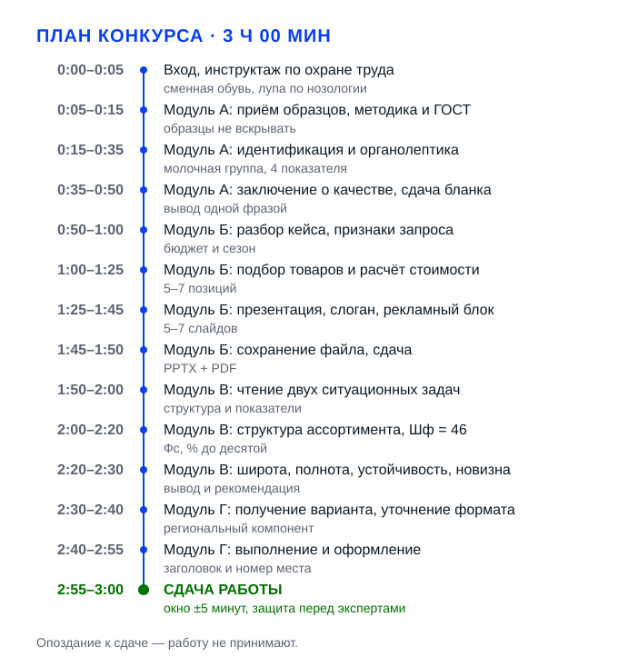
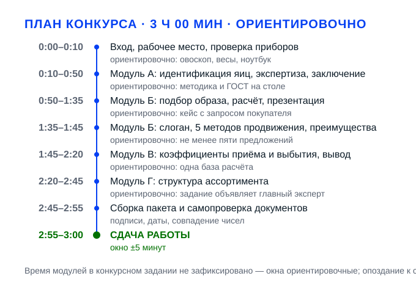
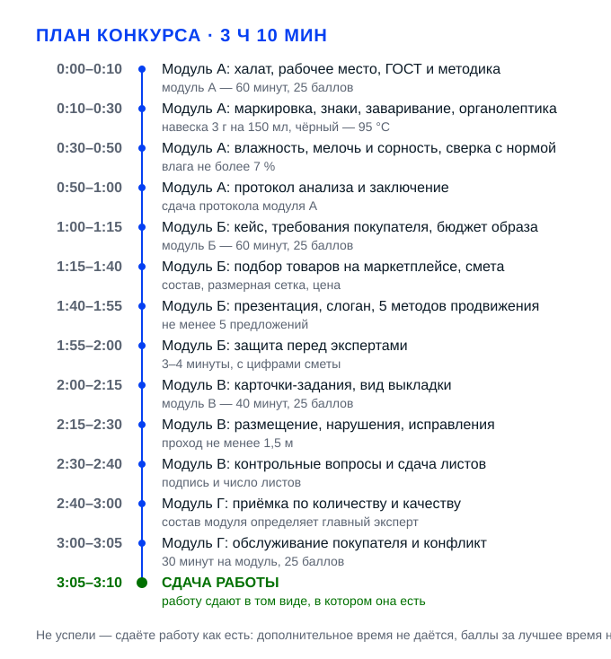

Торговое дело (Р,О)
Задания ниже — официальные файлы «Абилимпикс» (источник: abilympics-russia.ru), разложенные по категориям. Решения написаны по тексту задания, регламенту и критериям оценки; в них указано, что именно проверяет эксперт.
Школьник
14–16 лет, базовый уровень заданияВыдержка из официального конкурсного задания: страницы, относящиеся к категории «Школьник» (стр. 4–8 источника).
Пошаговое решение
Задание для школьников — четыре модуля за три часа: 50 минут на товароведение и экспертизу молочных товаров, 60 — на маркетинг с подбором образа на маркетплейсе, 40 — на две ситуационные задачи по управлению ассортиментом и 30 — на вариативный региональный модуль. Модули идут строго по порядку (А, Б, В, Г), каждый оценивается отдельно и не вытекает из предыдущего, поэтому провал в одном не тянет за собой остальные. Но и взять время из следующего модуля нельзя: не успели — сдаёте в том виде, в котором успели, дополнительных минут не дают и за скорость баллов не добавляют. Баллы ставят за то, что перечислено в самом задании: читать маркировку и ГОСТ, заполнять первичные документы, проводить органолептические исследования, работать на компьютере и объяснять результат экспертам. Ниже — вся последовательность по минутам, с тем, что именно проверяют и где чаще всего теряют баллы.

Задача 1. Войти на площадку и подготовить рабочее местоМодуль А · 50 минут
Первый модуль самый короткий — 50 минут на всё: приемку образцов, чтение нормативного документа, органолептику и заключение. Поэтому подготовка не отдельный этап, а первые десять минут модуля, и они же самые дешёвые: если на входе и разборе документов потерять пять минут, дальше придётся сокращать дегустацию, а именно на ней строится заключение о качестве. Здесь мы настраиваем стол, документы и голову так, чтобы оставшиеся сорок минут работать без остановок.
Действие 1.1. Пройти вход и инструктаж
Шаг 1.1.1
Заходим на площадку за десять минут до старта: сменная обувь, чистая одежда без крупных надписей, длинные волосы убраны. Из дома берём только то, что разрешено по нозологии, — лупу, линейку с крупной шкалой, собственные очки — и согласовываем это с главным экспертом до начала, а не в момент выдачи образца. Ручки, бланки, методики и сами образцы выдаёт организатор, поэтому свои канцелярские принадлежности на стол не выкладываем: лишний предмет на рабочем месте читается как нарушение, а не как предусмотрительность.
Список разрешённого — прямое требование раздела «Особые указания»: приносить можно предметы, облегчающие работу по нозологии, и сменную обувь, всё остальное обеспечивает организатор. Лупа для участника с плохим зрением не хитрость, а законный инструмент, но только согласованный заранее. Несогласованный предмет изымают на входе, и время на выяснение уходит из модуля А — самого короткого из четырёх.
На столе только выданное организатором, ваша лупа или линейка названы эксперту до старта, обувь сменная, одежда чистая. Отдельно проверьте карманы: телефон на площадке — нарушение, за которое работу могут не оценить вовсе.
Чаще всего приходят в той же обуви, в которой приехали, и вспоминают об этом у входа. Вторая ошибка — принести «свою удобную ручку» вместе с тетрадью: по правилам это лишние предметы, их попросят убрать, и первые минуты уйдут на споры вместо образца.
Эксперт осматривает участника на входе, до старта, и отмечает спецодежду, обувь и отсутствие посторонних предметов. Спокойное «лупа согласована с главным экспертом» закрывает вопрос за секунду.
Шаг 1.1.2
Слушаем инструктаж по охране труда и пожарной безопасности целиком, даже если кажется, что всё знакомо: показывают аварийный выход, место огнетушителя, кнопку остановки и правило «упало — не поднимаем сами». Уточняем два практических момента: можно ли выходить из зала в туалет и как позвать эксперта, если образец выдан с нарушенной упаковкой. Ответы запоминаем сразу, потому что в середине модуля спрашивать будет некогда.
Правила охраны труда и умение пользоваться противопожарной техникой прямо названы в задании среди проверяемых умений, и за них начисляют баллы наравне с профессиональной частью. Кроме того, инструктаж объясняет, кто и как решает спорные ситуации с образцами: без этого знания участник остаётся один на один с испорченной упаковкой и теряет время.
Вы можете назвать аварийный выход, место огнетушителя и то, к кому обращаться по спорному образцу. Если хотя бы один ответ не вспоминается — переспросите сразу, инструктаж для этого и проводится. Ответы на эти два вопроса лучше проговорить сразу после инструктажа.
Кивнуть на инструктаже и не запомнить, где выход: на чемпионате это фиксируется как незнание требований охраны труда. Вторая ошибка — стесняться задать вопрос про выход из зала и потом искать разрешение у соседа по столу.
Эксперт может задать контрольный вопрос по безопасности в любой момент модуля, чаще всего в начале, пока раскладываются документы. Контрольный вопрос обычно звучит как «куда выходить при пожаре».
Шаг 1.1.3
Осматриваем рабочее место: стол, стул нужной высоты, освещение, наличие розетки, если предстоит модуль Б на ноутбуке. Сразу убираем всё, что мешает: сумку под стол, лишние бумаги в сторону, документы — в один ровный угол, чтобы их было видно. Если стол качается или лампа мигает, говорим эксперту до старта, а не во время работы: после старта замена места не предусмотрена.
Ровное рабочее место экономит время на каждом действии: когда бланк, методика и образец лежат в трёх разных углах, участник тратит по десять секунд на каждый поиск, а за пятьдесят минут это складывается в минуты. Организация рабочего места входит в критерии оценки по всем модулям, и её видно без всяких измерений.
На столе свободно примерно две трети площади, документы лежат стопкой по порядку работы, образец стоит так, чтобы к нему было удобно подойти с любой стороны, ничего не свисает с края. Свет должен падать на стол слева, если вы правша.
Завалить стол сумкой и курткой: половина рабочего пространства занята, бланк приходится держать на весу, и запись получается неразборчивой. Вторая ошибка — молча терпеть мигающую лампу и потом переписывать заключение.
Эксперт проходит по площадке перед стартом и отмечает, готово ли место: чистый стол с разложенными документами читается как готовность к работе. Качающийся стол или тёмное пятно на столе он тоже отмечает.
Действие 1.2. Разобрать задание и нормативные документы
Шаг 1.2.1
Читаем выданное задание один раз целиком, не начиная работать, и подчёркиваем карандашом все глаголы: идентифицировать, оценить, оформить, сделать вывод. Затем выписываем на черновик четыре строки — что дано, что нужно получить, в каком виде сдать и сколько на это минут. Такой черновик занимает три минуты и потом работает как план, к которому можно вернуться, когда заканчивается время.
Порядок «сначала прочитать целиком, потом действовать» прописан в самой последовательности выполнения задания: изучение задания и выделение ключевых моментов идут первыми пунктами. Практический смысл в том, что в модуле А оценивают не только результат, но и полноту характеристики, а пропущенный пункт — это потерянный балл, который невозможно вернуть, потому что время модуля уже ушло.
На черновике четыре строки, и в них нет слов «и так далее»: каждый пункт называет конкретное действие и конкретный результат. Если строка получается размытой — вы не поняли задание и должны перечитать абзац, а не начинать наугад.
Начать с первого попавшегося пункта, не дочитав до конца: типичный итог — заполнены характеристика и органолептика, а заключение о качестве не написано, и половина модуля не зачтена. Вторая ошибка — читать задание по диагонали за тридцать секунд.
Эксперт подходит и смотрит, есть ли у участника план на бумаге. Это не обязательное требование, но по нему видно, работает человек осознанно или реагирует на первый абзац.
Шаг 1.2.2
Раскладываем документы в порядке работы: сверху методика выполнения анализа, под ней нормативный документ на группу товара, рядом пустой бланк заключения и чистый черновик. В методике находим таблицу органолептических показателей и обводим её, в нормативном документе — раздел с требованиями к маркировке и раздел с показателями качества. Закладки делаем сразу: листки-стикеры или просто загнутый угол, но так, чтобы нужная страница открывалась за секунду.
В модуле А участнику выдают нормативный документ и методику, по которым и проводят анализ, и оценивают именно соответствие этим документам, а не общим представлениям о молоке. Разница между «на вид нормально» и «соответствует таблице ГОСТ по всем четырём показателям» стоит нескольких баллов, и появляется она ровно здесь, на этапе подготовки документов.
Открыли и обвели: таблицу органолептики в методике, требования к маркировке и показатели качества в нормативе, бланк заключения с полями под каждый показатель. Если какого-то раздела найти не удалось — спросите у эксперта сейчас.
Читать документ подряд с первой страницы: на это уходит десять минут, а нужные таблицы всё равно находятся в середине. Вторая ошибка — работать по памяти и не открывать норматив вообще, тогда любая ссылка в заключении будет неточной.
Эксперт видит, открыт ли нормативный документ на нужной странице и сверяется ли участник с таблицей. Работа «по памяти» в этом модуле заметна сразу. Открытый норматив на нужной странице — для него сигнал, что работа идёт по документу.
Шаг 1.2.3
Делим пятьдесят минут на четыре отрезка и записываем их на черновике: десять минут на приемку и идентификацию, пятнадцать на органолептику, пятнадцать на заключение и бланк, десять в резерв на переписывание. Резерв не «на всякий случай», а на конкретную работу: переписать бланк начисто и проверить, что все поля заполнены, — это всегда дольше, чем кажется.
Без разбивки участники почти всегда застревают на органолептике — она интересная — и приходят к заключению за пять минут до конца. Заключение о качестве и есть главный результат модуля, ради него всё делалось, и сдавать его недописанным означает потерять самую весомую часть оценки.
На черновике четыре времени, и в каждый момент вы можете сказать, на каком отрезке находитесь. Практическая проверка: если через пятнадцать минут после старта идентификация ещё не закончена, дальше работаем быстрее, не углубляясь.
Планировать «как пойдёт»: в результате бланк заполняется в спешке, почерк не читается, и эксперт не может разобрать часть записей. Вторая ошибка — оставлять ноль минут на проверку бланка перед сдачей.
Эксперт следит за темпом: если участник в середине модуля ещё рассматривает упаковку, это видно и по времени, и по пустому бланку. Если бланк к середине модуля пуст, это видно сразу и оценивается как потеря темпа.
Действие 1.3. Принять натуральные образцы
Шаг 1.3.1
Получаем образцы и сверяем с заданием: сколько позиций, какая группа товара (по заданию школьников это молочная группа), цела ли упаковка, читается ли маркировка, есть ли дата изготовления и срок годности. Образцы до старта не вскрываем и не переставляем с места на место: вскрытие раньше времени — это нарушение порядка работы и потеря товарного вида пробы, которую потом оценивают.
Приемка по количеству и качеству — первое из практических умений, названных в задании, и единственный момент, когда некомплект ещё можно исправить. После старта замена идёт через главного эксперта и только при уважительной причине. Пять минут спокойной сверки дешевле, чем модуль, построенный на одном образце вместо двух.
Количество позиций совпадает с заданием, упаковка целая, маркировка читается, дата и срок годности на месте. Всё сомнительное — надорванный угол, стёртая дата, вздутая крышка — показываем эксперту до старта.
Начать вскрывать и пробовать до старта: проба испорчена, а работа ещё не начата. Вторая ошибка — обнаружить, что образцов меньше, чем в задании, и промолчать, рассчитывая обойтись: недостающую позицию сравнивать не с чем.
Эксперт фиксирует выдачу образцов и следит, чтобы до старта упаковки оставались закрытыми. Спокойный и точный доклад о некомплекте он отмечает как владение ситуацией.
Шаг 1.3.2
Пока упаковка закрыта, переписываем с неё всё, что понадобится в бланке: наименование, изготовителя и его адрес, массу нетто, состав, массовую долю жира, пищевую ценность, дату изготовления, срок годности и условия хранения, обозначение стандарта и знак ЕАС. Пишем на черновике столбиком, по одному образцу на строку — так данные не перепутаются, когда образцов два или три.
Это ровно те реквизиты, которые проверяют при идентификации и оценке маркировки, и переписать их с закрытой упаковки проще всего: потом она вскрыта, часть надписей закрыта руками и посудой. Кроме того, черновик страхует от ошибки в бланке: переписывать с черновика надёжнее, чем заново читать мелкий шрифт на мокрой упаковке.
По каждому образцу на черновике есть не меньше десяти реквизитов, включая массу нетто и массовую долю жира. Проверьте читаемость своей записи: если через двадцать минут вы сами не разберёте цифру, эксперт тем более не разберёт.
Записывать «молоко, 3,2 %, нормальное» — в бланке потом не хватает половины обязательных сведений. Вторая ошибка — держать данные в голове: к моменту заполнения заключения часть цифр забывается или путается между образцами.
Эксперт может попросить показать, откуда взята цифра в бланке. Черновик с реквизитами закрывает этот вопрос сразу. Черновик с реквизитами он может попросить показать, если цифра в бланке вызовет сомнение.
Задача 2. Модуль А: идентифицировать товар и оценить его качествоМодуль А · 50 минут
Сорок минут основной работы модуля А: по натуральному образцу молочного товара дать товароведную характеристику, определить ассортиментную принадлежность по упаковке и внешнему виду, провести органолептическую оценку по выданной методике и оформить вывод-заключение о качестве. Оценивают здесь не красоту формулировок, а полноту: названы ли группа, подгруппа и вид, прочитана ли маркировка, сопоставлены ли фактические показатели с требованиями норматива и сделан ли однозначный вывод — соответствует товар требованиям или нет.
Действие 2.1. Определить ассортиментную принадлежность
Шаг 2.1.1
Берём образец в руки и идём по трём ступеням: группа, подгруппа, вид. Группа здесь молочная, подгруппа — по сырью и способу обработки (питьевое молоко, кисломолочные напитки, сметана, творог, масло, сыр), вид — конкретное наименование с массовой долей жира и способом термической обработки, например «молоко питьевое пастеризованное 3,2 %». Формулировку берём с упаковки дословно, а не пересказываем своими словами.
Идентификация ассортиментной принадлежности по внешнему виду и упаковке — первое, что требуется в задании, и от неё зависит всё остальное: для сметаны и для кефира разные таблицы показателей, и оценка «по неверной таблице» автоматически даёт неверное заключение. Точное название вида с процентом жира показывает эксперту, что участник понимает структуру ассортимента, а не просто угадал товар.
В бланке заполнены три строки — группа, подгруппа, вид, и вид записан так же, как на упаковке, включая процент жира и слово «пастеризованное» или «стерилизованное». Если сомневаетесь между двумя подгруппами, решает состав: он указан на упаковке.
Написать «молочный продукт» и остановиться: подгруппа не определена, значит, непонятно, с какой таблицей сверять показатели. Вторая ошибка — путать молочный напиток с молоком: у восстановленного продукта другой состав и другие требования.
Эксперт сверяет записанное название с упаковкой и с заданием. Расхождение в проценте жира или в способе обработки он видит сразу, это первое, что бросается в глаза.
Шаг 2.1.2
Читаем маркировку по обязательным реквизитам, отмечая каждый галочкой на черновике: наименование, состав, масса нетто, пищевая ценность (белки, жиры, углеводы, энергетическая ценность), дата изготовления, срок годности, условия хранения, изготовитель и его адрес, обозначение стандарта или технического документа, единый знак обращения на рынке. Отдельно смотрим, есть ли рекомендации по применению и номер партии.
Умение читать маркировку товаров прямо названо в задании среди проверяемых, и оценка маркировки — самая «дешёвая» часть баллов: она не требует приборов, только внимания. Каждый отсутствующий обязательный реквизит — это либо снижение оценки, либо законное основание считать товар не соответствующим требованиям, и в заключении это надо отразить.
Все обязательные реквизиты найдены и отмечены, отсутствующие выписаны отдельно с указанием, какого именно сведения нет. Проверьте мелкий шрифт у края этикетки и на обратной стороне упаковки — там чаще всего прячется адрес изготовителя.
Смотреть только на название и цену: половина обязательных реквизитов остаётся непроверенной, а вместе с ними теряются баллы за маркировку. Вторая ошибка — не заметить, что дата нанесена неразборчиво или поверх другой даты.
Эксперт просит показать на упаковке два-три реквизита, чаще всего дату изготовления и адрес изготовителя. Быстрый и точный показ работает лучше любого рассказа.
Шаг 2.1.3
Находим на упаковке ссылку на нормативный документ и переписываем её в бланк полностью: для молока питьевого это ГОСТ 31450, для сметаны — ГОСТ 31452, для кефира — ГОСТ 31454, а общие требования безопасности задаёт технический регламент Таможенного союза 033/2013 о безопасности молока и молочной продукции. Если на упаковке стоит не ГОСТ, а технический условия изготовителя, так и записываем: это не ошибка товара, но это другой документ, и сверять показатели нужно по нему.
В модуле А оценивают соответствие требованиям нормативных документов, и ссылка на документ в заключении — доказательство, что сверка была, а не имитировалась. Кроме того, обозначение стандарта определяет, какую таблицу показателей брать: у продуктов по техническим условиям требования могут отличаться от ГОСТ, и подмена документа превращает верное заключение в неверное.
В бланке записано обозначение документа с номером, оно совпадает с тем, что напечатано на упаковке, и открыт именно этот раздел норматива. Сверьте цифры посимвольно: перепутанный номер ГОСТа — заметная и обидная ошибка.
Записать «ГОСТ» без номера: ссылка ничего не доказывает. Вторая ошибка — сверять молоко по таблице для кисломолочных напитков, потому что «всё равно молочное». Третья ошибка — указать документ, которого на упаковке нет вообще, чтобы «было солиднее».
Эксперт проверяет, совпадает ли указанный в заключении документ с упаковкой и открыт ли он у участника. Это один из быстрых способов отличить работу с документами от работы по памяти.
Шаг 2.1.4
Заполняем таблицу идентификации: по каждому образцу строка с наименованием, изготовителем, массой нетто, жирностью и выводом «принадлежность установлена». Если в задании два образца, таблица получается на две строки, и в каждой заполнены все графы. Пишем печатными буквами или разборчиво, без сокращений, которые потом не расшифровать. Графы заполняем по порядку слева направо, чтобы не пропустить ни одну.
Таблица идентификации — то, что эксперт читает первым, и по ней он за минуту понимает, разобрался ли участник в образцах. Аккуратная таблица экономит время и участнику: все данные для органолептики и заключения уже собраны в одном месте, и возвращаться к упаковке не нужно.
Таблица заполнена по всем образцам, в каждой строке не меньше пяти граф, ни одна графа не пустая и не содержит прочерка. Проверьте, что проценты жирности совпадают с упаковкой до десятой доли. Пустая графа или прочерк без пояснения — это невыполненный пункт задания.
Оставить пустые графы «потом допишу»: к концу модуля их обычно не дописывают. Вторая ошибка — свести оба образца в одну строку, тогда сравнение теряет смысл. Третья ошибка — заполнить таблицу после органолептики, когда упаковка уже вскрыта.
Эксперт смотрит таблицу в момент сдачи и сверяет две-три цифры с упаковкой. Пустая графа видна сразу и оценивается как невыполненный пункт. Строку с наименованием он сверяет с упаковкой дословно.
Действие 2.2. Разобрать потребительские свойства и показатели
Шаг 2.2.1
Выписываем состав и пищевую ценность так, как они напечатаны: последовательность ингредиентов, белки, жиры, углеводы в граммах на сто граммов и энергетическую ценность в килокалориях. Затем сравниваем с тем, что должно быть у этого вида товара: у питьевого молока в составе только молоко и, возможно, витамины, а растительные жиры в составе — признак молокосодержащего продукта, и называть его молоком нельзя.
Потребительские свойства — это то, ради чего товар покупают, и первое, что проверяет покупатель на полке. Задание требует дать характеристику именно по потребительским свойствам, а не переписать этикетку: значит, нужно показать, что состав соответствует виду товара, а пищевая ценность — заявленной жирности. Подмена молочного жира растительным — классическая фальсификация, и её признаки ищут именно в составе.
Состав и пищевая ценность выписаны полностью, и по ним можно ответить на вопрос, соответствует ли продукт своему виду. Быстрая проверка: сумма белков, жиров и углеводов не должна превышать ста граммов на сто граммов продукта.
Переписать только калорийность: без состава характеристика неполная. Вторая ошибка — не заметить в составе растительный жир или сухое молоко и назвать продукт цельным молоком. Третья ошибка — переписать пищевую ценность в расчёте на порцию, а не на сто граммов.
Эксперт задаёт вопрос «почему вы считаете, что это молоко, а не молочный напиток» — ответ должен опираться на состав, а не на название на лицевой стороне.
Шаг 2.2.2
Проверяем количественные показатели, которые видно без приборов: массовую долю жира в процентах, массу нетто, для молока — указание на способ обработки, для сметаны и творога — заявленную жирность. Если в методике есть плотность или кислотность, смотрим, предусмотрено ли их измерение на площадке: без ареометра и титрования эти показатели не определяют, а берут из маркировки и оценивают только на соответствие заявленному.
Жирность — главный количественный признак вида: молоко 2,5 % и 3,2 % — разные позиции ассортимента с разной ценой и разным спросом, и путать их в характеристике нельзя. Кроме того, задание требует оценивать по потребительским свойствам, а не выдумывать лабораторные исследования: если прибора нет, честнее указать «по маркировке», чем написать придуманное значение плотности.
Жирность и масса нетто в бланке совпадают с упаковкой, для каждого показателя указано, откуда взято значение — измерено или взято с маркировки. Такой пометки достаточно, чтобы эксперт увидел корректность работы.
Написать «плотность 1028» без измерения, потому что «так должно быть»: это выдуманные данные, и эксперт отличает их от результата за секунду. Вторая ошибка — перепутать жирность в сухом веществе и в продукте.
Эксперт сверяет количественные показатели с упаковкой и смотрит, различает ли участник измеренное и заявленное. Это вопрос на понимание, а не на память.
Шаг 2.2.3
Смотрим срок годности, дату изготовления и условия хранения, затем проверяем, соблюдены ли они на момент конкурса: для пастеризованного молока в закрытой упаковке это обычно считанные дни при температуре от двух до шести градусов, для стерилизованного — месяцы при температуре до двадцати пяти. Отмечаем, хранился ли образец при той температуре, которая указана на упаковке, и нет ли признаков нарушения — вздутия, подтёков, конденсата под крышкой.
Срок годности и условия хранения — потребительское свойство, от которого напрямую зависит безопасность, и один из пунктов, по которым делают вывод о качестве. Если дата изготовления вызывает сомнение или условия хранения явно нарушены, товар нельзя признать соответствующим даже при идеальных органолептических показателях.
Дата изготовления и срок годности переписаны в бланк, температура хранения сопоставлена с указанной на упаковке, признаки нарушения целостности описаны. Проверьте арифметику: дата изготовления плюс срок годности должны давать дату, которая ещё не наступила.
Не посмотреть дату вообще — самая частая потеря в этом пункте, а просроченный образец в задании встречается намеренно. Вторая ошибка — записать «хранился в холодильнике», не проверив, при какой температуре.
Эксперт проверяет, отмечены ли дата и условия хранения, и отдельно смотрит, заметил ли участник признаки нарушения упаковки, если они есть. Просроченный образец в задании встречается намеренно, и его надо увидеть.
Действие 2.3. Провести органолептическую оценку
Шаг 2.3.1
Готовим пробу: образец выдерживаем до комнатной температуры (примерно двадцать градусов), посуду берём чистую, без запаха, воду для ополаскивания рта — питьевую. Молоко перед оценкой аккуратно перемешиваем, переливая из стакана в стакан, сметану и творог разравниваем ложкой. Каждую новую пробу оцениваем после ополаскивания рта водой, чтобы вкус предыдущей не переносился.
Методика выполнения анализа, которую выдают в модуле, задаёт именно такой порядок, и отклонение от него искажает результат: холодное молоко почти не пахнет, а после сметаны вкус кефира кажется кислее, чем он есть. Органолептические исследования названы в задании отдельным умением, и оценивают в них не только вывод, но и то, как участник к работе с пробой подошёл.
Проба комнатной температуры, посуда чистая и без посторонних запахов, между образцами рот ополоснут. Проверьте, что на столе нет кофе, духов и мыла — их запах переносится на пробу и мешает оценке. Посторонние запахи в зале — тоже причина попросить другое место до старта.
Пробовать образец прямо из холодильника: вкус и запах смазаны, вывод получается приблизительным. Вторая ошибка — пробовать два образца подряд, не ополоснув рот, и записывать вкус второго по инерции первого.
Эксперт наблюдает за подготовкой пробы: держит ли участник образец при комнатной температуре, меняет ли ложку, полощет ли рот. По этим деталям видно, работал ли он по методике.
Шаг 2.3.2
Оцениваем внешний вид и консистенцию: для молока — однородная непрозрачная жидкость без осадка, хлопьев и комков, без отстоя сливок на поверхности; для сметаны и творога — однородная, без крупинок и отделения сыворотки. Смотрим на просвет у окна или под лампой, наклоняем стакан, чтобы увидеть след на стенке, и отдельно отмечаем, есть ли на стенках прилипшие частицы.
Внешний вид и консистенция — первый показатель в таблице методики и самый информативный: хлопья и отстой говорят о скисании или о нарушении гомогенизации, комки в твороге — о нарушении технологии. Именно по этому показателю чаще всего и обнаруживается несоответствие, если образец подобран с дефектом.
Описание конкретное: указано, однородная консистенция или нет, есть ли осадок, хлопья, отстой, комки, и где именно они видны. Формулировка «нормальная» без описания не засчитывается как характеристика.
Ограничиться словом «жидкое»: непонятно, дефект это или норма для данного вида. Вторая ошибка — оценивать консистенцию, не перемешав пробу, и принять естественный отстой за порок. Третья ошибка — описывать консистенцию по фотографии на упаковке, а не по пробе.
Эксперт подходит в момент оценки и смотрит, наклоняет ли участник стакан, смотрит ли на просвет, описывает ли увиденное словами из методики. Слова из методики он слышит и узнаёт, общие оценки — нет.
Шаг 2.3.3
Определяем цвет и запах. Цвет смотрим в прозрачной посуде при рассеянном свете: у молока он белый с лёгким кремовым оттенком, у сметаны — белый с кремовым, у творога — белый, допускается кремовый; серый, синеватый или желтоватый неравномерный оттенок — признак порока или нарушения. Запах проверяем двумя-тремя короткими вдохами сразу после перемешивания, не наклоняясь низко и не вдыхая глубоко.
Цвет и запах описаны в методике отдельными показателями, и каждый из них даёт свой балл в характеристике. Запах — самый чувствительный признак свежести: кислый, дрожжевой, затхлый или кормовой запах появляется раньше, чем меняется вкус, и по нему несоответствие определяют увереннее всего.
Записаны два отдельных описания — цвет и запах, с указанием оттенка и наличия или отсутствия посторонних запахов. Если запах кажется слабым, согрейте пробу в ладонях и повторите вдох. Оба описания должны быть отдельными строками бланка, а не одной общей фразой.
Написать «цвет белый, запах молочный» и не отметить посторонний оттенок: именно посторонние признаки и оценивают. Вторая ошибка — глубокий вдох над пробой, из-за которого обоняние притупляется и второй образец оценивается неверно.
Эксперт может попросить описать запах словами, а не оценкой «нормально». Умение назвать конкретный признак он и проверяет. Если участник говорит «пахнет молоком», он просит уточнить, каким именно.
Шаг 2.3.4
Пробуем вкус: небольшую порцию держим во рту несколько секунд, распределяя по всей поверхности языка, и оцениваем одновременно вкус и послевкусие. У молока вкус чистый, слегка сладковатый, без кислого, горького, солёного и металлического привкуса; у сметаны и творога — чистый кисломолочный, без горечи и излишней кислоты. Проглатывать пробу не обязательно, но и выплёвывать демонстративно не стоит: оценивается вкус, а не количество съеденного.
Вкус и запах — решающие показатели в таблице органолептики, и в заключении именно они чаще всего определяют вывод. Кислый вкус у молока означает скисание, горький — развитие посторонней микрофлоры или попадание моющих средств, металлический — нарушение технологии или упаковки. Каждый из этих признаков нужно назвать, а не обозначить общим «вкус не соответствует».
Вкус описан так же подробно, как внешний вид: назван основной вкус и отмечено наличие или отсутствие посторонних привкусов и послевкусия. Если вкус вызывает сомнение, повторите пробу после ополаскивания рта и сравните с другим образцом.
Попробовать на бегу и записать «вкус нормальный», пропустив послевкусие: горький привкус обычно проявляется через несколько секунд. Вторая ошибка — пробовать после сладкого чая или печенья, которые остаются во рту.
Эксперт смотрит, описывает ли участник вкус конкретными словами и различает ли кисломолочный вкус от порока скисания. Различает ли он кисломолочный вкус и порок скисания — вопрос, который задают чаще всего.
Действие 2.4. Оформить заключение о качестве
Шаг 2.4.1
Сводим фактические описания с таблицей требований: по каждому показателю из методики пишем слева фактическое значение, справа требуемое по нормативу, и отмечаем совпадение или расхождение. Работаем строго по строкам таблицы, не пропуская ни одной, даже если показатель кажется неважным. Если по какому-то показателю измерение не проводилось, пишем «по маркировке» и приводим заявленное значение.
Сопоставление с нормативом — та самая операция, которая превращает наблюдения в экспертизу, и без неё заключение остаётся мнением. В таблице требований по каждому показателю указан допуск, и расхождение оценивают именно относительно него, а не относительно соседнего образца.
Таблица заполнена по всем строкам методики, у каждого показателя есть фактическое и требуемое значение, расхождения выделены. Проверьте, что ни в одной строке нет прочерка без пояснения. Если показатель в методике есть, а строки в таблице нет — это пропуск, а не мелочь.
Сравнивать два образца между собой вместо сравнения с нормативом: более свежий образец не значит соответствующий. Вторая ошибка — заполнить только те строки, где всё в порядке, и пропустить расхождения.
Эксперт читает таблицу сопоставления целиком: по ней видно, работал ли участник с нормативом или описывал впечатления. Строки с расхождениями он читает внимательнее всего: именно по ним делают вывод.
Шаг 2.4.2
Формулируем вывод одной фразой, которая начинается с названия товара и заканчивается однозначным решением: «образец соответствует требованиям ГОСТ по проверенным показателям» или «образец не соответствует по такому-то показателю, что подтверждается таким-то признаком». Дальше добавляем два-три предложения обоснования с конкретными признаками: что именно видно, чем пахнет, какая цифра с чем не сошлась.
Вывод-заключение о качестве — итоговый результат модуля, ради него проводят и идентификацию, и органолептику. Оценивают его именно как заключение: с решением и обоснованием, а не как пересказ наблюдений. Формулировка «в целом нормально» не даёт эксперту понять, признан товар соответствующим или нет, и баллы за вывод теряются полностью.
В выводе есть слово «соответствует» или «не соответствует», назван товар, назван документ, и приведены не меньше двух конкретных признаков обоснования. Прочитайте вывод вслух: если из него нельзя понять решение — переписывайте.
Написать «качество хорошее» — самый частый провал этого пункта: оценки нет, решения нет, обоснования нет. Вторая ошибка — признать товар несоответствующим, но не указать, по какому показателю, тогда вывод невозможно проверить.
Эксперт читает заключение вслух при сдаче и проверяет, совпадает ли решение с описанными признаками. Противоречие между таблицей и выводом он замечает сразу.
Шаг 2.4.3
Переносим всё в чистый бланк: сначала идентификация, затем характеристика по потребительским свойствам, затем таблица сопоставления и вывод, в конце подпись и дата. Пишем разборчиво, цифры — с единицами измерения, проценты — с точностью до десятой. Перед сдачей проходим по бланку сверху вниз и проверяем, что заполнены все поля, включая те, что кажутся очевидными.
Бланк — единственное, что остаётся у эксперта после модуля, и оценивают по нему, а не по тому, что участник помнит и мог бы рассказать. Пропущенное поле читается как невыполненный пункт, даже если работа была сделана, поэтому перенос в чистовик не формальность, а способ сохранить уже заработанные баллы.
Все поля бланка заполнены, единицы измерения на месте, подпись и дата стоят, исправлений и зачёркиваний нет. Сверьте бланк с черновиком по количеству строк — потерянная строка встречается чаще, чем ошибка в цифре.
Сдать черновик вместо бланка: часть записей нечитаема, и оценка идёт по тому, что удалось разобрать. Вторая ошибка — заполнять бланк в последние три минуты, когда времени на проверку уже нет. Третья ошибка — оставить в бланке пометки, которые не относятся к делу.
Эксперт принимает бланк в конце модуля и оценивает его как документ: полнота, читаемость, наличие вывода. Дописать после сдачи нельзя. Он смотрит и на исправления: зачёркнутая цифра без подписи вызывает вопросы.
Задача 3. Модуль Б: подобрать товар под запрос и продать его через презентациюМодуль Б · 60 минут
Самый длинный модуль — час на компьютере. Дают кейс-ситуацию с покупательским запросом (цвет, размер, сезон, стиль, повод), и из товаров маркетплейса нужно собрать подходящий образ, оформить презентацию для покупателя с информационно-рекламными материалами и придумать слоган для продвижения. Оценивают три вещи: попал ли подбор в запрос, доведена ли презентация до состояния, в котором её можно показать покупателю, и есть ли в ней аргументы, а не только картинки.
Действие 3.1. Разобрать кейс и спланировать час
Шаг 3.1.1
Читаем кейс дважды и выписываем запрос в виде списка признаков: цвет, размер, сезон, стиль, повод, ограничение по цене, если оно есть, особые пожелания вроде «не любит синтетику» или «нужно на каждый день». Каждый признак формулируем как проверяемое условие, например «цвет — синий или голубой», «сезон — осень, температура от плюс пяти до плюс пятнадцати». Список держим перед глазами до конца модуля.
Подбор «на глаз» почти всегда уходит в сторону от запроса: участник увлекается красивой вещью и забывает про размер или сезон, а именно соответствие запросу и оценивают в первую очередь. Список признаков нужен ещё и для презентации: каждый слайд потом обосновывается пунктом из этого списка, и обоснование получается точным, а не общими словами о стиле.
В списке не меньше пяти признаков, и каждый можно проверить по карточке товара. Если признак нельзя проверить («чтобы было красиво»), значит, он не из кейса, и в обоснование его лучше не брать. Проверяемых признаков в кейсе обычно пять-шесть, реже семь.
Пробежать кейс глазами и начать искать товары: половина условий остаётся незамеченной, и образ получается «в целом похожим». Вторая ошибка — придумать признаки, которых в кейсе нет, и обосновывать подбор своими вкусами.
Эксперт сверяет готовый образ с кейсом по пунктам. Именно расхождение по цвету или сезону он отмечает как невыполнение запроса, даже если образ выглядит красиво.
Шаг 3.1.2
Определяем рамки: бюджет, если он указан, количество позиций в образе, сезон и назначение. Сразу решаем, что входит в образ обязательно (основная вещь, обувь, аксессуар), а что добавляется по желанию, и записываем это рядом со списком признаков. Если бюджет не задан, ориентируемся на среднюю цену по категории и не берём самое дорогое: задача — подобрать, а не потратить максимум.
Бюджет и состав образа — это ограничения, внутри которых нужно уложиться, и они же самые частые источники ошибок: подобранные вещи по отдельности хороши, а вместе не складываются в комплект. Заранее определённый состав экономит время на поиске и не даёт уйти в бесконечный просмотр карточек.
Записаны бюджет, число позиций и обязательные элементы. Проверьте арифметику: сумма выбранных вещей не превышает рамку, и в образе есть всё, что обязательно. Если сумма уже превышает рамку, замените самую дорогую позицию, а не убирайте обязательную.
Начать с обуви и потом обнаружить, что бюджет исчерпан и верхней вещи не осталось. Вторая ошибка — собрать пять аксессуаров и ни одной основной вещи. Третья ошибка — подобрать образ без обуви: комплект выглядит незаконченным, и это видно на первом слайде.
Эксперт смотрит, есть ли в образе обязательные элементы и уложился ли участник в рамку. Отсутствие обуви в образе «на осень» он замечает сразу. Полнота комплекта — первое, что он проверяет по кейсу.
Шаг 3.1.3
Делим шестьдесят минут: десять на разбор кейса и поиск, двадцать пять на подбор и расчёт, пятнадцать на презентацию, пять на слоган и пять на проверку и сохранение. Тут же создаём на рабочем столе папку с латинским именем по номеру рабочего места и складываем туда все файлы: скриншоты, таблицу расчёта, презентацию. Имя файла презентации — по шаблону чемпионата, без пробелов.
Работа на компьютере входит в перечень проверяемых умений, и порядок в файлах — часть этой оценки. Презентация, оставшаяся в «Загрузках» или названная «презентация_final_2», может просто не найтись при сдаче, а время на поиск вычитается из модуля. Папка с латинским именем защищает ещё и от того, что часть программ не открывает файлы с кириллицей в пути.
Папка создана, имя по шаблону, все материалы внутри, презентация названа латиницей. Проверьте, что файл открывается двойным щелчком, а не только из программы, в которой создан. Проверьте и то, что имя файла не содержит пробелов и кириллицы.
Работать в «Документах» и разложить файлы потом: к концу часа на это не остаётся времени. Вторая ошибка — назвать файл по-русски с пробелами и точками, из-за чего он не открывается на другом компьютере.
Эксперт открывает папку в момент сдачи. Отсутствие файла в нужном месте и с нужным именем оценивается как незавершённая работа, даже если презентация была прекрасной.
Действие 3.2. Подобрать товары под запрос
Шаг 3.2.1
Открываем маркетплейс и работаем фильтрами, а не глазами: задаём категорию, нужный размер, диапазон цены, цвет и сезон. Сортируем по популярности или по цене — в зависимости от того, что важнее по кейсу. Просматриваем первые два-три десятка карточек, но не глубже: задача не найти идеал, а собрать работающий комплект за отведённое время. Отобранные карточки сразу открываем в отдельных вкладках, чтобы не искать их повторно.
Фильтры — это тот же принцип, что и таблица требований в модуле А: сначала сужаем выборку по формальным признакам, потом смотрим на качество. Без фильтров по размеру участник влюбляется в вещь, которой нет в нужном размере, и либо берёт не то, либо тратит пятнадцать минут на поиск замены.
В выборке остались товары, которые подходят по размеру, цвету и цене, и их не меньше десяти. Если после фильтров осталось два-три товара, ослабьте один признак — например, диапазон цены — и проверьте, не появится ли подходящее.
Искать «по картинке» без фильтров: в подборке оказываются вещи другого сезона и размера. Вторая ошибка — фильтровать по цене «от дешёвого», тогда образ получается несбалансированным по качеству. Третья ошибка — сортировать по скидке и собрать образ из случайных вещей.
Эксперт смотрит, как участник работает с каталогом: по фильтрам или перебором. Это видно по экрану и по времени, за которое найден первый товар. По времени поиска первой позиции видно, знаком ли участник с каталогом.
Шаг 3.2.2
Отбираем пять-семь позиций: основная вещь, вторая вещь для многослойности, обувь, аксессуар и, если уместно, сумка. На каждую позицию сохраняем скриншот карточки с ценой, названием и характеристиками и записываем в таблицу: наименование, цена, размер, цвет, материал. Позиции, которые не проходят по признакам из списка, отбрасываем сразу, даже если они нравятся.
Образ — это комплект, а не набор красивых вещей, и оценивают его именно как комплект: сочетаемость по цвету и стилю, полнота, соответствие сезону. Пять-семь позиций — достаточный минимум, чтобы комплект читался, и достаточно мало, чтобы успеть оформить каждую в презентации.
Позиций не меньше пяти, каждая закрывает свой пункт списка признаков, скриншоты сохранены и подписаны. Проверьте сочетаемость: если две вещи спорят по цвету, одну из них надо заменить, пока есть время.
Набрать десять позиций «чтобы было из чего выбрать» и не оформить половину. Вторая ошибка — собрать комплект из вещей одного цвета и назвать это капсулой, хотя по кейсу нужен был контраст. Третья ошибка — подобрать образ без обуви и без верхней вещи под сезон из кейса.
Эксперт оценивает комплект целиком: сочетаемость, полноту, попадание в запрос. Лишние позиции, которые не складываются в образ, снижают оценку. Сочетаемость по цвету он проверяет по первому слайду.
Шаг 3.2.3
Проверяем каждую позицию по карточке: размерная сетка и таблица размеров продавца, состав материала, сезонность, срок доставки, наличие. Смотрим на отзывы — не на оценку, а на упоминания маломерности и качества. Если по карточке размер неясен, выбираем соседнюю позицию с понятной таблицей, а не пишем в презентации «размер уточнить». Отдельно смотрим, есть ли товар в наличии на складе, а не «под заказ через месяц».
Покупательский запрос включает размер, и образ, в котором размер не проверен, нельзя продать: именно на этом этапе отсеиваются вещи, которые «подошли бы, если бы были в наличии». Умение читать карточку товара — та же работа с маркировкой, что и в модуле А, только в цифровом виде.
По каждой позиции записаны размер по таблице продавца, состав и наличие. Проверьте, что размер в таблице и в названии карточки совпадает: у разных продавцов одна и та же буква означает разное. Проверьте и срок доставки: перед сезоном он часто сдвигается.
Взять размер «на глаз» по фотографии модели: в презентации остаётся неподтверждённое обещание. Вторая ошибка — не посмотреть состав и предложить покупателю то, что он прямо просил не брать. Третья ошибка — не заметить, что вещь только под заказ и к нужной дате не придёт.
Эксперт выборочно открывает карточки и сверяет данные из презентации с тем, что написано у продавца. Расхождение в размере или составе он отмечает как ошибку подбора.
Шаг 3.2.4
Считаем стоимость образа: складываем цены позиций, отдельно показываем стоимость основной вещи и общую сумму, при необходимости добавляем доставку. Рядом с каждой позицией в таблице ставим ссылку или номер карточки. Если бюджет задан, сравниваем сумму с рамкой и, когда не укладываемся, заменяем одну позицию на более доступную, а не убираем её из комплекта.
Расчёт стоимости — обязательная часть работы с образом на маркетплейсе, и именно он показывает, что участник умеет работать с ценой, а не только с картинками. Аккуратная таблица с ценами и ссылками позволяет эксперту проверить подбор за минуту и снимает вопросы о том, откуда взялись цифры.
Сумма пересчитана дважды и совпадает, все позиции в таблице имеют цену и ссылку, итог выделен отдельной строкой. Проверьте, что цена взята с учётом скидки, если она указана на карточке. Итог лучше продублировать на слайде с образом, чтобы цифра не искалась.
Считать «примерно» и написать круглую сумму: расхождение с карточками видно сразу. Вторая ошибка — забыть доставку и получить итог, который не совпадает с реальностью. Третья ошибка — посчитать стоимость без учёта размера, а потом заменить вещь на более дорогую.
Эксперт сверяет итоговую сумму с ценами в карточках и с бюджетом из кейса. Арифметическая ошибка в этом пункте стоит баллов, хотя исправляется за минуту.
Действие 3.3. Собрать презентацию для покупателя
Шаг 3.3.1
Строим каркас из пяти-семи слайдов: титул с названием образа и запросом покупателя, образ целиком, разбор по позициям с ценами, обоснование выбора под запрос, слоган и рекламный блок, финальный слайд с итоговой стоимостью. Сначала пишем заголовки слайдов текстом, без оформления, и только потом наполняем содержимым: так структура не разваливается. Каждый слайд получает один заголовок и одну мысль.
Презентация для покупателя оценивается как готовый продукт, и первое, что в ней проверяют, — логика: покупатель должен за минуту понять, что ему предлагают, сколько это стоит и почему это ему подходит. Каркас из заголовков гарантирует, что в презентации есть все обязательные части, включая слоган и рекламные материалы, о которых легко забыть в спешке.
Заголовки всех слайдов записаны, и по ним одним понятна история образа. Если после прочтения только заголовков остаётся вопрос «и что?», слайд надо переформулировать. Если в каркасе нет слайда с обоснованием или слоганом, добавьте его до оформления.
Начать с оформления первого слайда и застрять на нём на двадцать минут: остальные слайды остаются пустыми. Вторая ошибка — забыть слайд со слоганом, хотя это отдельное требование задания. Третья ошибка — сделать десять слайдов и не успеть оформить последние три.
Эксперт листает презентацию от начала к концу и смотрит, есть ли в ней все части. Пропущенный блок он видит по структуре, не читая текста. Отсутствие рекламного блока он отмечает как невыполненное требование.
Шаг 3.3.2
Оформляем слайды по единому правилу: один шрифт без засечек, кегль заголовка не меньше тридцати двух, основного текста — не меньше восемнадцати, не больше двух цветов плюс акцент, все фотографии товаров одного размера и с ровными полями. На слайде с образом — одна крупная картинка комплекта, на слайде с разбором — таблица с ценами, а не текст абзацем.
Читаемость — это не вкусовщина: презентацию показывают покупателю, а покупатель смотрит на экран с расстояния. Мелкий шрифт и пёстрое оформление делают работу нечитаемой, и эксперт оценивает её ниже, даже если содержание верное. Единый стиль ещё и показывает, что участник понимает: рекламный материал работает на доверие, а не на количество украшений.
Проверьте слайды с расстояния вытянутой руки: текст читается без напряжения, картинки не растянуты, поля одинаковые, ни одна подпись не наезжает на фотографию. Пролистайте презентацию в режиме показа, а не в редакторе.
Вставить картинки «как есть», растянув их под размер слайда: пропорции ломаются, товар выглядит искажённым. Вторая ошибка — шесть разных шрифтов и радуга цветов, из-за которых образ воспринимается как черновик.
Эксперт смотрит презентацию на экране и оценивает единообразие и читаемость. Мелкий кегль он отмечает как типовую ошибку. Он смотрит презентацию в режиме показа, а не в редакторе, и видит то же, что покупатель.
Шаг 3.3.3
На слайде обоснования связываем каждую позицию с признаком из запроса: не «эта куртка красивая», а «куртка закрывает запрос по сезону — утеплитель на осень, и по цвету совпадает с требованием заказчика». Пишем короткими фразами по одной строке на позицию, чтобы связь читалась без пояснений. Если позиция не привязывается к признаку, её место в образе под вопросом.
Соответствие запросу — главный критерий модуля: подбор без обоснования выглядит случайным, и эксперт не может засчитать попадание, которого не видит. Обоснование заодно проверяет самого участника: если позицию нечем объяснить, значит, она выбрана по вкусу, а не по заданию.
У каждой позиции есть строка обоснования с конкретным признаком, и все признаки из списка закрыты хотя бы одной позицией. Проверьте, что ни одна строка не начинается со слов «просто» или «потому что красиво».
Написать общее «образ подобран по запросу покупателя» и не раскрыть: эксперт не засчитывает обоснование, которого нет. Вторая ошибка — обосновывать не запросом, а своим вкусом. Третья ошибка — обосновать выбор только ценой, хотя в запросе были цвет и сезон.
Эксперт читает именно этот слайд, когда проверяет соответствие запросу. Он сравнивает признаки из кейса со строками обоснования построчно. Построчное сравнение занимает у него меньше минуты.
Действие 3.4. Придумать слоган и рекламный блок
Шаг 3.4.1
Пишем слоган из трёх-семи слов: короткий, с конкретной выгодой или настроением образа, без общих слов вроде «качество» и «лучший». Сначала набрасываем пять-шесть вариантов на черновике, потом выбираем один и проверяем его на слух — произносим вслух, представляя, что слышим его в рекламе. Готовый слоган ставим на титул и на финальный слайд. Слоган должен читаться без пояснений и не требовать знания бренда.
Слоган — отдельное требование задания, и оценивают его не за красоту, а за связь с товаром: он должен работать на этот образ и этот запрос. Пять вариантов нужны потому, что первый обычно повторяет расхожий штамп, а интересное решение приходит на третьем-четвёртом.
Слоган укладывается в семь слов, в нём нет названий конкурентов и общих похвал, и он связан с образом. Прочитайте вслух: если сбиваетесь на середине, фраза слишком длинная. Проверьте и то, что слоган не обещает того, чего в образе нет.
Взять готовый рекламный штамп «Качество, которому доверяют»: он подходит к любому товару, а значит, не относится ни к одному. Вторая ошибка — слоган на двадцать слов, который никто не запомнит. Третья ошибка — слоган, который подходит к любому товару сразу.
Эксперт оценивает слоган по связи с товаром и запоминаемости. Штамп он отмечает как отсутствие собственной работы. Штампованный слоган он отличает от придуманного под конкретный образ за пару секунд.
Шаг 3.4.2
Добавляем рекламный блок: одно предложение-выгода для покупателя, призыв к действию, цена или условие акции, если оно есть по кейсу. Оформляем его как баннер на слайде — крупная строка, акцентный цвет, логотип или условная марка магазина. В конце сохраняем файл в двух форматах: редактируемом и PDF, оба с одним именем по шаблону. Если по кейсу акции нет, вместо цены ставим выгоду — экономию времени или универсальность.
Информационно-рекламные материалы — обязательная часть задания, и рекламный блок показывает, что участник умеет не только описать товар, но и предложить его к продаже. PDF нужен потому, что презентация открывается на любом компьютере площадки одинаково, а редактируемый файл позволяет эксперту посмотреть, как всё устроено внутри.
На слайде есть выгода, призыв и цена, баннер читается с расстояния, оба файла сохранены в папке и открываются. Проверьте PDF: шрифты не должны «поехать» после экспорта. Проверьте PDF на другом компьютере или хотя бы в другом просмотрщике, если есть время.
Сделать рекламный блок из одного слова «Купите»: выгоды нет, и предложение не работает. Вторая ошибка — сохранить только редактируемый файл, который на другом компьютере открывается без шрифтов. Третья ошибка — обрезать текст баннера краем слайда.
Эксперт открывает PDF в момент сдачи и смотрит, как выглядит баннер. Съехавшие шрифты и обрезанный текст он видит сразу. Съехавшие шрифты и обрезанный текст он видит сразу, как только открывает файл.
Задача 4. Модуль В: решить две ситуационные задачи по управлению ассортиментомМодуль В · 40 минут
Сорок минут на две задачи. В первой дан ассортимент магазина таблицей: группы, широта каждой группы и фактическая структура в процентах, и нужно проверить расчёт, объяснить, как получен каждый процент, и сделать вывод о том, насколько структура сбалансирована. Во второй задаче считают показатели ассортимента — широту, полноту, устойчивость, новизну — и по ним дают рекомендацию, что делать с ассортиментом. Оценивают формулы, арифметику, единицы измерения и вывод: цифры без вывода здесь стоят половину.
Действие 4.1. Разобрать структуру ассортимента
Шаг 4.1.1
Читаем условие первой задачи и переносим таблицу в бланк, не меняя порядка строк: наименование группы или подгруппы, широта ассортимента (число разновидностей в группе) и фактическая структура в процентах. В примере из задания пять групп — самокаты, велосипеды, велосипеды с электроприводами, мопеды и мотоциклы, — и у каждой своя широта: 5, 20, 3, 10 и 8. Сразу смотрим, что именно требуется найти: проверить проценты, найти ошибку или пересчитать структуру.
Управление ассортиментом начинается с чтения данных: пока таблица не перенесена в бланк, любые расчёты идут «в воздухе» и в ответе не видно, откуда взялась цифра. Перенос с сохранением структуры заодно страхует от самой обидной ошибки — перепутанных строк, когда процент велосипедов приписан мопедам.
Таблица в бланке совпадает с условием построчно, все пять групп на месте, ни одна цифра не потеряна. Проверьте, что вы переписали именно широту, а не процент: эти колонки легко перепутать местами. Строк должно быть столько же, сколько в условии.
Перенести только проценты, забыв широту: тогда нечем проверить расчёт. Вторая ошибка — начать решать, не дочитав, что именно спрашивают в задаче. Третья ошибка — не заметить, что в условии уже дан итог 46, и считать проценты от числа групп.
Эксперт сверяет таблицу в бланке с условием. Потерянная строка видна сразу и оценивается как неполное решение. Если строк меньше, чем в условии, он считает решение неполным и оценивает соответственно.
Шаг 4.1.2
Складываем широту всех групп и проверяем итог: 5 + 20 + 3 + 10 + 8 = 46, и в условии стоит именно 46. Эта сумма — общая широта ассортимента, знаменатель для всех процентов структуры. Если сумма не сходится с указанной в таблице, значит, при переносе потеряна строка или цифра, и считать дальше нельзя: все проценты окажутся смещёнными. Эту же сумму используем как знаменатель во всех пяти строках.
Сумма широты — база расчёта, и её проверка занимает пятнадцать секунд, а спасает от цепочки ошибок во всех пяти строках. В задании итог дан специально: это и подсказка, и контрольная точка, по которой эксперт видит, что участник понимает, откуда берётся знаменатель.
Сумма равна 46, и это число записано в бланке отдельной строкой как общая широта. Если получилось другое число, ищите ошибку в переносе таблицы, а не в арифметике. Если сумма не сходится, перепишите таблицу заново: ошибка почти всегда в переносе.
Считать проценты от числа групп (от пяти) вместо суммы разновидностей: результат получается бессмысленным, но выглядит правдоподобно. Вторая ошибка — не проверять сумму вообще. Третья ошибка — складывать проценты вместо широты и получать бессмысленный знаменатель.
Эксперт смотрит, есть ли в решении явно выписанная общая широта. Без неё расчёт процентов невозможно проверить. Строку с общей широтой он ищет сразу: по ней видно, понял ли участник структуру расчёта.
Шаг 4.1.3
Записываем формулу структуры ассортимента: фактическая структура в процентах равна широте группы, делённой на общую широту, умноженной на сто. Формулу пишем в бланк до подстановки чисел — это требование любого расчёта, которое эксперт проверяет отдельно. Рядом оговариваем округление: до одной десятой, как в таблице задания. Рядом с формулой укажите, что понимается под широтой группы: число разновидностей в ней.
Формула в бланке — доказательство, что участник понимает метод, а не подогнал числа под готовый ответ. Округление до десятой доли задано самой таблицей: в ней стоят 10,9 и 43,5, и любая другая точность сразу читается как небрежность или как признак того, что проценты взяты не из расчёта.
Формула записана словами или символами, указано округление, единица измерения — процент. Проверьте, что формула относится именно к структуре, а не к широте: это разные показатели с разными знаменателями.
Считать без формулы и сразу писать числа: если в одном проценте ошибка, проверить её нечем. Вторая ошибка — округлять до целых, тогда сумма перестаёт давать сто. Третья ошибка — округлять до целых процентов, тогда сумма перестаёт давать сто.
Эксперт ищет в бланке формулу прежде, чем смотреть на цифры. Её отсутствие снижает оценку даже при верных числах. Формулу он ищет в начале решения: без неё цифры выглядят подогнанными под ответ.
Шаг 4.1.4
Подставляем числа и считаем по каждой строке: 5 делим на 46 и умножаем на сто — получаем 10,87, округляем до 10,9; 20 на 46 — 43,48, то есть 43,5; 3 на 46 — 6,52, то есть 6,5; 10 на 46 — 21,74, то есть 21,7; 8 на 46 — 17,39, то есть 17,4. Считаем в том же порядке, что и строки таблицы, и записываем промежуточные значения до округления, чтобы была видна логика.
Пошаговый расчёт с промежуточными значениями позволяет найти ошибку в одной строке, не пересчитывая всё заново, и показывает эксперту метод. Кроме того, сравнение своих чисел с таблицей задания — это и есть проверка: если все пять совпали, структура посчитана верно, и можно переходить к выводу.
Все пять процентов посчитаны и совпадают с таблицей задания до десятой доли. Проверьте сложение: 10,9 + 43,5 + 6,5 + 21,7 + 17,4 должно дать ровно сто, и это второй контроль правильности. Если сумма даёт 99,9 или 100,1 — это следствие округления, и его надо оговорить.
Считать «на глазок» и записывать круглые числа: расхождение с таблицей на десятые доли выглядит как небрежность. Вторая ошибка — округлить все значения вниз, тогда сумма даёт 99,9 и вывод о структуре становится неточным.
Эксперт сверяет проценты с таблицей задания построчно. Расхождение в одной строке он отмечает как арифметическую ошибку. Совпадение всех пяти значений с таблицей задания он проверяет первым.
Шаг 4.1.5
Делаем вывод по структуре: называем самую крупную группу и её долю, самую малую и объясняем, что это значит для магазина. В примере велосипеды занимают 43,5 % ассортимента — почти половину, а велосипеды с электроприводами всего 6,5 %, то есть три разновидности из сорока шести. Дальше формулируем рекомендацию: расширить узкую, но растущую подгруппу или, наоборот, сократить перегруженную.
Вывод — то, ради чего задачу решали: структура ассортимента сама по себе не бывает «правильной», она либо соответствует спросу, либо нет, и об этом надо сказать. Оценивают именно способность прочитать цифры и предложить решение, а не умение делить на калькуляторе.
В выводе названы крупнейшая и наименьшая группы с их долями в процентах, сказано, что это означает, и дана одна конкретная рекомендация. Проверьте, что рекомендация опирается на цифры из таблицы, а не на общие слова о важности ассортимента.
Ограничиться фразой «ассортимент сбалансирован»: по цифрам видно, что распределение крайне неравномерное, и такой вывод противоречит данным. Вторая ошибка — рекомендовать «расширить всё», что невозможно и ничего не значит.
Эксперт читает вывод последним и сверяет его с цифрами. Противоречие между расчётом и выводом он оценивает как непонимание метода. Противоречие между расчётом и выводом он считает содержательной ошибкой.
Действие 4.2. Посчитать показатели ассортимента
Шаг 4.2.1
Во второй задаче выписываем, что дано: фактическая широта, базовая широта (по прайсу или по классификатору), фактическая и базовая полнота. Считаем коэффициент широты как отношение фактической широты к базовой и коэффициент полноты как отношение фактической полноты к базовой, оба умножаем на сто и записываем в процентах с точностью до сотой доли. Числитель и знаменатель подписываем словами, чтобы не перепутать при проверке.
Широта и полнота — базовые показатели ассортимента, по которым судят, насколько магазин закрывает потребность покупателя в группе. Считать их нужно от базы, а не от факта: сравнение факта с самим собой всегда даёт сто процентов и никакой информации не несёт — это самая частая содержательная ошибка в модуле.
Оба коэффициента посчитаны от базовых значений, записаны в процентах и лежат в пределах от нуля до ста. Если получилось больше ста, перепутаны числитель и знаменатель. Если коэффициент получился 100 %, значит, база сравнения взята неверно.
Делить фактическую широту на фактическую: результат сто процентов, и задача теряет смысл. Вторая ошибка — не указать, что взято за базу, тогда расчёт невозможно проверить. Третья ошибка — посчитать широту по одной группе и назвать её широтой магазина.
Эксперт смотрит, названа ли база сравнения. Без неё коэффициент не интерпретируется, и балл за расчёт снижается. Он смотрит на подписи под числами: из них должно быть ясно, что с чем сравнивали.
Шаг 4.2.2
Считаем устойчивость и новизну: устойчивость — отношение числа товаров, пользующихся устойчивым спросом, к фактической широте; новизна — отношение числа новых разновидностей к фактической широте. Оба показателя тоже в процентах. Рядом с каждым записываем, что означает полученное число для магазина: высокая устойчивость — предсказуемый спрос, высокая новизна — обновление ассортимента.
Устойчивость и новизна отвечают на разные вопросы: первая — насколько ассортимент надёжен для постоянного покупателя, вторая — насколько он обновляется. Задание требует именно анализа, поэтому число без интерпретации не считается решением: 40 % устойчивости само по себе не говорит, хорошо это или плохо для конкретного магазина.
Оба коэффициента посчитаны от фактической широты, записаны в процентах и снабжены пояснением в одно предложение. Проверьте, что новизна не превышает ста процентов — иначе новые позиции посчитаны дважды.
Считать устойчивость от базовой широты: показатель получается заниженным и вывод уходит в сторону. Вторая ошибка — оставить числа без пояснений, тогда аналитическая часть задачи не выполнена. Третья ошибка — посчитать новизну от базовой широты и получить завышенное число.
Эксперт ищет рядом с коэффициентами интерпретацию. Именно она отличает решение задачи от заполненной таблицы. Интерпретацию он читает сразу после числа: без неё задача считается решённой наполовину.
Шаг 4.2.3
Формулируем итог второй задачи: как показатели связаны между собой и что делать магазину. Например, при высокой широте и низкой устойчивости логично сократить редкие позиции и усилить ходовые, а при низкой новизне — ввести две-три новинки сезона. Вывод пишем тремя-четырьмя предложениями, каждое с опорой на посчитанное число. Каждую рекомендацию начинаем с показателя, из которого она вытекает.
Управленческое решение — результат работы с ассортиментом, и в задании требуется именно решить ситуационную задачу, а не посчитать коэффициенты. Связка «показатель — следствие — действие» показывает, что участник понимает экономику магазина, и это самая весомая часть оценки модуля.
В выводе использованы все посчитанные коэффициенты, и по каждому сказано, что он означает. Проверьте, что рекомендации не противоречат друг другу: одновременно расширять и сокращать одну и ту же группу нельзя.
Дать рекомендацию, не связанную с расчётом: «улучшить работу с поставщиками» не вытекает ни из одного коэффициента. Вторая ошибка — вывод в одно слово «удовлетворительно». Третья ошибка — дать три рекомендации, которые противоречат друг другу.
Эксперт оценивает связность: каждое утверждение вывода должно опираться на конкретное число из решения. Он проверяет, можно ли по выводу восстановить, какие коэффициенты были посчитаны.
Действие 4.3. Оформить решение и сдать модуль
Шаг 4.3.1
Оформляем оба решения по одному шаблону: условие кратко, формулы, подстановка чисел, результат с единицей измерения, вывод. Формулы пишем так, чтобы их можно было прочитать без пояснений, результаты выделяем — подчёркиванием или рамкой. Никаких вычислений «в столбик на полях»: всё, что нужно для проверки, должно быть в бланке. Оба решения нумеруем так же, как в задании, чтобы проверяющий не искал соответствие.
Единый шаблон экономит время и снижает риск, что эксперт не найдёт нужную цифру: он проверяет работы десятков участников и читает по структуре. Формулы и подстановка нужны потому, что оценивают метод, а не только ответ: верная цифра без расчёта выглядит как угаданная.
В каждом решении видны четыре части: формулы, числа, результат, вывод. Проверьте, что у всех результатов есть проценты или доли — без единицы измерения коэффициент не читается. Если в решении нет вывода, оно оценивается как незаконченное, даже при верных числах.
Записать только ответы: проверяющий не может убедиться, что расчёт сделан, и снимает баллы за метод. Вторая ошибка — разные шаблоны для двух задач, из-за чего вторая читается хуже первой. Третья ошибка — сдать решение на черновике без единиц измерения.
Эксперт проверяет работы по структуре: формула, подстановка, ответ, вывод. Отсутствие любого элемента он отмечает отдельно. Он проверяет работы по структуре и первым делом ищет формулы.
Шаг 4.3.2
Перед сдачей проходим по бланку с калькулятором: пересчитываем два-три процента заново, проверяем суммы и округления, смотрим, что номер задачи и номер действия указаны. Отдельно проверяем, что в первой задаче сумма процентов равна ста, а во второй все коэффициенты лежат в допустимых пределах. Сдаём бланк в срок, не дожидаясь последней минуты модуля.
Проверка занимает три минуты и ловит именно те ошибки, которые чаще всего и встречаются: перепутанные числитель и знаменатель, потерянная строка, округление не в ту сторону. В модуле В сорок минут, и резерв на проверку в них заложен, а вот в следующий модуль это время уже не переносится.
Сумма процентов в структуре равна ста, коэффициенты не больше ста, все строки на месте, номера задач указаны. Если проверка выявила расхождение, исправляйте сразу и пересчитывайте зависимые строки. Время сдачи модуля В фиксируется, и опоздание не компенсируется.
Сдать бланк за минуту до конца, не проверив: типичная ошибка — потерянная строка таблицы, из-за которой сумма процентов не сходится, а времени на пересчёт уже нет. Третья ошибка — исправить одну строку и не пересчитать сумму процентов.
Эксперт проверяет сумму процентов первым делом: она либо сходится, либо нет, и это видно без калькулятора. Если сумма не сходится, он просит участника пересчитать на месте, пока не сдана работа.
Задача 5. Модуль Г и защита работы перед экспертамиМодуль Г · 30 минут
Последние тридцать минут: вариативный региональный модуль и сдача всей работы. Содержание вариативной части объявляют на установочном брифинге, и в башкирском варианте оно обычно строится вокруг местного продукта — кумыса, мёда, кисломолочных напитков местных производителей. Здесь же участник показывает экспертам свои результаты и отвечает на вопросы: это отдельная часть оценки, и она требует не меньше подготовки, чем расчёты.
Действие 5.1. Выполнить вариативную часть
Шаг 5.1.1
Получаем задание модуля Г и читаем его дважды: содержание объявляют на брифинге и выдают на бумаге, поэтому уточняем у эксперта всё, что допускает двойное толкование, — форму сдачи, объём, нужны ли расчёты. Записываем на черновике три строки: что нужно сделать, в каком виде сдать, сколько на это минут. Вопросы задаём сразу: через десять минут модуль уже идёт, и ответов никто не даёт.
Вариативная часть — единственный модуль, содержание которого меняется от региона к региону, поэтому здесь особенно важно услышать задание, а не додумать его. Тридцать минут — самый короткий отрезок конкурса, и пять минут, потраченные на выяснение формы сдачи, дешевле, чем работа, сделанная не в том формате.
На черновике три строки, и в каждой конкретика: что именно нужно получить, на каком бланке или в каком файле, к какому времени. Если хотя бы одна строка размыта — переспросите, пока модуль не начался.
Начать выполнять, не уточнив формат: работа готова, но оформлена не так, как требовалось. Вторая ошибка — стесняться задать вопрос и решать по догадке. Третья ошибка — выполнять вариативную часть по памяти о прошлогоднем задании.
Эксперт объявляет модуль и следит, понял ли участник задание. Уточняющий вопрос он воспринимает нормально, а вот работу не в том формате засчитать не может.
Шаг 5.1.2
Если вариант связан с местным продуктом, работаем по той же логике, что в модуле А: определяем вид продукта, читаем маркировку, называем потребительские свойства и особенности, которые важны для покупателя. Для кумыса это состав, жирность и срок годности, для мёда — вид, регион происхождения, признаки натуральности. Отдельно отмечаем, чем этот продукт отличается от аналогов из других регионов.
Региональный компонент проверяет, умеет ли участник применить общий метод к незнакомому товару: та же последовательность — идентификация, маркировка, потребительские свойства, вывод. Именно перенос метода, а не заученные сведения о молоке, и оценивают в этом модуле.
Названы вид продукта, изготовитель и регион, перечислены три-четыре потребительских свойства и хотя бы одно отличие от аналогов. Проверьте, что все утверждения можно подтвердить маркировкой или заданием.
Пересказать рекламный текст с упаковки вместо характеристики: свойств товара в таком ответе нет. Вторая ошибка — придумать показатели, которых на упаковке не написано. Третья ошибка — описать продукт общими словами «натуральный и полезный».
Эксперт оценивает именно применение метода к местному продукту и точность формулировок о свойствах. Он задаёт вопрос «чем этот продукт отличается от такого же из другого региона».
Шаг 5.1.3
Оформляем результат в том виде, который требует задание: заполненный бланк, короткая таблица или несколько строк на листе. Пишем разборчиво, с заголовком, где указаны компетенция, категория и номер рабочего места. Если в модуле есть расчёт, показываем формулу и подстановку так же, как в модуле В, — единый стиль ускоряет проверку. Заголовок пишем до того, как начнём заполнять остальное.
Оформление — часть оценки во всех модулях, и в самом коротком из них оно особенно заметно: работа на полстраницы без заголовка выглядит незаконченной. Единый стиль с предыдущими модулями помогает эксперту узнать ваш подход и проверять быстрее, а участнику — не забыть обязательные элементы.
В работе есть заголовок с компетенцией, категорией и номером места, все пункты задания закрыты, расчёты, если они нужны, показаны полностью. Сверьте работу с тремя строками черновика из первого шага. Невыполненный пункт лучше отметить, чем оставить пустое место.
Сдать лист без заголовка и без указания, какое задание выполнялось: работу сложно идентифицировать при проверке. Вторая ошибка — оставить половину пунктов невыполненными, потому что «не хватило времени на оформление».
Эксперт проверяет наличие заголовка и полноту пунктов: это первые две вещи, которые он отмечает. Заголовок и номер рабочего места он проверяет первыми, ещё до чтения содержания.
Шаг 5.1.4
Проверяем работу по короткому чек-листу: все пункты задания выполнены, цифры с единицами измерения, вывод сформулирован, фамилия и номер места указаны. На это уходит две минуты, и они окупаются: именно на последнем модуле чаще всего забывают подписать работу или дописать вывод. После проверки бланк больше не правим — только сдаём. После проверки бланк не переписываем: исправления на чистовом листе заметны.
Три предыдущих модуля уже сданы, и общий результат складывается из всех четырёх: недописанный последний модуль тянет вниз итог, хотя времени на него было меньше всего. Чек-лист из четырёх пунктов закрывает почти все потери, которые случаются на этом этапе.
Четыре пункта чек-листа отмечены, работа подписана, вывод на месте. Проверьте, что номер рабочего места совпадает с тем, который вам объявили на входе. Если какой-то пункт не выполнен, лучше честно отметить это в бланке, чем оставить пустое место.
Сдать неподписанную работу: при проверке её могут не соотнести с участником. Вторая ошибка — начать переписывать бланк за минуту до сдачи и не успеть. Третья ошибка — сдать работу, не проверив, что вывод записан, а не только подразумевается.
Эксперт принимает работу и первым делом смотрит подпись и номер рабочего места. Он проверяет подпись и номер места первыми, потому что работа без них не соотносится с участником.
Действие 5.2. Представить работу и ответить на вопросы
Шаг 5.2.1
Раскладываем на столе то, что показываем: бланк модуля А с заключением, таблицу идентификации, презентацию с образом и слоганом, решение задач модуля В, бланк модуля Г. Каждый документ — на своём месте, в том порядке, в котором будете о нём говорить. Презентацию открываем заранее, на нужном слайде, и проверяем, что она читается на экране. Порядок документов совпадает с порядком рассказа о модулях.
Представление результатов работы перед экспертами и ответы на их вопросы названы в задании отдельными пунктами, и оценивают там не красноречие, а владение своим материалом. Разложенные документы экономят время и создают впечатление порядка: эксперт видит, что участник знает, где что лежит.
Все пять результатов на столе, презентация открыта, порядок совпадает с порядком рассказа. Проверьте, что нужный слайд виден без прокрутки и поиска. Если презентация открывается с первого слайда, найдите нужный заранее, до того как вас попросят показать.
Искать файл в момент вопроса: время уходит, а впечатление портится. Вторая ошибка — держать документы стопкой, из которой ничего не достать за секунду. Третья ошибка — держать распечатки в сумке, а не на столе: пока их достанешь, время уходит.
Эксперт наблюдает, как участник организует показ. Быстрый доступ к нужному документу он отмечает как часть организационных навыков. По столу он видит, готов ли участник к показу.
Шаг 5.2.2
Говорим коротко, две-три минуты, по схеме «что было задано — что сделал — какой вывод». Начинаем с модуля А: назвали товар, сказали, соответствует он или нет и по какому показателю. Дальше модуль Б: кому и зачем предлагается образ, в какую сумму он укладывается. Затем модуль В: какие коэффициенты посчитаны и что из них следует. Цифры называем точно, без «примерно».
Устная часть оценивается отдельно, и в ней проверяют умение выделить главное: эксперт слушает десятки участников и по первым фразам понимает, разобрался человек или пересказывает бланк. Схема «задано — сделано — вывод» держит рассказ в рамках и не даёт уйти в детали, которые никого не интересуют.
Рассказ укладывается в три минуты, в нём есть вывод по каждому модулю и названы конкретные числа. Проверьте на слух: если вы начинаете с «ну, мы сначала взяли образец», переставьте — начинать надо с результата.
Пересказывать процесс вместо результата: «сначала я открыл таблицу, потом посмотрел...» — эксперт не узнаёт, что получилось. Вторая ошибка — говорить «примерно сорок процентов», когда в бланке стоит 43,5.
Эксперт слушает и отмечает, названы ли выводы и числа. Точность в цифрах он проверяет по бланку, который лежит перед ним. Если рассказ начинается с процесса, он задаёт вопрос о результате.
Шаг 5.2.3
Отвечаем на вопросы коротко и по существу: если спрашивают, почему товар признан несоответствующим, называем показатель и признак; если спрашивают, откуда взялся коэффициент, показываем формулу в бланке. Если ответа нет — говорим прямо, что этот показатель не проверялся, и объясняем почему. Заканчиваем сдачей всех материалов и уточняем, нужно ли что-то ещё.
Вопросы задают не для того, чтобы поймать, а чтобы понять, насколько участник владеет своим решением: задание прямо включает ответы на вопросы экспертов в перечень обязательных действий. Честное «не измерял, потому что прибора не было» ценится выше выдуманного ответа — экспертиза на этом и строится.
На каждый вопрос дан прямой ответ, и он не противоречит бланку. Если вопрос застал врасплох, сначала найдите нужную строку в своём документе и ответьте по ней — так ответ будет точным. Пауза перед ответом нормальна: она показывает, что вы ищете факт, а не выдумываете его.
Спорить с экспертом или придумывать цифру на ходу: и то и другое сразу видно. Вторая ошибка — отвечать одним словом «да» или «нет» без обоснования, когда просят объяснить. Третья ошибка — отвечать на вопрос, которого не было, и терять нить разговора.
Эксперт оценивает понимание, а не скорость ответа. Пауза в две-три секунды на поиск строки в бланке выглядит нормально. Он оценивает, совпадает ли ответ с тем, что написано в бланке.
Студент
учащиеся колледжей и техникумовВыдержка из официального конкурсного задания: страницы, относящиеся к категории «Студент» (стр. 4–5, 8–9 источника).
Пошаговое решение
Студенческое задание «Торгового дела» состоит из четырёх модулей, и все четыре применяются на чемпионатах любого уровня без изменения: корректировать разрешено только вариативный модуль, который главный эксперт согласовывает с председателем компетенции. В Модуле А вы работаете с куриными яйцами — определяете ассортиментную принадлежность по внешнему виду и упаковке, оцениваете качество по выданному нормативному документу и методике и оформляете заключение экспертизы. Модуль Б переносит за компьютер: по кейсу с покупательским запросом нужно подобрать товары на маркетплейсе, собрать образ, посчитать его стоимость, сделать презентацию, придумать слоган и предложить не менее пяти методов продвижения магазина. В Модуле В считают коэффициенты оборота по приёму и выбытию и делают вывод о тенденции кадровой ситуации, а Модуль Г вариативный: типовая задача — расчёт структуры ассортимента по таблице широты. Порядок шагов идёт от первого модуля к последнему.

Задача 1. Модуль А — идентифицировать яйца и провести экспертизу качестваМодуль А · товароведение и экспертиза · яйца
В Модуле А на стол выкладывают партию куриных яиц и вместе с ней выдают нормативный документ и методику выполнения анализа, поэтому задача делится на три понятные части: сначала разобраться, что именно за товар лежит перед вами и по каким признакам это определяется, затем провести органолептическую оценку и измерения, которые требует методика, и в конце собрать из полученных цифр документ — заключение экспертизы. Оценивается не «старание», а связка: правильная идентификация, корректно выполненные измерения и заключение, в котором вывод вытекает из результатов и подкреплён ссылкой на пункт ГОСТ. Поэтому первые два действия пишутся не «для себя», а сразу так, чтобы из них потом собирался документ.
Действие 1.1. Принять партию и прочитать маркировку
Шаг 1.1.1
Берём упаковку в руки и читаем маркировку целиком, а не только дату и цену: на этикетке должны быть категория (высшая, отборная, первая, вторая или третья), буква Д или С, дата сортировки, наименование производителя, номер партии и срок хранения. Отдельно смотрим штамп на скорлупе и торец прокладки — данные на упаковке и на самом яйце должны совпадать. Всё прочитанное сразу переносим в рабочий протокол, построчно, а не запоминаем до конца модуля, потому что к моменту оформления заключения в памяти останутся только яркие детали.
Маркировка — это первая половина идентификации ассортиментной принадлежности, и Модуль А требует определить товар именно по внешнему виду и по упаковке. Категория и буква Д или С задают сразу два параметра: массу яйца и предельный срок хранения, то есть определяют, какие результаты измерений вообще будут считаться нормой. Номер партии связывает пробу с документом поставщика, без него заключение теряет основание.
Категория, буква Д или С, дата сортировки, производитель и номер партии перенесены в протокол без пропусков; штамп на скорлупе читается и не противоречит этикетке. Если маркировка затёрта или не читается, это фиксируется отдельной строкой протокола как дефект маркировки, а не додумывается по внешнему виду яйца.
Самая частая ошибка — посмотреть только дату и категорию и пропустить номер партии: при расхождении результатов с методикой потом нечем подтвердить, откуда взята проба. Вторая — переписать данные «потом, по памяти», и в заключении появляется категория, которой на упаковке нет; такая ошибка видна эксперту сразу и обнуляет доверие ко всему документу.
Эксперт подходит в первые минуты и смотрит, читает ли участник маркировку целиком или сразу хватается за яйцо. Отдельно отмечается момент, когда данные попали в протокол — до измерений или после.
Шаг 1.1.2
Определяем ассортиментную принадлежность по совокупности признаков: вид яйца (куриное), вид по сроку хранения (диетическое — не более семи суток с момента сортировки, столовое — свыше семи), категорию по массе и назначение. Проговариваем для себя формулировку, которую потом запишем в заключение: например, «яйца куриные пищевые столовые первой категории». Проверяем, что все три признака согласуются между собой и с маркировкой, а не взяты по отдельности из разных источников.
Идентификация — самостоятельный элемент оценки Модуля А, и он оценивается раньше, чем качество: если товар определён неверно, все последующие измерения сравниваются не с той нормой. Диетические и столовые яйца различаются не «на глаз», а сроком, и от этого различия напрямую зависит допустимая высота воздушной камеры, то есть следующий шаг проверки. Ошибка в идентификации тянет за собой неверный вывод, даже если приборы использованы правильно.
В протоколе есть одна законченная формулировка вида «яйца куриные пищевые столовые первой категории», и каждый её элемент подтверждён либо маркировкой, либо измерением. Проверьте себя простым вопросом: если убрать упаковку, сможете ли вы повторить эту формулировку, глядя только на яйцо и его массу.
Типичная ошибка — назвать товар «яйца куриные» и остановиться на этом, посчитав идентификацию выполненной. Вторая — перепутать диетические со столовыми, ориентируясь на внешнюю чистоту скорлупы: свежесть по скорлупе не определяется, и подмена признака приводит к неверной норме по воздушной камере.
Эксперт слушает формулировку идентификации и проверяет, из чего она собрана. Ему важно услышать не заученную фразу, а логику: почему именно эта категория и почему столовое, а не диетическое.
Шаг 1.1.3
Берём весы, ставим на ровную поверхность, обнуляем тару и взвешиваем не одно яйцо, а выборку — минимум пять штук из разных мест упаковки. Записываем массу каждого яйца, потом считаем среднее и сравниваем с границами категорий: высшая — 75 г и более, отборная — от 65 до 74,9 г, первая — от 55 до 64,9 г, вторая — от 45 до 54,9 г, третья — от 35 до 44,9 г. Если отдельные яйца выходят за границы, отмечаем это в протоколе как отклонение по массе.
Масса — единственный объективный признак категории, и именно она превращает слова с этикетки в проверенный факт. Категория нужна не сама по себе: от неё зависит, какую цену имеет право просить магазин и какие требования по массе предъявляются к партии при приёмке. Кроме того, взвешивание пяти яиц вместо одного — это минимальная защита от случайности: одно крупное яйцо в партии второй категории ничего не доказывает.
Средняя масса по выборке попадает в интервал заявленной категории, а разброс между отдельными яйцами записан. Проверьте, что весы стоят на горизонтальной поверхности и показывают ноль с пустой тарой: на наклонном столе погрешность доходит до нескольких граммов, а это уже граница между первой и отборной категорией.
Ошибка новичка — взвесить одно яйцо и распространить результат на всю партию; при разбросе в десять граммов вывод получается случайным. Вторая — взвешивать в упаковке, не обнулив тару, из-за чего масса завышается на вес прокладки и категория «повышается» на бумаге.
Эксперт смотрит на сам процесс взвешивания: обнулена ли тара, сколько яиц в выборке, записаны ли отдельные значения. По этим деталям сразу видно, работал ли участник с весами раньше.
Шаг 1.1.4
Пересчитываем яйца по количеству и одновременно осматриваем каждое на свет: считаем целые, отдельно откладываем яйца с насечкой, мятым боком и боем. Данные приёмки записываем в виде простой таблицы — заявлено по документу, фактически оказалось, расхождение, — и каждую отложенную единицу описываем словами, а не галочкой. Если расхождение есть, проговариваем его вслух и фиксируем в протоколе до того, как продолжите измерения.
Приёмка по количеству — это отдельный практический навык, заявленный в требованиях компетенции, и на конкурсе он проверяется именно как процедура: пересчёт, отбраковка, документ. Бой и насечка — не «мелочь», а основание не допускать яйцо к продаже, поэтому они должны быть отделены от партии физически, а не отмечены в уме. Молчание о расхождении позже читается как согласие с фактическим количеством.
Количество целых и количество дефектных в сумме даёт заявленное число, расхождение объяснено, дефектные лежат отдельно и подписаны. Проверьте себя: если эксперт попросит назвать число яиц с насечкой, ответ должен быть готов сразу, без пересчёта.
Обычная ошибка — пересчитать яйца и оставить дефектные в общей упаковке: дальше они попадают в выборку для овоскопии, и результаты «плывут». Вторая — записать расхождение после всех измерений, когда уже невозможно понять, на каком этапе оно возникло.
Эксперт проверяет, отделены ли дефектные яйца и есть ли запись о расхождении. Это быстрый и очень показательный критерий аккуратности работы с партией.
Действие 1.2. Провести овоскопию и органолептическую оценку
Шаг 1.2.1
Включаем овоскоп, даём ему прогреться и кладём яйцо тупым концом к лампе, прижимая без нажима, чтобы не продавить скорлупу. Смотрим на воздушную камеру: измеряем её высоту штангенциркулем или по шкале овоскопа и сравниваем с нормой — для диетических не более 4 мм, для столовых не более 7 мм. Заодно оцениваем, что видно внутри: белок должен просвечивать, желток — быть малозаметным и занимать центральное положение.
Высота воздушной камеры — главный количественный признак свежести, который даёт методика, и именно он отделяет доброкачественное яйцо от сомнительного. Чем дольше хранится яйцо, тем больше влаги испаряется через поры и тем выше поднимается воздушная камера, поэтому миллиметры здесь прямо переводятся в срок хранения. Норма в 4 и 7 мм — это те цифры из нормативного документа, на которые вы будете ссылаться в заключении.
Высота камеры измерена и записана в миллиметрах для каждого яйца выборки, значение не превышает норму для соответствующего вида. Проверьте, что яйцо лежит ровно и вы измеряете именно границу камеры, а не тень от скорлупы: на неровно положенном яйце граница смазывается и результат завышается на миллиметр-полтора.
Частая ошибка — определять камеру «на глаз» и писать «небольшая»: такая запись непригодна для заключения, потому что её нельзя сравнить с нормой. Вторая — давить на яйцо при прижиме к лампе, из-за чего появляется насечка, и годное яйцо превращается в дефектное прямо в руках участника.
Эксперт стоит рядом во время овоскопии и смотрит на постановку яйца и на то, измеряется ли камера инструментом. Работа «на глаз» фиксируется как нарушение методики.
Шаг 1.2.2
Осматриваем скорлупу каждого яйца при боковом свете: она должна быть чистой, целой, без наростов, перьевых пятен и следов плесени. Отдельно ищем дефекты, которые не допускают яйцо к продаже: насечку, мятый бок, выливку, красюк, тек, тумак, большое пятно. Каждое найденное яйцо откладываем и подписываем причину отбраковки, а не возвращаем обратно в общую массу.
Внешний осмотр — самая быстрая часть экспертизы, и она сразу отсекает то, что дальше измерять бессмысленно: яйцо с течью или тумаком не станет доброкачественным от правильного взвешивания. В заключении дефекты называются своими терминами, потому что именно терминология показывает владение профессией, а не бытовое «плохое яйцо». Кроме того, часть дефектов — это нарушение условий транспортировки, и это уже претензия поставщику.
Каждое дефектное яйцо имеет записанное название дефекта и причину отбраковки, а количество отбракованных совпадает с числом отложенных. Проверьте чистоту скорлупы на свету под углом: загрязнение, незаметное сверху, хорошо видно при боковом освещении.
Ошибка — назвать любой дефект «боем»: бой, насечка и выливка — разные дефекты с разными последствиями, и путаница в терминах в заключении читается как незнание товароведения. Вторая — вернуть отбракованное яйцо в лоток «чтобы не мешало», после чего оно снова попадает в выборку.
Эксперт проверяет терминологию: правильно ли названы дефекты и отделены ли они друг от друга. Это тот случай, когда одно точное слово стоит нескольких баллов.
Шаг 1.2.3
Разбиваем контрольное яйцо на чистую тарелку и оцениваем содержимое: белок должен быть плотным, не растекаться в тонкий слой, желток — упругим, выпуклым, с цельной оболочкой и без кровяных включений. Нюхаем содержимое сразу после разбивания: посторонний запах — запашистость — основание для отбраковки всей пробы. Оцениваем и состояние скорлупы изнутри, потому что плесень начинается с подскорлупной плёнки.
Органолептическая оценка дополняет инструментальную: овоскоп показывает, что видно на просвет, а разбитое яйцо показывает то, что просвет скрывает, — запах, консистенцию белка, состояние оболочки желтка. Запашистость и плесень не определяются ни весами, ни линейкой, и без этого шага заключение будет неполным. Оценка запаха обязательна ещё и потому, что испорченное яйцо опасно, а не просто некрасиво.
Белок плотный и держит форму вокруг желтка, желток выпуклый и не расплывается, посторонних запахов нет. Если белок растекается водой, а желток плоский — это признак старого яйца даже при нормальной воздушной камере, и такой результат надо отразить в протоколе.
Типичная ошибка — понюхать яйцо до разбивания, через скорлупу: запах целого яйца почти не ощущается, и участник делает вывод «запаха нет», не проверив содержимое. Вторая — разбить контрольное яйцо на грязную или влажную тарелку, после чего оценить консистенцию белка уже невозможно.
Эксперт смотрит на порядок действий: сначала осмотр, потом разбивание, и обязательно чистая посуда. Отдельно фиксируется, оценён ли запах и описана ли консистенция белка словами, а не одним словом «норма».
Шаг 1.2.4
Заполняем протокол органолептической оценки по форме из методики: по каждому показателю — фактическое значение и вывод. Не ограничиваемся словами «соответствует», а пишем, что именно наблюдалось: высота камеры в миллиметрах, состояние белка, положение желтка, наличие или отсутствие посторонних запахов. Записи делаем сразу после каждого яйца, а не одной строкой в конце выборки.
Протокол — это первичный документ, из которого потом вырастает заключение, и его форма задана методикой не случайно: расхождение формы с методикой само по себе считается ошибкой оформления. Конкретные записи нужны потому, что вывод «не соответствует» обязательно должен опираться на измеримый факт, иначе он недоказуем. Кроме того, по протоколу эксперт видит, сколько яиц реально проверено.
Протокол заполнен по всем показателям методики, для каждого яйца выборки есть отдельная строка, единицы измерения указаны. Проверьте, что числа в протоколе совпадают с тем, что вы записывали на весах и у овоскопа: расхождение между черновиком и протоколом — верный признак того, что часть данных дописана по памяти.
Ошибка — писать «соответствует ГОСТ» напротив всех показателей, не указывая значений: такой протокол невозможно проверить, и он не годится как основание для заключения. Вторая — заполнить протокол после всех измерений, перепутав яйца и их результаты.
Эксперт читает протокол целиком и смотрит, можно ли по нему восстановить ход работы. Пустые графы и общие формулировки отмечаются отдельно, а число проверенных яиц он сверяет с тем, что лежит на столе.
Действие 1.3. Оформить заключение экспертизы
Шаг 1.3.1
Открываем выданный нормативный документ и находим в нём требования к тому товару, который вы идентифицировали: границы массы по категориям, нормы высоты воздушной камеры, перечень недопустимых дефектов, требования к маркировке. Выписываем номера пунктов рядом с соответствующими строками протокола — так каждый ваш результат получает адрес в документе. Если пункт сформулирован широко, читаем его целиком, а не первую фразу.
Заключение без ссылок на пункты нормативного документа — это мнение, а не экспертиза, и Модуль А требует оформить именно документальное заключение. Ссылка на пункт нужна и вам: когда эксперт спорит с выводом, вы показываете не свою уверенность, а строку документа. Кроме того, работа с текстом ГОСТ — отдельный заявленный навык компетенции, и он проверяется по тому, умеете ли вы находить нужное требование в чужом тексте.
Напротив каждого показателя протокола стоит номер пункта документа, и требования выписаны дословно или близко к тексту. Проверьте, что вы смотрите в раздел про тот вид яиц, который у вас на столе: требования к диетическим и столовым различаются, и случайная ссылка на соседний пункт ломает всю логику.
Частая ошибка — сослаться на документ «в целом», без номера пункта: такой вывод нельзя проверить, и он почти всегда оценивается ниже. Вторая — взять норму из памяти, а не из выданного документа, и перепутать предельную высоту камеры для диетических и столовых.
Эксперт сверяет две-три ваши ссылки с текстом документа и заодно проверяет, не перепутаны ли требования к диетическим и столовым яйцам. Совпадение номеров и содержания даёт ему основание читать заключение с доверием.
Шаг 1.3.2
Формулируем вывод по каждому показателю и общий вывод по партии: соответствует или не соответствует, и если не соответствует, то по какому именно признаку. Вывод пишем так, чтобы он читался отдельно от протокола: «партия не соответствует требованиям по высоте воздушной камеры, фактическое значение 9 мм при норме не более 7 мм для столовых яиц». Не смешиваем в одном предложении несколько причин, если их несколько, — разводим по пунктам.
Вывод — то, ради чего делалась вся работа, и именно его читают в первую очередь. Развёрнутая формулировка с фактическим значением и нормой защищает от вопроса «а почему вы так решили» и одновременно показывает, что участник понимает разницу между наблюдением и оценкой. Общий вывод по партии нельзя подменять перечислением дефектов: решение о соответствии — отдельный акт.
По каждому показателю есть отдельный вывод, а общий вывод по партии сформулирован одной фразой с указанием причины. Проверьте, нет ли внутреннего противоречия: если по воздушной камере всё в норме, а общий вывод «не соответствует», причина должна быть названа в другом показателе.
Ошибка — написать «не соответствует» и не указать, чему и насколько: такой вывод невозможно оспорить и невозможно исполнить, а значит он бесполезен для магазина. Вторая — сделать вывод по одному яйцу, а написать «партия», хотя выборка была из пяти штук и остальные оказались годными.
Эксперт читает вывод первым и проверяет, вытекает ли он из цифр протокола, а не из общего впечатления от партии. Несовпадение вывода и данных — самая дорогая ошибка модуля, потому что она обесценивает и измерения, и оформление.
Шаг 1.3.3
Собираем заключение по структуре: шапка с наименованием объекта и данными партии, перечень применённых методов и приборов, таблица результатов, вывод, дата и подпись. Пишем от третьего лица, без разговорных оборотов, каждое число с единицей измерения. Если в выданной методике предусмотрена форма, заполняем именно её, а не свой вариант с нуля: отклонение от формы считается ошибкой оформления.
Оформление — самостоятельный критерий: даже верная экспертиза, изложенная на клочке без шапки и подписи, не принимается как документ. Структура нужна и для чтения: эксперт ищет в заключении конкретные блоки и по их наличию судит о профессиональной подготовке. Единицы измерения и третье лицо — это то, что отличает документ от черновика.
В заключении есть все обязательные блоки, результаты сведены в таблицу, единицы указаны, дата и подпись на месте. Прочитайте документ глазами постороннего: поймёт ли человек, не видевший вашу работу, что проверяли и что получили.
Ошибка — перенести в заключение черновые записи вместе с сокращениями и пометками «норм», «ок». Вторая — оставить в документе исправления и зачёркивания: в первичном документе исправление допускается только заверенное, иначе оно читается как подгонка результата.
Эксперт проверяет наличие обязательных блоков и аккуратность заполнения, а также то, совпадает ли ваша форма с формой из методики. Исправления, сокращения и незаполненные графы отмечаются как дефект оформления.
Шаг 1.3.4
Перед сдачей перечитываем заключение целиком и сверяем три вещи: числа в выводах совпадают с числами в таблице, ссылки на пункты документа не перепутаны, идентификация товара в шапке совпадает с той, что вы сформулировали в начале модуля. Отдельно проверяем единицы измерения и то, что нигде не осталось названия чужой категории яиц. На проверку закладываем не меньше трёх-четырёх минут и не отдаём документ до того, как пройдены все три сверки.
Финальная сверка — самый дешёвый способ поднять оценку: она не требует новых знаний, а отсекает ошибки, которые стоят баллов. Расхождение между таблицей и выводом эксперт замечает почти всегда, потому что читает документ последовательно, и одна такая нестыковка обесценивает всю работу. Кроме того, спокойная проверка перед сдачей — часть культуры документа, которую оценивают отдельно.
Все три сверки пройдены, документ читается без вопросов, ни одного числа без единицы измерения не осталось. Полезный приём — прочитать заключение вслух: на слух нестыковки и повторы слышны лучше, чем видны.
Ошибка — сдавать сразу после того, как поставили последнюю точку, «пока не забыл». Вторая — исправлять найденную нестыковку в выводе, забыв поправить её в таблице, и получить два противоречащих блока в одном документе.
Эксперт берёт заключение и проверяет именно согласованность блоков. Это последнее, что он смотрит в модуле, и именно здесь снимаются баллы за небрежность.
Задача 2. Модуль Б — подобрать образ под запрос покупателя и продвинуть егоМодуль Б · маркетинг · кейс и презентация
Модуль Б построен вокруг кейс-ситуации: в ней прописан покупательский запрос — цвет, размер, стиль, иногда повод и бюджет, — и дальше вы работаете не с товаром вообще, а с конкретным человеком. Работа идёт на компьютере или ноутбуке: из предложенных товаров маркетплейса нужно выбрать подходящие, собрать из них образ, посчитать его стоимость, оформить презентацию информационно-рекламными материалами, придумать слоган и предложить не менее пяти методов продвижения, которые поднимут продажи онлайн-магазина. Заканчивается модуль описанием преимуществ магазина перед конкурентами. Оценка держится на трёх вещах: попал ли образ в запрос, сходится ли арифметика и убедительна ли подача — поэтому порядок работы здесь важнее скорости.
Действие 2.1. Разобрать кейс и превратить запрос в критерии
Шаг 2.1.1
Читаем кейс дважды и выписываем параметры запроса в отдельную таблицу: цвет, размер, стиль, повод, сезон и бюджет, если он указан. Каждый параметр формулируем так, как он написан в кейсе, и рядом оставляем пустую графу для товара, который ему соответствует. Не начинаем искать товары, пока таблица не заполнена целиком, потому что поиск «по памяти о запросе» почти всегда уводит в сторону.
Запрос покупателя — это техническое задание, и оценка модуля начинается с того, насколько точно вы его прочитали. Кейс специально содержит несколько параметров сразу, чтобы проверить, умеете ли вы работать с ограничениями, а не выбирать «что нравится». Выписанные параметры нужны и в презентации: покупатель должен увидеть, что его запрос услышан, а не угадан.
В таблице есть все параметры из кейса, ни один не пропущен, и напротив каждого позже появится конкретный товар. Проверьте себя: если закрыть кейс, сможете ли вы пересказать запрос, не подглядывая, — и не добавить ли от себя того, чего в нём не было.
Самая частая ошибка — прочитать кейс один раз и искать «по общему впечатлению»: в результате образ получается красивым, но мимо запроса, а это минус по главному критерию. Вторая — добавить к запросу собственные предпочтения, например «я бы взяла другое пальто», и защищать свой вкус вместо задания.
Эксперт смотрит, выписаны ли параметры запроса до начала поиска, и подходит ли он к столу в момент, когда участник открывает каталог. По этим двум деталям сразу видно, работает человек по заданию или импровизирует.
Шаг 2.1.2
Делим параметры на жёсткие и мягкие: жёсткие — те, что нельзя нарушить (размер, цвет из запроса, бюджет), мягкие — те, где допустим вариант (фактура, бренд, фасон). Жёсткие критерии ставим в фильтры маркетплейса, мягкие держим в голове и используем на этапе сравнения. Если бюджет в кейсе не указан, задаём его сами и записываем границу, чтобы расчёт стоимости потом не превратился в оправдание.
Разделение на жёсткие и мягкие критерии — это то, что отличает профессиональный подбор от перебора карточек. Без него участник либо отбрасывает всё подряд, либо берёт первое красивое и потом не может объяснить выбор. Кроме того, приоритеты нужны для защиты: на вопрос «почему этот товар» отвечают не вкусом, а критерием.
Жёстких критериев не больше трёх-четырёх, и каждый из них реально проверяется фильтром. Проверьте, что мягкие критерии не превратились в жёсткие задним числом: если вы отвергли товар, который подходит по всем жёстким параметрам, причина должна быть сформулирована заранее.
Ошибка — сделать жёстким критериём то, чего в запросе нет, и отсечь половину каталога. Вторая — не зафиксировать бюджет и в конце обнаружить, что образ вышел вдвое дороже разумного, а пересобирать его уже нет времени.
Эксперт слушает, как участник объясняет приоритеты, и просит назвать один жёсткий критерий вслух. Умение отделить обязательное от желательного — часть оценки маркетингового блока и заодно проверка на понимание кейса.
Шаг 2.1.3
Описываем покупателя из кейса в трёх-четырёх предложениях: кто он, куда и зачем идёт в этом образе, что для него важнее — удобство, статус или цена. Портрет пишем коротко, опираясь только на текст кейса и не додумывая биографию. Готовый портрет держим перед глазами при отборе товаров: он работает как фильтр для мягких критериев. Портрет записываем на лист, который держим рядом с экраном.
Портрет покупателя нужен, чтобы образ был цельным: вещи, каждая по отдельности подходящие, вместе часто выглядят случайным набором. Именно целостность оценивают в презентации, и именно её невозможно изобразить без представления о человеке. Кроме того, портрет пригодится в блоке продвижения: методы продвижения выбирают под аудиторию, а не «вообще».
Портрет укладывается в три-четыре предложения и не противоречит кейсу. Проверьте его на практике: возьмите любой отобранный товар и спросите, подходит ли он этому человеку и этому поводу. Если ответ «вроде да», критерий сформулирован слишком мягко.
Ошибка — написать портрет «женщина 25–40 лет, любит моду»: под такое описание подходит весь каталог, и оно ничего не фильтрует. Вторая — увлечься портретом и потратить на него время, которое нужно было на подбор и расчёт.
Эксперт оценивает, насколько образ отвечает описанному покупателю, и сверяет портрет с текстом кейса. Портрет, противоречащий кейсу или написанный под усреднённого человека, читается как невнимательность.
Шаг 2.1.4
Размечаем модуль по времени до начала работы: примерно четверть — на разбор кейса и поиск, треть — на отбор и проверку карточек, четверть — на презентацию и расчёт, остальное — на слоган, методы продвижения и защиту. Время записываем на листе и поглядываем на часы после каждого этапа, а не один раз в конце. Если на каком-то этапе увязли, урезаем его, а не следующий.
Модуль Б — самый «разговорчивый» по объёму: тут и подбор, и презентация, и слоган, и пять методов продвижения, и расчёт. Без разметки времени участники уходят в поиск товаров и остаются без презентации, которая стоит отдельных баллов. Планирование — это ещё и отдельный критерий: эксперту видно, движется работа или стоит.
К концу каждого этапа есть готовый артефакт: таблица критериев, список отобранных товаров, черновик презентации, расчёт. Проверьте себя на середине модуля: если презентация ещё не начата, а время перевалило за половину, план надо менять сразу.
Ошибка — отвести на поиск «сколько нужно» и не оставить времени на оформление: презентация и расчёт стоят отдельных баллов, а без них модуль не закрыт. Вторая — начать делать слайды до того, как выбран товар, и перерисовывать всё заново.
Эксперт отмечает, укладывается ли участник в этапы и есть ли у него промежуточные результаты. Рваный темп с потерянным временем снижает оценку организации.
Действие 2.2. Подобрать товары на маркетплейсе
Шаг 2.2.1
Открываем каталог маркетплейса и ставим фильтры по жёстким критериям: размер, цвет, ценовой диапазон. Дальше сужаем сортировкой — по популярности или по цене, — но не открываем карточки подряд: сначала просматриваем список и отсекаем явно не то по названию и превью. В работу берём не больше десяти-двенадцати карточек, остальные не листаем, иначе время уйдёт на просмотр, а не на выбор.
Фильтры — это способ превратить тысячу карточек в короткий список, и на конкурсе выигрывает не тот, кто больше просмотрел, а тот, кто быстрее сузил выборку. Жёсткие критерии в фильтрах гарантируют, что отобранный товар не выпадет из запроса по размеру или цвету. Кроме того, работа с фильтрами — часть оценки навыков работы с онлайн-каталогом.
После фильтрации в списке остались товары, которые проходят по размеру, цвету и цене, и их не больше десятка. Проверьте, что фильтр по размеру выставлен именно тот, что в запросе, а не «примерно»: размерная сетка у разных продавцов различается, и это будет проверяться на следующем шаге.
Ошибка — искать «глазами по картинкам», не используя фильтры: так теряется время и в список попадают товары не того размера. Вторая — открыть двадцать карточек и запутаться, какая из них уже отобрана.
Эксперт смотрит на экран в первые минуты и оценивает, пользуется ли участник фильтрами и сортировкой, а не листает ли каталог подряд. Хаотичное листание карточек видно сразу и читается как отсутствие навыка работы с каталогом.
Шаг 2.2.2
В каждой отобранной карточке читаем не только фото: смотрим состав или материал, размерную сетку в сантиметрах, страну производства, рейтинг и количество отзывов, условия доставки. Отдельно проверяем, что цвет на фото соответствует названию, а не «похож». Если в отзывах повторяется одна и та же жалоба — на маломерность или на швы, — это повод исключить товар, даже если он красивый.
Состав и размерная сетка — это то, из-за чего возвращают товары, и профессиональный подбор начинается именно с них. Кейс требует «проанализировать состав», то есть назвать материал и объяснить, почему он подходит для повода: лён дышит, но мнётся, синтетика держит форму, но не греет. Рейтинг и отзывы — единственный доступный способ проверить качество до покупки.
По каждому отобранному товару есть записанный состав, размер по сетке в сантиметрах и оценка отзывов. Проверьте, что размер выбран по сетке продавца, а не по привычному ярлыку: разница в один размер — самая частая причина, по которой образ «не садится».
Ошибка — выбирать по фото и цене, не открывая состав: в презентации потом нечего сказать про анализ, а критерий требует именно его. Вторая — игнорировать отзывы с повторяющейся жалобой и рекомендовать покупателю заведомо проблемный товар.
Эксперт проверяет, открывал ли участник состав и размерную сетку, и может попросить назвать материал выбранной вещи. Если в таблице отбора нет состава, а ответ звучит приблизительно, шаг считается невыполненным.
Шаг 2.2.3
Собираем комплект из трёх-пяти позиций: основная вещь, вторая вещь или обувь, аксессуар. Проверяем сочетаемость по цвету и стилю — либо одна цветовая гамма, либо один акцент, но не три спорящих цвета. Оцениваем образ целиком, отойдя от экрана: если вещи выглядят как набор из разных магазинов, комплект надо пересобрать, даже когда каждая позиция по отдельности хороша.
Целостность образа — главный содержательный критерий модуля: покупатель просил образ, а не список товаров. Сочетаемость проверяется по простому правилу — не больше двух основных цветов плюс акцент, — и это правило легко объяснить на защите. Кроме того, комплект из нескольких позиций показывает, что участник умеет работать с каталогом, а не берёт первое попавшееся.
В комплекте есть основная вещь и поддерживающие позиции, цвета согласованы, ни одна вещь не выпадает из стиля. Проверьте образ на «лишнее»: если позицию можно убрать без потери смысла, скорее всего она лишняя и только удорожает образ.
Ошибка — собрать пять вещей одного типа, например пять футболок: это не образ. Вторая — добавить аксессуар «для количества», который не сочетается ни по цвету, ни по стилю, и испортить впечатление от хорошей основы.
Эксперт смотрит на комплект целиком, а не на отдельные позиции, и просит убрать одну вещь, чтобы проверить, держится ли образ. Именно здесь видно, есть ли у участника чувство образа или он собирал набор по списку.
Шаг 2.2.4
Заносим каждый отобранный товар в таблицу расчёта: наименование, продавец, артикул, размер, цвет, цена, ссылка. Ссылку копируем, а не переписываем, и сразу проверяем, что она открывается на ту же карточку с той же ценой. Таблица заполняется по ходу отбора, а не в конце: иначе часть артикулов и цен теряется. Если карточка закрылась, её легко найти по артикулу из таблицы.
Таблица — это доказательная база презентации: по ней эксперт может проверить, существуют ли товары и совпадают ли цены. Артикул и ссылка нужны ещё и потому, что цены на маркетплейсе меняются, и без фиксации момента расчёт невозможно перепроверить. Аккуратная таблица экономит время на этапе слайдов.
В таблице столько строк, сколько позиций в образе, все графы заполнены, ссылки открываются. Проверьте, что цена в таблице совпадает с ценой в карточке на момент расчёта: расхождение хотя бы на одну позицию ломает итоговую сумму.
Ошибка — держать отобранные товары в открытых вкладках браузера: стоит закрыть вкладку, и данные потеряны. Вторая — записывать цену «примерно» или без скидки, из-за чего итог в презентации не сходится с расчётом и вызывает вопросы.
Эксперт может попросить открыть одну из ссылок и назвать артикул вслух. Если карточка не та, цена другая или артикул не совпадает, доверие к расчёту теряется целиком, даже когда образ подобран хорошо.
Действие 2.3. Рассчитать стоимость и собрать презентацию
Шаг 2.3.1
Считаем стоимость образа: складываем цены всех позиций, отдельной строкой показываем скидки и стоимость доставки, в конце выводим итог. Считаем на калькуляторе или в таблице, а не в уме, и записываем промежуточные суммы, чтобы расчёт можно было проверить. Если итог выходит за бюджет из кейса, показываем, какую позицию можно заменить и на сколько дешевле станет образ.
Расчёт стоимости — обязательный элемент задания, и он проверяется арифметически: эксперт складывает ваши же цифры и смотрит, совпадает ли итог. Открытый показ скидок и доставки нужен потому, что покупателю важна реальная сумма к оплате, а не цена до применения условий. Умение предложить замену в рамках бюджета — это уже профессиональная работа с возражением.
Итог в презентации совпадает с суммой строк в таблице, скидки и доставка учтены отдельно, единицы измерения указаны. Проверьте расчёт вторым способом — пересчитайте столбиком или в другом порядке: две одинаковые суммы дают уверенность, что опечатки нет.
Ошибка — сложить цены «на глаз» и ошибиться на стоимость одной позиции: сумма в презентации перестаёт биться, и это видно мгновенно. Вторая — забыть про доставку, из-за чего реальная стоимость образа оказывается выше заявленной.
Эксперт пересчитывает сумму по вашей таблице и сверяет её с цифрой на слайде. Расхождение хотя бы на рубль фиксируется как арифметическая ошибка, а неоговорённая доставка — как неполный расчёт.
Шаг 2.3.2
Собираем презентацию по понятной логике: титул с названием магазина и вашим именем, слайд с запросом покупателя, слайд с образом и фото, слайд с составом каждой позиции, слайд с расчётом стоимости, слайд с выводом. На каждом слайде — один смысл и не больше пяти строк текста, остальное вы скажете голосом. Порядок слайдов не меняем по ходу: он и есть ваш сценарий защиты.
Структура презентации оценивается отдельно, и она же экономит время: когда слайды идут в логике «запрос — решение — цена — вывод», защита складывается сама. Перегрузка слайдов текстом — типичная ошибка, из-за которой эксперт читает вместо того, чтобы слушать. Один смысл на слайд — это правило, по которому сразу видно, готовил ли участник презентации раньше.
На каждом слайде один смысл, текста не больше пяти строк, все обязательные блоки на месте. Пролистайте презентацию в режиме показа, а не в редакторе: так видно, читается ли шрифт с расстояния двух метров.
Ошибка — сделать два-три слайда с плотным текстом и мелким шрифтом: их никто не прочитает, а эксперт будет читать вместо того, чтобы слушать. Вторая — забыть слайд с расчётом стоимости: он обязателен, и проверяют именно его.
Эксперт оценивает и содержание, и читаемость: он листает презентацию и ищет обязательные блоки. Мелкий шрифт, перегруженные слайды и пропущенный расчёт снижают оценку оформления и структуры.
Шаг 2.3.3
Оформляем презентацию информационно-рекламными материалами: ставим логотип магазина на титул и в угол рабочих слайдов, выбираем один шрифт и два цвета, выравниваем заголовки по одной линии. Фотографии товаров берём в одном масштабе, чтобы комплект выглядел собранным, а не склеенным из разных источников. Цену на слайде с расчётом выделяем размером, а не цветом фона.
Оформление — это отдельный критерий, и он отражает реальную работу магазина: карточка товара и рекламный материал живут по одним правилам, единый стиль повышает доверие покупателя. Два цвета и один шрифт — не бедность, а дисциплина: пестрота читается как любительская работа. Единый масштаб фото нужен, чтобы покупатель видел комплект, а не набор картинок.
Все слайды выдержаны в одном стиле: одинаковые поля, одинаковые заголовки, логотип на месте, цвета не больше двух плюс нейтральный фон. Проверьте презентацию на «прыгающие» элементы: если заголовок на одном слайде выше, чем на другом, это заметно даже без линейки.
Ошибка — украшать слайды ради красоты: тени, рамки и три шрифта отвлекают от содержания и мешают читать цену. Вторая — вставить логотип один раз на титул и считать рекламное оформление выполненным, хотя оценивается вся презентация.
Эксперт смотрит на единство стиля и наличие рекламных элементов: логотип, единый шрифт, читаемая цена. Пестрота, разные шрифты на соседних слайдах и фото в разном масштабе фиксируются как дефект оформления.
Шаг 2.3.4
Готовим короткую устную защиту на полторы-две минуты: с чего начали, какой запрос услышали, почему выбрали именно эти вещи, сколько стоит образ и что предлагаете дальше. Прогоняем её вслух один раз с часами, чтобы уложиться и не читать с экрана. Ключевые цифры — стоимость и количество позиций — держим в голове, чтобы назвать их без поиска по слайдам.
Защита — это момент, когда эксперт проверяет, понимаете ли вы собственную работу. Чтение с экрана читается как отсутствие подготовки, а сухая сводка без логики выбора оставляет открытым главный вопрос «почему так». Полторы-две минуты — тот формат, в который укладывается вся история без потери смысла.
Защита укладывается в две минуты, вы не читаете с экрана, называете стоимость и обосновываете выбор каждой позиции одной фразой. Проверьте на слух: если фраза начинается с «ну, в общем», её нужно переписать.
Ошибка — пересказывать слайды подряд, вместо того чтобы объяснять решения. Вторая — называть стоимость неуверенно, с оговорками и поиском по слайдам: цифра, которую вы не помните, звучит как выдуманная, и доверие к расчёту падает.
Эксперт слушает защиту и задаёт один-два вопроса по выбору вещей и по стоимости. Уверенность, точность цифр и умение ответить без подглядывания в слайды влияют на итоговую оценку модуля.
Действие 2.4. Слоган, методы продвижения и преимущества магазина
Шаг 2.4.1
Придумываем рекламный слоган: короткую фразу из трёх-семи слов, которая называет выгоду покупателя, а не расхваливает магазин. Пишем пять-шесть вариантов на черновике и оставляем один — тот, что понятен без объяснений и произносится вслух. Проверяем слоган на конкретность: если его можно поставить на вывеску любого магазина, он не работает. Не бойтесь черновых вариантов: из пяти-шести фраз всегда находится одна рабочая.
Слоган — отдельное требование задания, и оценивается он не красотой, а попаданием в аудиторию. Фраза с выгодой запоминается, фраза с превосходной степенью — нет: «лучшие цены» не отличается от сотни конкурентов. Короткий слоган нужен ещё и потому, что его предстоит произнести на защите и вписать в рекламный макет.
Слоган укладывается в три-семь слов, содержит выгоду и не повторяет чужие рекламные штампы. Проверьте его двумя тестами: скажите вслух — если сбиваетесь на середине, фраза длинная, и подставьте её к другому магазину — если подходит, она не ваша.
Ошибка — взять готовый слоган известной сети: он узнаётся, и это читается как заимствование. Вторая — написать фразу без глагола и без выгоды, например «Мода и стиль»: она ничего не обещает и не запоминается.
Эксперт оценивает оригинальность и связь слогана с аудиторией из кейса. Узнаваемая чужая фраза отмечается отдельно, как и слоган, который ничего не обещает покупателю.
Шаг 2.4.2
Предлагаем не менее пяти методов продвижения онлайн-магазина, и каждый описываем конкретно: что делаем, где, с какой частотой и на кого это направлено. Годится оптимизация карточки под поисковые запросы, промокод на первую покупку, таргетированная реклама на похожую аудиторию, рассылка по базе, комплект со скидкой, программа отзывов за баллы. Не пишем «соцсети» одной строкой — это не метод, а канал.
Требование КЗ — именно не менее пяти предложений, поэтому четыре метода, даже хороших, оставляют часть задания невыполненной. Конкретика нужна потому, что метод без механики невозможно оценить: «продвижение в интернете» звучит как отписка. Связка «метод — аудитория — ожидаемый эффект» и есть профессиональный ответ маркетолога.
Методов не меньше пяти, у каждого есть механика и аудитория, ни один не повторяет другой по сути. Проверьте, что каждый метод можно запустить на том маркетплейсе, с которого вы брали товары: предложение, невозможное на этой площадке, сразу вызывает вопросы.
Ошибка — перечислить пять каналов без механики: «инстаграм, телеграм, почта, блогеры, реклама». Вторая — предложить методы, которые не связаны с товаром из кейса, например продвижение через офлайн-листовки для онлайн-магазина одежды.
Эксперт считает методы и проверяет, есть ли у каждого механика и аудитория. Перечень каналов без действий не засчитывается как пять предложений, даже если список длинный.
Шаг 2.4.3
К каждому методу добавляем ожидаемый результат в понятных единицах: прирост показов, конверсия в заказ, средний чек, число повторных покупок. Не выдумываем точные проценты, а называем направление и порядок: «промокод на первую покупку обычно поднимает конверсию новых покупателей заметнее, чем скидка на всё». Один из методов выделяем как основной и объясняем, почему начали бы с него.
Обоснование превращает список в план: по нему видно, что участник понимает, зачем нужен каждый метод. Ожидаемый эффект не обязан быть точным прогнозом, но он должен быть измеримым, иначе предложение невозможно проверить. Выделенный основной метод показывает умение расставлять приоритеты при ограниченном бюджете.
У каждого метода есть ожидаемый эффект, выраженный в измеримой величине, и один метод помечен как приоритетный. Проверьте, что эффекты не противоречат друг другу: если два метода обещают одно и то же, один из них лишний.
Ошибка — обещать «рост продаж в три раза» без основания: такая цифра подрывает доверие ко всему блоку. Вторая — описать методы, но не связать их с конкретным товаром и аудиторией из кейса, из-за чего план выглядит универсальным.
Эксперт проверяет связку «метод — эффект — приоритет» и спрашивает, с какого метода участник начал бы при ограниченном бюджете. Именно эта связка отличает маркетинговый план от списка идей.
Шаг 2.4.4
Описываем преимущества магазина перед конкурентами: три-четыре пункта, каждый с доказательством. Не «удобный сайт», а «примерка по размерной сетке в сантиметрах и возврат в течение семи дней», не «быстрая доставка», а конкретный срок и город. Формулируем так, чтобы покупатель мог проверить обещание до покупки, и ставим эти пункты на слайд рядом со слоганом.
Преимущества — финальная часть модуля, и она проверяет, умеете ли вы отделять себя от конкурентов словами, которые можно подтвердить. Общие слова здесь не работают: у каждого магазина «широкий ассортимент». Проверяемое преимущество превращается в аргумент продажи и легко произносится на защите.
Каждое преимущество сформулировано проверяемо, их не меньше трёх, и ни одно не повторяет общепринятые фразы. Проверьте себя: смог бы конкурент сказать то же самое о себе без изменений. Если да — пункт не преимущество.
Ошибка — перечислить «качество, цена, сервис»: так пишут все, и такое преимущество не отличается от конкурентов. Вторая — обещать то, чего магазин не делает, и не суметь ответить на уточняющий вопрос.
Эксперт оценивает конкретность и проверяемость каждого пункта и может попросить доказательство. Общие формулировки вроде «широкий ассортимент» не засчитываются как преимущества, потому что их может повторить любой конкурент.
Задача 3. Модуль В — рассчитать движение кадров и сделать вывод о тенденцииМодуль В · торгово-технологический процесс · кадры
Модуль В проверяет ту часть работы магазина, которую не видно на полке: движение персонала. В задании дают данные организации — численность на начало и конец периода, сколько человек принято и сколько выбыло, — и требуют рассчитать относительные показатели интенсивности движения трудовых ресурсов: коэффициент оборота по приёму и коэффициент оборота по выбытию. Дальше нужно проанализировать полученные результаты и сделать выводы о тенденции в развитии кадровой ситуации на предприятии. Оценка складывается не из самих дробей, а из трёх вещей: правильно ли выбрана база расчёта, верно ли посчитаны коэффициенты и есть ли из цифр вывод, а не пересказ условия. Поэтому формулы выписываются до подстановки чисел, а вывод пишется после проверки арифметики.
Действие 3.1. Собрать исходные данные и определить базу расчёта
Шаг 3.1.1
Открываем задание и выписываем все числовые данные отдельной таблицей: численность персонала на начало периода, на конец периода, сколько человек принято за период, сколько выбыло и, если указано, сколько из выбывших ушло по собственному желанию и за нарушение трудовой дисциплины. Каждую цифру подписываем словами, а не оставляем голым числом, иначе через десять минут работы вы уже не вспомните, что означает «12». Отдельно отмечаем единицу измерения и длину периода — год, квартал или месяц.
Все коэффициенты движения кадров считаются от одной базы, и если данные выписаны не полностью, расчёт придётся переделывать в конце модуля. Разделение выбывших на ушедших по собственному желанию и за нарушения нужно для текучести, а она в выводах весит больше, чем общий оборот. Период тоже важен: коэффициент за квартал и за год несопоставимы, и путаница в периоде ломает сравнение.
В таблице есть все данные из задания, каждая строка подписана, единица измерения и период указаны. Проверьте, что сумма принятых и выбывших не противоречит разнице между численностью на конец и начало: если не сходится, в задании есть данные, которые вы не выписали.
Частая ошибка — выписать только те цифры, которые сразу нужны для первой формулы, и потом искать остальные по тексту задания. Вторая — перепутать численность на конец периода со среднесписочной: это разные величины, и подмена даёт ошибку в каждом коэффициенте сразу.
Эксперт смотрит, выписаны ли данные до начала расчёта и подписаны ли они. Таблица с подписями читается как рабочий документ, набор чисел — как черновик.
Шаг 3.1.2
Проверяем данные на полноту и на согласованность: разница между численностью на конец и начало периода должна быть равна разнице между принятыми и выбывшими, если в задании нет других причин изменения. Если равенство не выполняется, ищем, чего не хватает, — сокращения, перевода или данных о совместителях. Спорные цифры помечаем на полях и проговариваем вслух, но не правим условие под себя.
Проверка баланса — самый быстрый способ поймать пропущенную строку, и на конкурсе это экономит целый этап пересчёта. Если данные не сходятся, а участник этого не заметил, вывод о тенденции будет строиться на противоречивых числах, и эксперту это видно по первой же фразе. Аккуратная пометка на полях показывает, что человек читает условие, а не механически подставляет числа.
Равенство «конец минус начало равно принятые минус выбывшие» выполнено или объяснено. Проверьте ещё и то, что выбывшие не больше общей численности: такая ошибка встречается в переписанных данных чаще, чем кажется.
Ошибка — молча подогнать одну цифру, чтобы баланс сошёлся: подогнанное число потом не сходится с другим коэффициентом. Вторая — не заметить расхождения вообще и считать дальше, получив вывод, который противоречит исходным данным.
Эксперт проверяет, заметил ли участник несоответствие в данных. Умение увидеть ошибку в условии ценится выше, чем скорость счёта. Отдельно он отмечает, сказал ли участник о расхождении вслух.
Шаг 3.1.3
Считаем среднесписочную численность за период: складываем численность на начало и на конец периода и делим пополам — этот способ годится, когда есть только две точки. Если в задании даны значения по месяцам, складываем их и делим на число месяцев. Результат записываем с одним знаком после запятой и обводим: это база, на которую дальше делятся все абсолютные показатели движения.
Среднесписочная численность — знаменатель в коэффициентах приёма и выбытия, и именно здесь чаще всего теряются баллы: участники делят на численность на конец периода и получают завышенные проценты. База должна быть одна для всех коэффициентов, иначе показатели нельзя сравнивать между собой. Округление до одного знака задаёт ту точность, которая потом переносится в вывод.
Среднесписочная численность посчитана по формуле, записана отдельной строкой и используется во всех дальнейших расчётах. Проверьте её порядок: она должна лежать между численностью на начало и на конец, а не выходить за них.
Ошибка — взять численность на конец периода вместо средней: коэффициенты вырастают на несколько процентных пунктов, и вывод о тенденции меняется на противоположный. Вторая — округлить базу до целого до расчёта коэффициентов, из-за чего итоговые проценты расходятся с проверкой.
Эксперт смотрит на формулу и на то, одна ли база использована во всех коэффициентах. Единая база — признак понимания, а не заучивания. Если база взята из середины периода, он спросит, откуда она.
Шаг 3.1.4
До подстановки чисел выписываем формулы в явном виде: коэффициент оборота по приёму равен числу принятых, делённому на среднесписочную численность и умноженному на сто процентов; коэффициент оборота по выбытию — так же, но с числом выбывших. Рядом, если требует задание, добавляем формулы текучести и коэффициента замещения. Каждую формулу подписываем словами, чтобы проверяющий видел логику, а не только результат.
Формулы до чисел — это защита от самой обидной ошибки: когда делят не то на то, а результат выглядит правдоподобно. В Модуле В оценивается именно владение методикой расчёта, и записанная формула показывает его лучше, чем аккуратная дробь без объяснений. Кроме того, по формулам эксперту проще проверить вашу работу за минуту.
Формулы записаны полностью, с расшифровкой обозначений, и в них указан процент как множитель. Проверьте, что в числителе у приёма стоит число принятых, а у выбытия — число выбывших: перепутать их легко, а заметить в готовом ответе почти невозможно.
Ошибка — считать «в уме» и записывать только результат: проверить такую работу нельзя, и любая ошибка выглядит как выдумка. Вторая — забыть умножить на сто и получить коэффициент 0,14 вместо 14 процентов.
Эксперт читает формулы раньше чисел. Если формулы записаны верно, дальнейшая арифметика проверяется быстро, и доверие к работе выше. Формула без расшифровки обозначений считается неполной записью.
Действие 3.2. Рассчитать коэффициенты движения персонала
Шаг 3.2.1
Подставляем в формулу оборота по приёму число принятых за период и среднесписочную численность, считаем на калькуляторе и записываем результат с одним знаком после запятой: например, при 18 принятых и средней численности 120 получается 15 процентов. Рядом с результатом оставляем саму подстановку, чтобы расчёт можно было проверить без восстановления логики. Если в задании несколько периодов, считаем коэффициент для каждого отдельно и сводим в таблицу.
Коэффициент оборота по приёму — первый из показателей, прямо названных в задании, и он показывает, какую долю коллектива обновили за период. Сам по себе он не плохой и не хороший: значение важно в сравнении с выбытием и с прошлым периодом. Подстановка рядом с ответом нужна потому, что эксперту важно видеть не только цифру, но и то, что она получена из данных задания.
Результат получен делением принятых на среднесписочную численность, а не наоборот, и выражен в процентах. Проверьте его на здравый смысл: если принятых было меньше десятой части коллектива, коэффициент должен быть меньше десяти процентов, а не восьмидесяти.
Ошибка — разделить среднесписочную численность на число принятых: коэффициент получается больше ста процентов, что невозможно. Вторая — посчитать приём за один месяц, а выбытие за год, и сравнить несопоставимые величины.
Эксперт проверяет подстановку и порядок величины. Результат больше ста процентов сразу говорит о перевёрнутой дроби. Если рядом нет подстановки, эксперт просит повторить расчёт вслух.
Шаг 3.2.2
Таким же образом считаем коэффициент оборота по выбытию: число выбывших делим на среднесписочную численность и умножаем на сто. Записываем результат рядом с первым, в одной таблице, чтобы сразу было видно соотношение приёма и выбытия. Если выбывших больше, чем принятых, отмечаем это отдельной пометкой — это уже сигнал о сокращении численности. Оба коэффициента должны считаться за один и тот же период.
Второй коэффициент из задания нужен не сам по себе, а в паре с первым: разница между ними показывает, растёт коллектив или сокращается. Именно на этом сравнении строится вывод о тенденции, которого требует Модуль В. Одна цифра выбытия без приёма ничего не объясняет, потому что высокая сменяемость бывает и в растущем магазине.
Оба коэффициента посчитаны по одной базе и стоят в одной таблице, единицы измерения совпадают. Проверьте, что сумма принятых и выбывших не превышает удвоенную среднесписочную численность: если превышает, в данных или в расчёте есть ошибка.
Ошибка — посчитать выбытие по численности на конец периода, когда база для приёма взята средняя: коэффициенты становятся несопоставимыми. Вторая — не указать, за какой период посчитан показатель, из-за чего цифру невозможно сравнить ни с чем.
Эксперт смотрит на сопоставимость двух коэффициентов. Разные базы в соседних строках таблицы — типичная ошибка, которую он ищет. Он также смотрит, указан ли период у каждого коэффициента.
Шаг 3.2.3
Дополняем картину: считаем коэффициент текучести как отношение ушедших по собственному желанию и за нарушения к среднесписочной численности, коэффициент замещения как разницу между принятыми и выбывшими, отнесённую к той же базе, и, если данных хватает, коэффициент постоянства кадров. Каждый показатель подписываем и указываем, что он означает. Текучесть считаем только по тем увольнениям, которые в задании отнесены к ней.
Текучесть и замещение превращают два обязательных коэффициента в анализ: они показывают, заменяет ли магазин людей равноценно или теряет людей быстрее, чем набирает, и уходит ли персонал сам. В выводах о тенденции эти показатели весят больше общего оборота, потому что высокий оборот при низкой текучести — это нормальное обновление. Коэффициент постоянства полезен, когда в задании есть данные о стаже.
Каждый дополнительный показатель посчитан по своей формуле, подписан и не дублирует уже имеющиеся. Проверьте, что в текучесть не попали уволенные по сокращению: их относят к выбытию, но не к текучести, и подмена завышает тревожность вывода.
Ошибка — считать текучесть по всем выбывшим: показатель завышается, и вывод получается паническим. Вторая — ввести коэффициент, для которого в задании нет данных, и заполнить его предположением. Третья ошибка — считать текучесть по данным одного месяца, а вывод делать за год.
Эксперт проверяет, какие именно увольнения отнесены к текучести: уход по собственному желанию и за нарушение дисциплины считаются, сокращение — нет. По ответу видно понимание механики показателя, а не умение делить числа.
Шаг 3.2.4
Проверяем расчёты обратным счётом: умножаем полученный процент на базу и смотрим, получается ли исходное число принятых или выбывших. Сверяем округления: все коэффициенты даём с одним знаком после запятой, а суммы в таблице не должны расходиться с итогом. Если считали несколько периодов, проверяем, что динамика не противоречит абсолютным числам. Проверка занимает минуту, а экономит целый этап пересчёта.
Обратный счёт занимает минуту и ловит именно те ошибки, которые не видны при прямом расчёте: перевёрнутую дробь, потерянный множитель, неверную базу. В Модуле В арифметическая ошибка стоит дорого, потому что на ней держится весь вывод, а эксперту достаточно пересчитать одну строку, чтобы её увидеть. Единое округление нужно, чтобы таблица выглядела как документ, а не как черновик.
Обратный счёт сошёлся по каждой строке, округление одинаковое во всей таблице, итоги не противоречат абсолютным данным. Проверьте ещё и то, что проценты записаны с запятой, а не с точкой: в документах на русском это норма оформления.
Ошибка — проверять только итоговую строку, не сверяя промежуточные значения. Вторая — смешать в одной таблице проценты и доли: 0,15 и 15 процентов рядом читаются как ошибка, даже если оба числа верны.
Эксперт пересчитывает одну-две строки на калькуляторе. Совпадение обратным счётом снимает все вопросы по арифметике. Если обратный счёт не сходится, он просит найти ошибку на месте, не откладывая.
Действие 3.3. Проанализировать результаты и сформулировать вывод
Шаг 3.3.1
Сравниваем полученные коэффициенты между собой и с предыдущим периодом, если он есть в задании: приём против выбытия, текучесть против общего оборота, этот год против прошлого. Разницу записываем в процентных пунктах, а не в процентах, и проговариваем словами: «приём выше выбытия на четыре процентных пункта». Отдельно отмечаем, какой показатель изменился сильнее всего.
Сравнение — это и есть анализ, которого требует задание: сами по себе коэффициенты ничего не говорят о тенденции, а их соотношение говорит. Разница в процентных пунктах нужна для корректности: «выросло на четыре процента» и «выросло на четыре процентных пункта» — разные утверждения. Выделение самого подвижного показателя сразу подсказывает, о чём писать в выводе.
Для каждой пары показателей есть сравнение, разница выражена в процентных пунктах, и указано, в какую сторону изменилась ситуация. Проверьте, что сравниваете показатели за одинаковые периоды: год с годом, квартал с кварталом.
Ошибка — сравнивать проценты как числа и писать «приём вырос на пятнадцать процентов», когда речь о разнице двух коэффициентов. Вторая — сравнивать коэффициент за квартал с коэффициентом за год и делать вывод о росте.
Эксперт смотрит, есть ли сравнение, а не только перечисление цифр. Отсутствие сравнения читается как невыполненный анализ. Отдельно он проверяет, названа ли разница в процентных пунктах, а не в процентах.
Шаг 3.3.2
Объясняем причины: почему приём выше выбытия или наоборот, чем вызвана текучесть, как влияют сезонность, график, условия труда и уровень оплаты в торговле. Причины формулируем как гипотезы, которые следуют из цифр, а не как утверждения о конкретном магазине, которого вы не видели. На каждую причину — один показатель, который её подтверждает. Гипотезу всегда можно проверить по данным задания, утверждение — нет.
Вывод без причин остаётся констатацией, а Модуль В требует именно выводов о тенденции в развитии кадровой ситуации. Связка «показатель — причина» показывает, что участник понимает механику: высокая текучесть в рознице чаще связана с графиком и нагрузкой, чем с самой профессией. Гипотезы вместо утверждений нужны из профессиональной осторожности: по четырём числам нельзя судить о конкретном предприятии.
У каждой названной причины есть показатель, который её подтверждает, и ни одна причина не противоречит данным. Проверьте, что объяснение не подменяет анализ: фраза «так бывает в торговле» без цифры рядом не считается причиной.
Ошибка — объяснять всё «текучестью кадров в отрасли», не связывая с полученными коэффициентами. Вторая — придумывать факты о магазине, которых нет в задании, и строить вывод на домыслах. Третья — объяснять текучесть «характером людей», не приводя ни одного показателя.
Эксперт проверяет связь причины с цифрой и просит назвать показатель, который её подтверждает. Причина без такого показателя оценивается как общее рассуждение, даже если звучит правдоподобно.
Шаг 3.3.3
Пишем вывод о тенденции в развитии кадровой ситуации: три-четыре предложения, в которых названо направление (численность растёт, сокращается или держится), указаны коэффициенты с числами и сказано, что это значит для магазина. Вывод формулируем так, чтобы он читался отдельно от расчётов и был понятен человеку, который таблицу не видел. В конце — одна фраза о риске или о благополучии ситуации.
Вывод — итог модуля, и именно его читают первым. Направление без чисел звучит как мнение, а числа без направления не отвечают на вопрос задания. Связка с последствиями для магазина нужна потому, что кадровая ситуация интересна не сама по себе, а через потери: обучение новичков, простои, качество обслуживания.
В выводе названо направление, приведены коэффициенты с числами и сказано, что следует для предприятия. Проверьте, что вывод не противоречит таблице: если приём выше выбытия, фраза о сокращении численности — ошибка.
Ошибка — пересказать таблицу словами, не назвав направление: «коэффициент приёма 15, коэффициент выбытия 12» — это не вывод. Вторая — сделать вывод, противоположный собственным расчётам, что случается при спешке в последние минуты.
Эксперт читает вывод и сверяет его с таблицей. Противоречие между выводом и расчётом — самая дорогая ошибка модуля. Он также смотрит, названо ли направление словами: рост, сокращение или стабильность.
Шаг 3.3.4
Добавляем короткие рекомендации: что сделать, чтобы снизить текучесть или закрепить персонал, — и оформляем модуль целиком: таблица данных, формулы, таблица коэффициентов, анализ, вывод, рекомендации. Каждый блок подписываем заголовком, чтобы эксперт находил нужное без поиска. В конце ставим дату и подпись, как в любом рабочем документе. Порядок блоков не меняем: сначала данные, потом вывод.
Рекомендации показывают, что участник умеет переходить от цифр к решению, а это и есть прикладная часть профессии. Оформление оценивается отдельно: модуль, в котором расчёты, анализ и вывод перемешаны, читать тяжело, и часть работы эксперт может просто не увидеть. Подписанные блоки экономят ему время, а вам — баллы.
В модуле есть все пять блоков, каждый с заголовком, дата и подпись на месте. Проверьте, что рекомендации связаны с выявленной причиной: совет «поднять зарплату» при низкой текучести и высоком приёме выглядит необоснованным.
Ошибка — дать рекомендации, не связанные с расчётами, «на всякий случай». Вторая — сдать модуль без вывода, посчитав, что таблицы достаточно: тогда задание выполнено меньше чем наполовину. Третья — дать рекомендации в виде лозунгов, которые невозможно выполнить в магазине.
Эксперт проверяет наличие всех блоков и связь рекомендаций с анализом: из какого показателя следует каждый совет. Модуль без вывода оценивается как незавершённый, даже если расчёты верны.
Задача 4. Модуль Г — структура ассортимента и сдача работыМодуль Г · вариативный/региональный · сдача
Модуль Г — вариативный, его содержание главный эксперт объявляет накануне и согласовывает с председателем компетенции, поэтому в день конкурса первым делом читают выданное задание, а не полагаются на ожидания. Типовая задача этого модуля — работа с таблицей структуры торгового ассортимента: даны товарные группы, их широта и общая широта ассортимента, а требуется посчитать фактическую структуру в процентах и объяснить, что она показывает магазину. Второй частью идёт сдача работы: собрать все документы по модулям в один пакет, проверить комплектность и коротко доложить результат. Эти баллы набираются не знаниями, а дисциплиной, и теряются они чаще всего в последние десять минут.
Действие 4.1. Рассчитать структуру ассортимента
Шаг 4.1.1
Читаем выданное задание модуля и таблицу к нему: в строках перечислены товарные группы и подгруппы, в одном столбце — широта ассортимента каждой группы, в другом — фактическая структура в процентах, внизу итог по широте. Выписываем общую широту ассортимента отдельной строкой, потому что она будет знаменателем во всех расчётах. Если какая-то строка итога пустая, отмечаем её как то, что нужно посчитать.
Структура ассортимента — это удельный вес каждой группы в общем количестве разновидностей, и без общей широты её не посчитать. В таблице из задания общая широта равна 46, и все проценты получаются делением широты группы на эту величину. Понимание того, что итог — знаменатель, а не сумма процентов, отличает расчёт от подгонки.
Общая широта выписана, все группы перенесены в свою таблицу, пустые графы помечены. Проверьте, что число групп совпадает с числом строк в задании: пропущенная строка даёт недостачу в итоге, и это видно сразу.
Ошибка — взять в качестве базы широту одной группы или сумму процентов. Вторая — переписать таблицу с пропуском строки, из-за чего итог не сходится, а участник начинает подгонять отдельные значения. Третья — не проверить, что все строки задания перенесены в свою таблицу.
Эксперт смотрит, выписана ли общая широта и все ли группы на месте, и проверяет итог: он должен давать ровно сто процентов. Недостача в итоге сразу указывает на пропущенную строку, а не на ошибку округления.
Шаг 4.1.2
Считаем удельный вес каждой группы: широту группы делим на общую широту ассортимента и умножаем на сто. Например, при общей широте 46 велосипеды с широтой 20 дают 43,5 процента, самокаты с широтой 5 — 10,9 процента, мопеды с широтой 10 — 21,7 процента. Считаем на калькуляторе, округляем до одного знака после запятой и записываем результат в ту же строку, где стоит группа.
Удельный вес показывает, какая группа определяет лицо магазина, и именно на нём строится вывод о структуре. Ровное округление до одного знака нужно, чтобы сумма по столбцу дала ровно сто процентов: при разной точности итог «плывёт» на десятые. Считать в уме здесь опасно, потому что деление на 46 даёт неочевидные дроби.
Все строки заполнены, значения округлены одинаково, итог по столбцу равен ста процентам. Проверьте одну строку обратным счётом: умножьте процент на 46 и разделите на сто — должно получиться исходное число разновидностей.
Ошибка — делить общую широту на широту группы, из-за чего проценты получаются крошечными. Вторая — округлять по-разному в разных строках, и тогда итог выходит 99,8 или 100,3 процента. Третья — записывать проценты без единицы измерения, так что непонятно, доля это или число.
Эксперт пересчитывает одну-две строки и смотрит на итог. Итог, отличный от ста процентов, сразу указывает на ошибку округления. Он также смотрит, указана ли общая широта отдельной строкой.
Шаг 4.1.3
Складываем все полученные проценты и сверяем с сотней: сумма должна дать ровно сто. Если получилось 99,9 или 100,1, ищем причину в округлении и правим не итог, а ту строку, где округление дало наибольшее отклонение. Отдельно проверяем, что самая крупная группа даёт самый большой процент, а самая мелкая — самый маленький: нарушение этого порядка означает ошибку в одной из строк.
Итог в сто процентов — это не формальность, а индикатор того, что таблица посчитана целиком и без пропусков. Проверка порядка величин ловит перепутанные строки, которые при аккуратном округлении выглядят правдоподобно. Именно эти две проверки занимают минуту и спасают от пересчёта всей таблицы.
Сумма процентов равна ста, порядок величин соответствует широте групп. Проверьте таблицу ещё раз глазами: самая большая широта должна стоять рядом с самым большим процентом, и наоборот. Если порядок нарушен, ищите ошибку в строке, где процент не соответствует широте.
Ошибка — подогнать одну строку, чтобы сумма сошлась, вместо поиска настоящей причины расхождения. Вторая — оставить итог 99,9 и подписать его как сто: расхождение фиксируется как арифметическая небрежность.
Эксперт проверяет две вещи: сумму процентов и порядок величин. Самая крупная группа должна давать самый большой процент, иначе в одной из строк перепутаны числа, и подгонка итога не спасает.
Шаг 4.1.4
Формулируем вывод по структуре: какая группа занимает наибольший удельный вес, какие группы дополняют ассортимент, насколько структура соответствует профилю магазина из задания. Пишем два-три предложения с числами и одним практическим следствием — например, что основная группа требует больше места в зале и запаса на складе. Вывод ставим сразу под таблицей, а не на отдельном листе.
Вывод по структуре — то, ради чего считается таблица: магазину нужно понимать, на чём держится ассортимент и где он перекошен. Числа в выводе обязательны, иначе он превращается в общее рассуждение о важности ассортимента. Практическое следствие показывает, что участник видит за таблицей торговый зал.
В выводе названа ведущая группа с её процентом, отмечены дополняющие группы и есть одно следствие для магазина. Проверьте, что проценты в выводе совпадают с таблицей до десятых: расхождение на десятые читается как небрежность, и правят его в выводе, а не в таблице.
Ошибка — написать «ассортимент сбалансирован», не называя групп и чисел. Вторая — сделать вывод о группах, которых в таблице нет, по памяти о похожем задании. Третья — писать вывод по магазину, которого нет в задании, и утверждать то, чего таблица не показывает.
Эксперт читает вывод вместе с таблицей. Вывод без чисел и вывод, противоречащий таблице, оцениваются одинаково низко. Он также проверяет, есть ли в выводе практическое следствие для магазина.
Действие 4.2. Собрать и сдать работу
Шаг 4.2.1
Собираем все документы по модулям в один пакет и раскладываем в порядке модулей: заключение экспертизы из Модуля А, презентация и расчёт из Модуля Б, расчёт коэффициентов с выводом из Модуля В, таблица структуры из Модуля Г. Каждый документ подписываем своим именем и номером модуля, а если работа велась на компьютере, сохраняем файлы под понятными именами в одну папку. Проверяем, что ничего не осталось в черновиках на рабочем столе.
Сдача — это отдельный этап, и порядок в пакете читается как отношение к работе: эксперт, получивший четыре листа вперемешку, тратит время на разбор и часть содержания может не увидеть. Понятные имена файлов нужны по той же причине: файл «документ1-итог-итог» ищут дольше, чем «модуль-Б-расчёт». Кроме того, комплектность — обязательное условие зачёта модуля.
В пакете четыре документа, каждый подписан, порядок соответствует модулям, файлы сохранены под понятными именами. Проверьте по списку модулей из задания: каждая буква должна найти свой документ. Если какого-то документа нет, его нужно собрать до сдачи, а не объяснять на словах.
Ошибка — оставить часть работы в черновике и сдать только то, что успели переписать начисто. Вторая — сохранить презентацию в формате, который не открывается на компьютере площадки, и обнаружить это в момент сдачи.
Эксперт проверяет комплектность по списку модулей. Отсутствие документа по модулю означает, что модуль не засчитан, даже если работа была сделана. Он также смотрит, подписаны ли листы и понятны ли имена файлов.
Шаг 4.2.2
Проверяем каждый документ на три вещи: подпись и дата, отсутствие пустых граф, совпадение чисел внутри документа. Отдельно смотрим, что в шапке верно указаны компетенция и категория, а имя участника написано так же, как в регистрации. Проверку делаем по одному документу за раз, а не перелистывая всё подряд, иначе глаз «замыливается» и пропуски остаются.
Пустая графа или несовпадающее число — самая обидная потеря баллов, потому что работа фактически сделана. Ошибка в шапке встречается редко, но стоит дорого: документ с чужим именем или неверной категорией сложно идентифицировать. Проверка по одному документу за раз работает лучше, чем общий просмотр, потому что внимание не рассеивается.
В каждом документе есть подпись и дата, пустых граф нет, внутренние числа согласованы, шапка заполнена верно. Проверьте последнюю страницу каждого документа: именно там чаще всего не хватает подписи, и без неё лист возвращают на месте.
Ошибка — проверять только первый документ, решив, что остальные заполнены так же. Вторая — исправить число в таблице и забыть поправить его в выводе, оставив в документе противоречие. Третья — сдать документ с чужим именем в шапке, скопированным из шаблона.
Эксперт принимает пакет и проверяет подписи и полноту. Документ без подписи не считается сданным. Если в пакете не хватает документа, он не досчитывает модуль и говорит об этом сразу, чтобы участник не ждал результата напрасно.
Шаг 4.2.3
Сдаём работу в отведённое окно времени, а не «когда закончим»: подходим к экспертам, называем своё имя, категорию и перечисляем, что сдаём, — по одному предложению на модуль. Если по какому-то модулю результат неполный, говорим об этом сразу и коротко, без оправданий. Доклад занимает не больше минуты, после него отвечаем на вопросы по существу. Доклад лучше отрепетировать заранее, чтобы не искать слова у стола эксперта.
Своевременная сдача — жёсткое условие: работа, поданная после окна, не принимается, и никакие объяснения не восстанавливают баллы. Короткий доклад нужен, чтобы эксперт понял структуру пакета до того, как начнёт читать, и не искал Модуль В среди приложений. Честное упоминание неполного модуля воспринимается лучше, чем попытка выдать часть за целое.
Работа сдана в пределах окна, доклад уложился в минуту, все четыре модуля названы. Проверьте по часам, сколько осталось до конца окна: если меньше пяти минут, сдавайте сразу, не дописывая последний абзац.
Ошибка — досиживать до последней минуты, чтобы «успеть дописать», и опоздать к сдаче. Вторая — сдавать молча, не назвав, что где лежит, из-за чего эксперт разбирает пакет дольше и часть работы остаётся непрочитанной.
Эксперт фиксирует время сдачи по часам и слушает доклад: названы ли модули и что лежит в пакете. Опоздание и путаница в документах отражаются в оценке организации, причём окно сдачи одинаково для всех участников.
Шаг 4.2.4
После сдачи приводим рабочее место в исходное состояние: убираем инструменты и приборы на места, выключаем овоскоп и весы, закрываем документы на компьютере и выходим из аккаунтов, если работали под своими. Мусор и упаковку от образцов складываем в отведённые контейнеры, стол протираем. Уходим только после того, как убедились, что ничего своего не оставили и ничего чужого не забрали.
Порядок после работы — часть профессиональной культуры, и на конкурсе он оценивается наравне с содержанием. Выключенное оборудование — это ещё и требование охраны труда, которое прямо названо в требованиях компетенции. Выход из аккаунтов нужен, чтобы следующий участник не увидел ваши файлы и не потерял свои.
Стол пустой, приборы выключены, мусор разделён, аккаунты закрыты, личные вещи собраны. Пройдите по своему месту глазами эксперта: что бы он отметил как нарушение. Отдельно проверьте, что на столе не осталось ваших записей и черновиков.
Ошибка — уйти сразу после сдачи, оставив включённый прибор и разбросанные образцы. Вторая — оставить на компьютере открытыми свои файлы и почту, что считается нарушением правил работы на площадке. Третья — оставить на столе образцы товара, которые потом спишут на порчу.
Эксперт проходит по рабочим местам после сдачи и отмечает, выключено ли оборудование, убран ли стол и не осталось ли образцов. Порядок оценивается отдельно от содержания работы, и здесь легко потерять баллы, которые уже набраны.
Специалист
работающие профессионалыВыдержка из официального конкурсного задания: страницы, относящиеся к категории «Специалист» (стр. 5–13 источника).
Пошаговое решение
Задание категории «Специалисты» состоит из четырёх модулей: товароведение и экспертиза качества (60 минут), маркетинг (60 минут), основы мерчандайзинга (40 минут) и вариативный региональный модуль (30 минут). Общее время — 3 часа 10 минут, максимум — 100 баллов, по 25 за модуль. В модуле А вы идентифицируете образец чая по внешнему виду и упаковке, оцениваете качество по нормативному документу и оформляете протокол с заключением. В модуле Б подбираете товар под запрос покупателя, считаете стоимость образа, собираете презентацию, придумываете слоган и не менее пяти методов продвижения. В модуле В по карточкам определяете вид выкладки, проверяете размещение и находите нарушения. Модуль Г разрабатывает главный эксперт региона: для специалистов это приёмка товара по количеству и качеству, обслуживание покупателей, конфликтные ситуации. Невыполненную работу сдают как есть: минут не добавляют.

Задача 1. Модуль А: экспертиза качества чая и протокол анализаМодуль А · 25 баллов
Модуль А — самая длинная часть конкурса после маркетинга: на него отведено 60 минут, и за это время нужно успеть провести полноценную экспертизу. Работа идёт по выданному нормативному документу и методике: сначала идентификация образца чая по внешнему виду и упаковке, затем органолептическая оценка, затем доступные физико-химические проверки, и в конце — протокол с заключением о качестве. Оценивается не красивый вывод, а цепочка: правильная навеска, верная температура воды, точные измерения, ссылки на пункты стандарта и заключение, которое не противоречит вашим же цифрам.
Действие 1.1. Подготовить рабочее место и нормативную базу
Шаг 1.1.1
Надеваем одноразовый медицинский халат из спанбонда поверх своей одежды, завязываем завязки на спине и убираем волосы под зажим. Затем раскладываем на столе слева направо в порядке работы: весы с точностью до 0,01 г, набор чайной посуды для заварки, термометр для воды, таймер, шпатель, салфетки и лоток для разваренного листа. Ножи, ложки и щипцы кладём отдельно, на сухую салфетку, а не на голый стол.
Соблюдение техники безопасности — первый пункт критерия оценки модуля А, и он оценивается наравне с самой экспертизой, ошибка в организации стоит столько же, сколько неверно определённый сорт. Порядок на столе экономит минуты: на модуль отведено 60 минут, и поиск термометра в общей куче образцов съедает время, которого потом не хватит на протокол. Разложенный инструмент показывает эксперту, что участник работал по методике, а не наугад.
Проверьте три признака: халат застёгнут и не мешает движению рук, весы стоят на ровной поверхности и показывают ноль после обнуления тары, все приборы в пределах вытянутой руки. Термометр должен быть целым, без трещин на корпусе, а таймер — работать и быть обнулённым.
Типичная ошибка — надеть халат нараспашку или подвязать его на поясе, оставив полы открытыми: при заваривании кипяток попадает на одежду. Вторая — поставить весы на край стола рядом с чайником: случайное движение руки, и весы падают, а поверять их на площадке нечем.
Эксперт фиксирует наличие халата и порядок на столе в первые минуты модуля, до начала работы с образцом, и отдельно отмечает, пользуется ли участник весами и таймером, а не действует на глаз.
Шаг 1.1.2
Берём выданный нормативный документ и методику выполнения анализа, читаем их до конца, а не по диагонали, и выписываем на лист-черновик показатели, которые нужно определить: массовую долю влаги, массовую долю водорастворимых экстрактивных веществ, наличие мелочи и посторонних включений, органолептические характеристики. Рядом с каждым показателем ставим норму из документа — например, влажность не более 7 процентов для чёрного чая.
Работа с ГОСТом — отдельная позиция в критериях модуля, и она оценивается не по тому, открыт ли документ на столе, а по тому, совпадают ли ваши нормы с текстом стандарта. Выписанные заранее нормы защищают от самой дорогой ошибки экспертизы: когда участник сравнивает образец с тем, что помнит, а не с тем, что написано. Кроме того, черновик с показателями потом почти без изменений переносится в протокол, и на оформление уходит меньше времени.
На черновике должно быть не меньше четырёх показателей, у каждого — числовая норма и ссылка на пункт документа. Проверьте себя вопросом: могу ли я назвать норму влажности и норму экстрактивных веществ, не подглядывая? Если нет — перечитайте соответствующий раздел.
Самая частая ошибка — пролистать документ, найти таблицу и работать по памяти, пропустив примечание о том, что норма относится только к определённому виду чая. В результате зелёный чай оценивают по нормам чёрного, и заключение оказывается неверным при формально правильных измерениях.
Эксперт подходит и смотрит, какие пункты документа участник выписал и делает ли он ссылки на них в протоколе. Отсутствие ссылок на нормативный документ читается как работа без методики.
Действие 1.2. Идентифицировать товар по упаковке и маркировке
Шаг 1.2.1
Берём упаковку в руки и читаем маркировку по строкам, а не выхватывая отдельные надписи: наименование продукта с указанием вида и сорта, наименование и адрес изготовителя, масса нетто, дата изготовления и срок годности, условия хранения, состав, обозначение технического регламента или стандарта, сведения о подтверждении соответствия. Каждую считанную позицию ставим галочкой в заранее начерченной таблице.
Идентификация ассортиментной принадлежности по внешнему виду и упаковке — это первая часть задания модуля А, и она стоит баллы сама по себе, до всякой дегустации. Маркировка по ТР ТС 022/2011 и ГОСТ Р 51074-2003 должна давать потребителю полную информацию, и отсутствие любой обязательной позиции — основание для вывода о несоответствии. Проверка по строкам, а не «на глаз», не даёт пропустить позицию, напечатанную мелким шрифтом на боковой грани.
В таблице отмечено не меньше восьми обязательных позиций, все они читаемы без лупы. Если для мелкого текста нужна лупа с подсветкой — берите её, это разрешено и предусмотрено для участников с нарушением зрения.
Ошибка новичка — прочитать только лицевую сторону и решить, что маркировка полная: именно на обратной стороне указывают условия хранения и обозначение стандарта, без которых вывод о соответствии невозможен. Вторая ошибка — не заметить, что срок годности нанесён поверх другой даты или нечитаем, и пропустить формальный дефект упаковки.
Эксперт проверяет, все ли обязательные сведения участник выписал, и просит показать, где именно на упаковке указаны дата изготовления и условия хранения.
Шаг 1.2.2
Расшифровываем информационные знаки: единый знак обращения на рынке ЕАС, штрихкод с проверкой контрольной цифры, манипуляционные знаки по ГОСТ 14192-96 (например, «Беречь от влаги», «Ограничение температуры»), экологические и потребительские символы. Штрихкод проверяем вручную: складываем цифры на чётных позициях, умножаем на три, прибавляем сумму нечётных, и контрольная цифра должна сойтись с последней.
Расшифровка информационных знаков на упаковке прямо названа в критериях оценки модуля А, поэтому знак, оставленный без объяснения, баллов не приносит. Проверка контрольной цифры штрихкода — простой способ отличить легальную упаковку от поддельной: у контрафакта код часто не сходится. Для экспертизы это дополнительный аргумент в заключении, который не требует лабораторного оборудования.
Каждый знак на упаковке имеет подпись, контрольная цифра штрихкода сошлась. Если цифры не сходятся — пересчитайте ещё раз, ошибка чаще в арифметике, чем в коде, и только потом делайте вывод о фальсификации.
Частая ошибка — принять знак ЕАС за знак качества и написать «соответствует ГОСТ», хотя ЕАС подтверждает только соответствие техническим регламентам. Вторая — неверно посчитать контрольную цифру из-за путаницы в позициях и объявить нормальный товар подделкой.
Эксперт просит объяснить значение двух-трёх знаков наугад, и по ответу видно, расшифрованы они осознанно или переписаны с упаковки. Отдельно проверяется знак ЕАС: участник должен назвать, что именно он подтверждает.
Шаг 1.2.3
Взвешиваем упаковку на весах, записываем фактическую массу нетто с точностью до 0,01 г и сравниваем с заявленной на маркировке. Отклонение считаем в процентах от номинала и сверяем с допустимым по ГОСТ 8.579-2002: для фасованного товара массой до 100 г допускается отклонение в несколько граммов, и превышение нормы — самостоятельный дефект. Если упаковка вскрыта до вас, взвешиваем продукт отдельно от упаковки и вычитаем массу пакета, взвешенного заранее.
Недостаточная масса нетто — один из самых частых и самых доказуемых дефектов фасованного чая, и он относится к идентификации по упаковке, то есть к оцениваемой части задания. Проверка занимает две минуты и даёт в протокол конкретную цифру, а не общую фразу о качестве. Кроме того, здесь проверяется умение пользоваться торговым оборудованием, что отдельно указано в критериях модуля.
Записаны три числа: заявленная масса, фактическая масса, отклонение в граммах и процентах. Весы перед взвешиванием обнулены с учётом тары, упаковка сухая и без налипшего чая снаружи. Погрешность весов запишите рядом с результатом — без неё цифра не считается доказанной.
Типичная ошибка — взвесить упаковку вместе с посторонним грузом, например с коробкой, и получить отклонение в плюс, которое потом никак не объяснить. Вторая — не обнулить тару и потерять массу пакета, из-за чего недостача выглядит как перевес.
Эксперт смотрит на запись результата взвешивания в протоколе и проверяет, указана ли погрешность весов и норма отклонения по стандарту. Отсутствие в протоколе нормы отклонения читается как пропущенный показатель.
Шаг 1.2.4
Определяем ассортиментную принадлежность по внешнему виду: высыпаем небольшую порцию на белую салфетку и рассматриваем форму и размер чаинок. Для чёрного байхового чая это скрученные, ровные, одинаковые по размеру чаинки без сечки и пыли, для гранулированного — плотные шарики, для пакетированного — мелкая однородная фракция. Фиксируем вид, тип и сорт, а также способ упаковки: пачка, пакет, жестяная банка, пирамидка.
Задание прямо требует идентифицировать ассортиментную принадлежность по внешнему виду и упаковке, и именно от этого вывода зависит, по какому стандарту дальше оценивать образец: у чёрного и зелёного чая разные нормы и разные признаки доброкачественности. Ошибка на этом шаге обнуляет всю дальнейшую экспертизу, потому что вы будете сравнивать образец с чужими нормами. Внешний вид сразу показывает и грубые дефекты: сечку, пыль, включения.
Названы вид (чёрный или зелёный), тип (байховый, гранулированный, пакетированный), сорт и вид упаковки. Чаинки на салфетке одинаковые по размеру, пыли и посторонних частиц не видно, цвет соответствует виду чая.
Самая дорогая ошибка — принять гранулированный чай за байховый низкого сорта и записать в дефекты то, что является особенностью технологии. Вторая — определять вид по запаху сухой заварки, не рассмотрев чаинки: ароматизатор маскирует и вид, и сорт.
Эксперт просит обосновать вывод: по каким признакам участник отнёс образец к этому виду и типу, и смотрит, лежит ли проба на белом фоне. Если проба рассыпана по столу, а не на салфетке, вывод о типе чая проверить нельзя.
Действие 1.3. Провести органолептическую оценку образца
Шаг 1.3.1
Отвешиваем навеску чая на весах: по методике выдаваемого документа это обычно 3 г на 150 мл воды, и отступать от навески нельзя, иначе настой получится гуще или жиже нормы и вывод будет неверным. Пересыпаем навеску в прогретую заварочную посуду, заливаем водой нужной температуры — 95 градусов для чёрного чая, 80–85 для зелёного — и сразу включаем таймер на 5 минут.
Органолептическая оценка имеет смысл только при одинаковых условиях для всех образцов: одинаковой навеске, одинаковой температуре и одинаковом времени. Если нарушить хотя бы одно условие, сравнение с нормой стандарта теряет силу, а эксперт не сможет воспроизвести ваш результат. Плотная крышка нужна потому, что первым оценивается аромат, и он уходит из открытой чашки за минуту.
Навеска на весах ровно та, что указана в методике, вода залита в пределах пяти секунд после измерения температуры, таймер запущен одновременно с заливкой. Запишите в черновик время заливки — по нему вы потом восстановите, сколько настаивался каждый образец.
Ошибка, которая ломает всё дальше, — сыпать чай «на глаз, примерно ложку»: навеска отличается в полтора раза, настой выходит бледным, и участник записывает в протокол слабую экстрактивность вместо нормальной. Вторая — заваривать все образцы подряд, не засекая время, и передержать второй образец на две-три минуты.
Эксперт следит за взвешиванием навески и за тем, пользуется ли участник таймером, а не определяет готовность по цвету настоя. Отдельно отмечается, записано ли в черновике время заливки каждого образца.
Шаг 1.3.2
Через 5 минут сливаем настой в чистую чашку, не выжимая разваренный лист, и оцениваем его при дневном или нейтральном белом свете на белом фоне. Смотрим три признака: цвет (у чёрного чая от янтарного до тёмно-красного, у зелёного — светло-жёлтый с зеленоватым оттенком), прозрачность и яркость. Настой должен быть прозрачным, без мути и взвеси, а по краю чашки не должно быть тёмного ободка. Результат записываем словами, а не только «норма» или «не норма».
Цвет и прозрачность настоя — первый органолептический показатель, по которому видно грубые дефекты: мутный настой говорит о нарушении технологии или о том, что чай отсырел, а тусклый и тёмный — о переферментации или о старении. Оценка идёт по описательной шкале стандарта, поэтому важно зафиксировать именно оттенок, а не общее впечатление. В протоколе этот пункт переносит эксперта к выводу о сорте.
Настой прозрачный, цвет описан конкретно (янтарный, красновато-коричневый, светло-жёлтый), мути и осадка нет. Посмотрите чашку на свет: взвесь видна именно так, а не на тёмном столе. Цвет описывайте при дневном свете: под лампой накаливания оттенок уходит в красное.
Частая ошибка — оценивать настой в цветной или тёмной чашке: на ней не видно ни мути, ни истинного оттенка. Вторая — выжимать разваренный лист в чашку, чтобы «цвет был ярче»: настой мутнеет, и в протокол попадает дефект, которого в образце не было.
Эксперт смотрит, в какой посуде оценивается настой и описывает ли участник оттенок словами стандарта, а не ограничивается оценкой «хороший». Оценивается и то, не слит ли настой раньше срока.
Шаг 1.3.3
Оцениваем аромат сразу после слива настоя: подносим чашку к носу, делаем короткий вдох, затем второй, уже глубже, и записываем, что слышим — цветочный, медовый, хлебный тон, дымок, пряность. Затем берём настой в рот небольшим глотком, держим 3–5 секунд, распределяя по всей поверхности языка, и только потом проглатываем. Отмечаем терпкость, полноту вкуса, наличие горечи, кислоты, вяжущего послевкусия. Между образцами ополаскиваем рот тёплой водой.
Аромат и вкус — самые весомые органолептические показатели, потому что именно они отличают доброкачественный чай от чая с дефектами: горечь и запах сырости не маскируются ни сахаром, ни молоком. Оценивать нужно быстро, пока настой горячий: через десять минут летучие ароматические вещества уходят, и чай кажется пустым. Промывка рта между образцами обязательна, иначе предыдущий, более терпкий образец смазывает впечатление от следующего.
В черновике записано не меньше трёх слов про аромат и трёх про вкус, отдельно отмечено послевкусие. Проверьте, не путаете ли вы горечь с терпкостью: терпкость — это вяжущее, «обволакивающее» ощущение, горечь — отчётливая горькая нота в конце.
Ошибка новичка — глотать настой сразу, не подержав во рту: тогда чувствуется только первая нота, а дефекты в послевкусии пропадают. Вторая — пробовать образцы подряд без промывки рта и записывать в протокол общую горечь, которая накопилась от предыдущих проб.
Эксперт наблюдает, как участник пробует образцы, и может попросить описать вкус конкретного образца через пять минут после дегустации — так проверяется, настоящая ли оценка.
Шаг 1.3.4
Выкладываем разваренный лист на белую тарелку или в лоток, разравниваем шпателем и рассматриваем: цвет (у чёрного чая коричнево-красный, ровный, у зелёного — зелёный с оливковым оттенком), однородность, размер и форму развернувшихся листьев, наличие нераспустившихся комков и грубых стеблей. Отмечаем, раскрылся ли лист полностью и нет ли тёмных, почти чёрных участков. Заодно повторно смотрим сухой чай: цвет, ровность, блеск, отсутствие сечки и пыли.
Цвет разваренного листа — показатель, который прямо связан с качеством сырья и соблюдением технологии: ровный коричнево-красный лист говорит о нормальной ферментации, а тёмный или зеленоватый — о её нарушении. Этот пункт входит в органолептическую оценку по стандарту и часто становится решающим, когда настой и аромат выглядят нормально. Кроме того, по разваренному листу легко обнаружить подмешивание грубого сырья и стеблей.
Лист разложен тонким слоем на белом фоне, цвет ровный, посторонних включений и комков нет. Сфотографируйте или зарисуйте расположение листа на тарелке — при защите протокола это самый убедительный аргумент.
Самая частая ошибка — оценивать разваренный лист, не разровняв его: в куче нижние слои выглядят темнее, и участник записывает дефект неравномерности, которого нет. Вторая — выбросить лист сразу после слива настоя, лишив себя одного из четырёх органолептических показателей.
Эксперт подходит к тарелке с разваренным листом и смотрит, разложен ли он ровным слоем и описан ли цвет словами, соответствующими виду чая. Разваренный лист, выброшенный до осмотра, лишает участника одного показателя.
Действие 1.4. Проверить физико-химические показатели доступными средствами
Шаг 1.4.1
Определяем массовую долю влаги по методике из выданного документа: отвешиваем навеску около 5 г в заранее высушенную и взвешенную бюксу, ставим в сушильный шкаф при 105 градусах на время, указанное в методике, затем охлаждаем в эксикаторе и взвешиваем снова. Влагу считаем по разнице масс до и после высушивания, результат выражаем в процентах с точностью до 0,1.
Влажность — ключевой физико-химический показатель качества чая: при норме не более 7 процентов превышение ведёт к плесневению, слёживанию и потере аромата при хранении. Именно поэтому норма влажности есть в стандарте и именно её чаще всего проверяют при приёмке. Для модуля это ещё и проверка умения пользоваться торговым оборудованием, что прямо названо в критериях оценки.
Записаны четыре числа: масса бюксы, масса с навеской, масса после высушивания, результат в процентах. Бюкса перед взвешиванием охлаждена, иначе завышенная масса даст заниженную влажность. Разница между параллельными навесками не должна превышать 0,2 процента.
Классическая ошибка — взвешивать горячую бюксу прямо из шкафа: она тянет влагу из воздуха, и результат оказывается ниже реального. Вторая — не высушить бюксу до постоянной массы перед работой, из-за чего вся разница сдвигается.
Эксперт смотрит на расчёт в протоколе и на то, указаны ли метод, температура и время высушивания. Без этих данных результат не считается измерением. Проверяется и то, записано ли время выдержки в шкафу.
Шаг 1.4.2
Проверяем сорность и наличие мелочи: отбираем навеску 100 г, просеиваем через сито, указанное в методике, и взвешиваем то, что прошло через него — это мелочь и чайная пыль. Каждую фракцию взвешиваем и считаем процент от навески, сравнивая с нормой стандарта, где для чёрного байхового чая доля мелочи ограничена несколькими процентами, а посторонние включения не допускаются вовсе.
Мелочь и сорность — самые наглядные дефекты, которые видны без приборов и потому чаще всего попадают в заключение при экспертизе. Норма по ним прямо ограничена стандартом, и превышение даёт основание для вывода о несоответствии сорту. Для участника это ещё и способ подкрепить органолептическое впечатление цифрой, что в протоколе ценится выше описания.
Каждая фракция взвешена отдельно, проценты посчитаны от массы навески, сумма фракций и чистого чая сходится с исходными 100 г. Посторонних включений быть не должно ни одного — даже одно волокно фиксируется как дефект.
Частая ошибка — просеивать маленькую навеску, например 10 г, и потом переносить процент на весь образец: при такой массе одна пылинка даёт скачок в десятые доли процента. Вторая — не взвешивать мелочь, а оценивать её «на глаз», тогда цифры в протоколе защитить нечем.
Эксперт проверяет, есть ли в протоколе масса навески и масса каждой фракции, и может попросить показать сито, которым пользовался участник. Если мелочь не взвешена, процент в протоколе считается необоснованным.
Шаг 1.4.3
Сводим все полученные результаты в одну таблицу и сравниваем каждый показатель с нормой из нормативного документа, отмечая знаком «соответствует» или «не соответствует» с указанием конкретного пункта. Отдельно проверяем срок годности и условия хранения на упаковке: истёкший срок или хранение при температуре выше указанной сами по себе дают основание для вывода о несоответствии, независимо от результатов измерений.
Экспертиза — это не набор измерений, а сравнение с нормой, и баллы дают именно за сравнение. Пустая клетка в таблице читается как невыполненный показатель, тогда как честная запись о том, что показатель не определялся, показывает понимание границ методики. Срок годности и условия хранения — обязательная часть экспертизы, потому что по ТР ТС 022/2011 они относятся к информации для потребителя.
В таблице по каждому показателю стоят факт, норма, ссылка на пункт и вывод. Ни одной пустой клетки нет. Вывод по сроку годности и условиям хранения сформулирован отдельной строкой. Сверьте, что каждая норма взята из документа, а не из памяти.
Типичная ошибка — оставить ячейку пустой, если показатель не получился, и надеяться, что эксперт не заметит: пустая клетка трактуется как пропуск, а не как «не определялось». Вторая — написать «соответствует» без ссылки на пункт стандарта, и тогда вывод невозможно проверить.
Эксперт сверяет ваши нормы с текстом документа и смотрит, есть ли ссылки на пункты. Расхождение нормы с документом — прямой минус по критерию работы с ГОСТом.
Действие 1.5. Оформить протокол анализа и заключение
Шаг 1.5.1
Заполняем протокол по структуре: шапка с наименованием образца, датой, номером, данными об изготовителе и массе нетто, затем таблица показателей с фактическими значениями и нормами, затем описание органолептики, затем вывод. Пишем ручкой, разборчиво, без сокращений, которые потом не расшифровать, и без исправлений поверх текста — ошибку зачёркиваем одной чертой и подписываем.
Составление протокола анализа прямо названо в критериях оценки модуля А, и оценивается не только содержание, но и форма: наличие обязательных реквизитов, читаемость, отсутствие подчисток. Протокол — единственный документ, который остаётся после работы, и по нему эксперт проверяет, совпадает ли ваш вывод с вашими же данными. Нечитаемая запись сводит на нет правильные измерения.
В протоколе есть шапка, таблица, описание органолептики и вывод, все реквизиты заполнены, исправлений поверх текста нет. Пройдите глазами по строкам сверху вниз: каждая цифра должна читаться без догадок.
Самая обидная ошибка — сделать всё правильно, но записать результаты на клочке бумаги без шапки: такой протокол не принимается, и баллы за оформление теряются целиком. Вторая — исправлять цифру, закрашивая её, из-за чего документ выглядит как подделка.
Эксперт проверяет протокол по чек-листу реквизитов и отдельно смотрит на исправления: зачёркнутая с подписью цифра допустима, замазанная — нет. Пустые графы в шапке протокола отмечаются как неполное оформление.
Шаг 1.5.2
Формулируем вывод одной связной фразой, где есть три элемента: что за образец, чему он соответствует или не соответствует, и на каком основании. Например: образец чёрного байхового чая соответствует требованиям ГОСТ 32573-2013 по органолептическим показателям и массовой доле влаги, но имеет недостаточную массу нетто, что является нарушением требований к фасованному товару.
Заключение о качестве — итог всей экспертизы, и именно за него дают основную часть баллов модуля. Размытая формулировка «чай хороший» не принимается, потому что она не отвечает на вопрос, соответствует товар стандарту или нет. Указание решающего показателя показывает, что участник понимает иерархию требований: недостача массы нетто важнее, чем небольшая разница в оттенке настоя.
В выводе назван образец, стандарт, конкретные показатели и итоговая оценка. Прочитайте вывод отдельно от таблицы: он должен быть понятен сам по себе, без обращения к цифрам выше. Если вывод начинается с «образец хороший», переписывайте: оценки без нормы не принимаются.
Частая ошибка — написать вывод, который противоречит таблице: в таблице влажность 8 процентов, а в выводе «соответствует». Такое расхождение эксперт отмечает сразу и снимает баллы за обе позиции. Вторая — ограничиться перечислением показателей без итоговой оценки.
Эксперт читает вывод и сверяет его с таблицей. Если вывод не следует из данных, работа оценивается как невыполненная по критерию экспертизы. Отдельно проверяется, назван ли решающий показатель при нескольких дефектах.
Шаг 1.5.3
Готовим короткий устный доклад на 1–2 минуты: называем образец, вид и тип, три ключевых показателя с цифрами, обнаруженные дефекты и итоговый вывод. Держим протокол и упаковку в руках, чтобы при вопросе сразу показать нужную строку. Отвечаем на вопросы экспертов по существу, короткими фразами, и если чего-то не определяли — говорим прямо, а не придумываем результат.
Предоставление результатов работы перед экспертами и ответы на их вопросы входят в перечень обязательных действий участника, и это отдельные баллы. Устная защита показывает, понимает ли участник, что делал, или просто заполнял таблицу по шаблону. Рекомендация в конце переводит экспертизу в практическую плоскость — именно этого ждут от специалиста в торговле.
Доклад укладывается в две минуты, в нём есть цифры и вывод, на три вероятных вопроса — о методике, о норме и о решающем дефекте — ответ готов. Проверьте, что вы можете назвать норму влажности без бумажки.
Ошибка — пересказывать протокол целиком, зачитывая таблицу: время кончится, а главного эксперт не услышит. Вторая — начать спорить с экспертом о норме, вместо того чтобы открыть документ и показать пункт.
Эксперт задаёт один вопрос по методике и один по выводу; по ответам видно, работал участник сам или следовал подсказкам. Оценивается и умение признать, что показатель не определялся, без попытки угадать.
Задача 2. Модуль Б: маркетинг — подбор образа, расчёт и продвижениеМодуль Б · 25 баллов
В модуле Б вы получаете кейс-ситуацию с запросом покупателя и работаете на компьютере или ноутбуке: подбираете товары на маркетплейсе, анализируете состав, считаете стоимость образа, собираете презентацию, оформляете информационно-рекламные материалы, придумываете слоган и предлагаете не менее пяти методов продвижения в онлайн-магазине, а также описываете преимущества магазина перед конкурентами. На всё это 60 минут, поэтому время распределяется жёстко: около половины на поиск и расчёт, остальное на презентацию, материалы и защиту. Ошибка в арифметике здесь стоит дороже, чем неидеальный вкус в подборе.
Действие 2.1. Разобрать кейс и зафиксировать запрос покупателя
Шаг 2.1.1
Читаем кейс дважды: первый раз целиком, чтобы понять ситуацию, второй — с карандашом, подчёркивая всё, что является требованием покупателя. Выписываем в столбик: пол, возраст, повод, сезон, стиль, размер, цветовую гамму, бюджет и особые условия вроде «не носит синтетику». Каждый пункт формулируем так, чтобы его можно было проверить при подборе: не «женщине нравится классика», а «деловой стиль, дресс-код офиса, юбка не выше колена».
Модуль Б оценивает точность подбора образа, и первое, что смотрит эксперт, — попал ли образ в запрос. Если требования не выписаны, участник начинает подбирать то, что ему самому нравится, и теряет баллы по самому весомому критерию модуля. Письменный список требований нужен ещё и для защиты: на вопрос «почему эта вещь» вы отвечаете ссылкой на конкретный пункт кейса.
В списке не меньше шести требований, у каждого есть проверяемый признак. Прочитайте кейс ещё раз и отметьте: осталось ли в тексте подчёркнутое, но не выписанное? Если да — допишите. Отметьте требования, которые невозможно проверить по карточке товара.
Самая частая ошибка — запомнить запрос «в целом» и начать подбирать сразу, пропустив бюджет или сезон. В результате образ красивый, но летний при запросе на осень, и модуль теряет баллы целиком, хотя работа большая.
Эксперт сверяет подобранный образ с текстом кейса по каждому пункту и отдельно смотрит, есть ли у участника письменная фиксация требований. Сверка идёт по пунктам кейса, а не по общему впечатлению от образа.
Шаг 2.1.2
Переводим запрос в критерии поиска на маркетплейсе: подбираем 5–7 поисковых фраз, которые введут в строку поиска, и заранее выставляем фильтры — размер, цвет, цена от и до, материал, рейтинг не ниже 4,5. Записываем эти фразы и фильтры в черновик, чтобы при защите показать логику поиска. Если в запросе есть повод, добавляем его в формулировку: «платье на выпускной», а не просто «платье».
Умение работать на компьютере и в онлайн-магазине входит в перечень обязательных действий участника, и оценивается именно результат поиска, а не количество открытых вкладок. Точные поисковые фразы сокращают время: на модуль отведено 60 минут, и половину из них легко потерять в бесконечной прокрутке каталога. Фильтр по рейтингу сразу отсекает товары с плохими отзывами, что потом пригодится в аргументации.
В черновике 5–7 фраз, у каждой — набор фильтров. По каждой фразе на первой странице выдачи есть хотя бы три товара, подходящих под запрос; если нет — фраза сформулирована слишком узко. Запишите, сколько товаров отсеял каждый фильтр — это пригодится при защите.
Ошибка новичка — искать одним общим словом и листать тысячи карточек: время уходит, а подбор случайный. Вторая — не выставить фильтр по размеру и подобрать вещь, которой нет в нужном размере. Третья — искать без учёта бюджета и потом переделывать весь образ.
Эксперт смотрит на историю поиска и на то, пользовался ли участник фильтрами, а не только строкой поиска. Отдельно смотрит, сохранены ли карточки товаров: без них подбор невозможно проверить.
Шаг 2.1.3
Определяем бюджет образа и сразу делим его на статьи: например, из 12 000 рублей около 60 процентов на основную вещь, 25 на обувь и 15 на аксессуары. Записываем эти лимиты в черновик и дальше подбираем товары, не выходя за них. Если в кейсе бюджет не указан, принимаем его по средней рыночной стоимости подобранного образа и обязательно проговариваем это допущение в презентации.
Расчёт стоимости образа прямо назван в задании модуля Б, и превышение бюджета — самый частый повод для снижения оценки: покупатель приходит с конкретной суммой, а не с идеей. Заранее распределённые лимиты не дают «съесть» весь бюджет одной дорогой вещью и оставить образ без обуви. Прозрачная смета по статьям показывает, что участник считает, а не угадывает.
На черновике есть общая сумма, лимиты по статьям и свободный резерв хотя бы 5 процентов. Сумма лимитов равна общему бюджету, а не больше него. Если резерв меньше 5 процентов, любая скидка на доставку выбьет образ из бюджета.
Типичная ошибка — подобрать образ, а потом посчитать сумму и обнаружить перерасход в полторы тысячи: переделывать некогда, и в презентацию идёт образ, который покупатель не может себе позволить. Вторая — забыть про доставку и упаковку, из-за чего итог выходит за бюджет.
Эксперт проверяет смету: сходятся ли суммы, учтена ли доставка, есть ли резерв. Арифметическая ошибка в смете считается ошибкой расчёта. Проверяется и то, названо ли допущение, если бюджет в кейсе не указан.
Действие 2.2. Подобрать товары и рассчитать стоимость образа
Шаг 2.2.1
Открываем карточку товара и читаем не только заголовок и цену, но и три блока: состав, размерную сетку с указанием мерок в сантиметрах и отзывы с фотографиями покупателей. Состав выписываем полностью, с процентами: например, 95 процентов хлопка и 5 процентов эластана. В размерной сетке находим обхват груди и длину изделия и сравниваем с параметрами из кейса, а не с привычным размером на ярлыке.
Анализ состава — отдельное требование задания, и он же основание для рекомендации: покупателю важно, не будет ли вещь колоться и не сядет ли после стирки. Размерная сетка у разных продавцов расходится на 4–6 сантиметров, поэтому ориентироваться на букву размера нельзя. Отзывы с фотографиями показывают реальный цвет, который на студийном снимке почти всегда искажён.
Для каждой вещи выписаны состав с процентами, ключевые мерки и цена. Сверьте мерки с параметрами покупателя: расхождение больше 2 сантиметров — ищите другой размер или другую модель. Заодно посмотрите отзывы с фото: реальный цвет часто темнее студийного.
Ошибка — брать вещь по привычному размеру, не открывая сетку: у половины продавцов M соответствует 44-му, у половины 46-му. Вторая — не смотреть состав и предложить 100-процентный полиэстер покупателю, который в кейсе просит натуральные материалы.
Эксперт открывает карточки из презентации и проверяет, совпадают ли указанные в ней состав и цена с тем, что на странице товара. Отдельно проверяется, открывал ли участник состав, а не только цену.
Шаг 2.2.2
Подбираем вещи в единой цветовой гамме: берём два основных цвета и один акцент, остальное — нейтральное. Проверяем сочетаемость по принципу «одна вещь должна носиться минимум с двумя другими из образа». Обувь подбираем под длину и силуэт: если в образе узкая юбка, обувь не должна быть массивной. Аксессуары берём не больше двух, чтобы образ не рассыпался на детали.
Подбор образа — главный критерий модуля, и оценивается он по целостности: эксперт смотрит, выглядит ли набор вещей как один образ или как пять отдельных покупок. Ограничение в два цвета — не вкусовщина, а практическое правило, по которому покупатель потом сможет комбинировать вещи между собой. Обувь и аксессуары проверяются отдельно, потому что именно они чаще всего выбиваются из стиля.
В образе не больше трёх цветов, каждая вещь сочетается минимум с двумя другими, аксессуаров не больше двух. Посмотрите на подобранные вещи рядом на экране — они должны читаться как один комплект. Уберите любую вещь, которая не сочетается хотя бы с двумя другими.
Самая частая ошибка — собрать образ из ярких вещей разных цветов, каждая из которых хороша сама по себе: вместе они выглядят как витрина, а не как образ. Вторая — добавить четверо аксессуаров, и образ превращается в набор деталей.
Эксперт оценивает образ целиком, а затем просит объяснить, с чем ещё можно носить каждую вещь — так проверяется практичность подбора. Смотрится и обувь: она должна соответствовать силуэту, а не только размеру.
Шаг 2.2.3
Считаем стоимость образа в таблице: наименование вещи, цена, количество, скидка по акции, стоимость доставки. Скидку применяем к цене до сложения, а не после, и обязательно проверяем, что цена со скидкой совпадает с той, что показывает корзина маркетплейса. В конце выводим три строки: сумма товаров, доставка, итог. Если итог выходит за бюджет, ищем замену самой дорогой вещи на аналог, а не убираем обувь.
Расчёт стоимости образа входит в задание модуля, и эксперты проверяют арифметику вручную: одна ошибка в скидке обесценивает всю смету. Отдельная строка доставки нужна потому, что покупатель платит именно итог, а не сумму товаров. Замена дорогой вещи на аналог сохраняет целостность образа, тогда как удаление обуви его разрушает.
Итог сметы сходится при пересчёте на калькуляторе, цена каждой вещи сверена с корзиной, итог не превышает бюджет. Проверьте округление: складывайте копейки, а не округляйте каждую строку до рублей. Проверьте, что доставка посчитана один раз, а не на каждую вещь.
Типичная ошибка — применить скидку дважды или посчитать процент от суммы, а не от цены вещи. Вторая — забыть доставку, и на защите выясняется, что образ дороже бюджета на 400 рублей. Третья — не сверить цену со скидкой с той, что показывает корзина.
Эксперт пересчитывает смету на калькуляторе и смотрит, совпадает ли итог с корзиной маркетплейса на экране. Ошибка в третьей строке сметы стоит баллов за расчёт целиком, даже если образ подобран верно.
Действие 2.3. Собрать презентацию и оформить рекламные материалы
Шаг 2.3.1
Собираем презентацию из 8–10 слайдов в таком порядке: титул с названием образа и номером участника, портрет покупателя из кейса, требования, образ целиком на одном слайде, затем каждая вещь с фото, ценой и составом, смета, слоган и методы продвижения, преимущества магазина. На слайде не больше пяти строк текста и одного изображения: всё остальное уходит в комментарий вслух. Шрифт не мельче 24 пункта для заголовков и 18 для текста, чтобы читалось с проектора.
Презентация для покупателя — обязательный элемент модуля Б, и оценивается она как инструмент продажи: если слайд невозможно прочитать за десять секунд, он не работает. Структура «сначала человек, потом вещь, потом цена» повторяет логику разговора с покупателем и облегчает защиту. Мелкий шрифт на проекторе превращается в серое пятно, и эксперт физически не может оценить содержание.
Слайдов 8–10, на каждом есть заголовок и не больше пяти строк, все фото читаемы, цены видны. Пролистайте презентацию в режиме показа: если приходится всматриваться — увеличьте шрифт. Проверьте, что титульный слайд содержит название образа и номер участника.
Ошибка новичка — сложить в презентацию все найденные товары, включая отброшенные: покупатель теряется, а эксперт видит отсутствие отбора. Вторая — текст в 12 пунктов, который на экране не читается вовсе.
Эксперт смотрит презентацию в режиме показа и оценивает читаемость, логику и наличие всех обязательных блоков. Отдельно оценивается, есть ли на слайде сметы итоговая сумма, а не только цены вещей.
Шаг 2.3.2
Оформляем информационно-рекламные материалы: ценник или карточку товара с названием, ценой, размером и составом, баннер с образом и слоганом, короткий текст для карточки на маркетплейсе из трёх абзацев. В тексте карточки первым абзацем — для кого и на какой случай, вторым — из чего сделано и как сидит, третьим — с чем носить. Цены в материалах должны совпадать со сметой до копейки.
Оформление информационно-рекламными материалами прямо названо в задании модуля, и это то, что видит покупатель до покупки. Расхождение цены на баннере и в смете — грубая ошибка: в реальном магазине она приводит к претензии по закону о защите прав потребителей. Текст из трёх абзацев закрывает три вопроса, которые покупатель задаёт чаще всего, и потому работает лучше длинного описания.
На материалах есть название, цена, размер и состав, цены совпадают со сметой. Проверьте, что баннер читается с расстояния двух метров: главное сообщение должно быть видно сразу. Проверьте читаемость цены: она должна быть крупнее остального текста на карточке.
Частая ошибка — сделать красивый баннер без цены и размера: покупатель видит картинку, но не может принять решение. Вторая — указать в материалах старую цену до скидки, и тогда на защите возникает вопрос о достоверности информации.
Эксперт проверяет, есть ли в материалах обязательная информация и совпадают ли цены с расчётной частью. Смотрит и на состав материалов: ценник, баннер и текст карточки должны выглядеть как один комплект.
Шаг 2.3.3
Придумываем слоган: короткая фраза до 7 слов, в которой есть выгода для покупателя и которая запоминается с первого раза. Проверяем его на трёх признаках: он не длиннее строки на баннере, в нём нет общих слов вроде «качественно» и «лучший», и он связан с конкретным образом или поводом из кейса. Записываем два-три варианта и оставляем один, обосновав выбор.
Рекламный слоган — отдельное требование задания, и оценивается он по конкретности и связи с товаром. Фраза из общих слов подходит любому магазину и потому не работает: эксперт отмечает такие слоганы как формальные. Короткий слоган технически необходим, потому что на баннере длинная строка либо обрезается, либо уходит в мелкий шрифт.
Слоган не длиннее 7 слов, в нём нет слов «качество», «лучший», «уникальный», и он упоминает образ, повод или выгоду. Прочитайте его вслух: если сбиваетесь — сокращайте. Проверьте, что слоган не обещает того, чего в образе нет, например «на все сезоны».
Типичная ошибка — взять готовый рекламный штамп из интернета: он не связан с кейсом, и балл не ставится. Вторая — сделать слоган длиной в два предложения, который невозможно разместить на баннере. Третья — слоган, который не связан с товаром и подходит любому магазину.
Эксперт оценивает слоган вместе с баннером и просит объяснить, какую выгоду покупателя он отражает. Отдельно проверяется, есть ли варианты слогана: один вариант читается как случайная фраза, три — как работа.
Действие 2.4. Предложить продвижение и обосновать конкурентоспособность
Шаг 2.4.1
Формулируем не меньше пяти методов продвижения в онлайн-магазине, каждый — с механикой и ожидаемым эффектом. Например: карточка с видео 15 секунд, чтобы снизить возвраты; комплект «образ целиком» со скидкой 10 процентов, чтобы поднять средний чек; рассылка по базе за три дня до сезонной распродажи; отзывы за бонусы; ретаргетинг на тех, кто добавил товар в корзину и не купил. У каждого метода указываем, на каком этапе воронки он работает.
Задание требует не менее пяти предложений по продвижению, и оценивается именно количество рабочих механик, а не общие слова про соцсети. Привязка к этапу воронки показывает, что участник понимает разницу между привлечением и удержанием: скидка на комплект работает на средний чек, а ретаргетинг — на возврат брошенной корзины. Такая структура позволяет эксперту проверить логику, а не соглашаться на веру.
Методов не меньше пяти, у каждого есть механика, этап воронки и измеримый ожидаемый эффект в процентах или рублях. Проверьте, что методы не дублируют друг друга по смыслу. Уберите метод, эффект которого нельзя измерить: он не защищается.
Самая частая ошибка — написать пять пунктов вида «продвижение в соцсетях», «контекстная реклама», «рассылка» без механики: формально пять, а баллов нет, потому что непонятно, что именно делать. Вторая — предложить методы, которые магазин не может применить, например участие в телевизионной рекламе.
Эксперт читает список и задаёт вопрос по одному из методов: как вы измерите эффект. Ответ показывает, предложена механика или название канала. Оценивается и разнообразие: пять вариаций скидки считаются одним методом.
Шаг 2.4.2
Описываем преимущества магазина перед конкурентами: три-четыре пункта, каждый с доказательством. Не «широкий ассортимент», а «более 400 моделей в наличии, отгрузка в день заказа»; не «выгодные цены», а «цена на 8–12 процентов ниже средней по категории за счёт прямых поставок». Для каждого преимущества указываем, что оно даёт покупателю: скорость, экономию, уверенность в размере.
Конкурентоспособность прямо названа в критериях оценки модуля Б, и оценивается она по конкретности аргументов. Преимущество без цифры невозможно проверить, а значит, оно не работает в продаже. Формулировка «что это даёт покупателю» переводит характеристику магазина в выгоду, и именно так строятся коммерческие предложения.
Преимуществ 3–4, у каждого есть цифра или проверяемый факт и указана выгода для покупателя. Уберите всё, что можно сказать про любой магазин: если после этого ничего не осталось — переписывайте. Оставьте не больше четырёх пунктов: длинный список размывает главное.
Ошибка — перечислить «качество, сервис, индивидуальный подход»: эти слова есть у всех, и эксперт не может засчитать их как преимущество. Вторая — назвать преимуществом то, чего у магазина из кейса нет, например собственную доставку за два часа.
Эксперт просит назвать главное преимущество одной фразой; если участник перечисляет четыре равных пункта, значит, приоритет не определён. Отдельно проверяется, есть ли в преимуществах цифра, а не только слово.
Шаг 2.4.3
Считаем экономику предложения хотя бы по одному методу: берём средний чек, количество показов и конверсию, умножаем и получаем ожидаемую выручку, затем вычитаем затраты на механику и скидку. Например, при среднем чеке 6 000 рублей, 20 000 показов и конверсии 2 процента получается 400 заказов и 2,4 миллиона рублей выручки до вычета затрат. Записываем расчёт на слайд отдельной строкой.
Специалист в торговле отличается от продавца тем, что считает эффект, а не только предлагает идею. Расчёт по одному методу показывает эксперту, что участник понимает связь между конверсией, чеком и выручкой, и это весомый аргумент в защите. Даже приблизительная арифметика лучше, чем отсутствие цифр: она демонстрирует логику.
Расчёт содержит три входных числа, промежуточный результат и итог, единицы измерения указаны. Пересчитайте на калькуляторе: 20 000 × 0,02 = 400, 400 × 6 000 = 2 400 000. Проверьте единицы: выручка в рублях, конверсия в процентах, показы в штуках.
Типичная ошибка — перепутать проценты и доли, например умножить на 2 вместо 0,02, и получить выручку в сто раз больше реальной. Вторая — посчитать выручку, но не упомянуть затраты, из-за чего предложение выглядит бесплатным.
Эксперт проверяет расчёт на калькуляторе и смотрит, названы ли допущения: откуда взяты конверсия и средний чек. Отдельно смотрит, вычтены ли затраты и скидка: без этого расчёт показывает не прибыль, а оборот.
Шаг 2.4.4
Собираем защиту на 3–4 минуты в жёсткой последовательности: запрос покупателя, образ и почему он подходит, смета, слоган, методы продвижения, преимущества. На каждый блок — не больше 40 секунд, переходы делаем фразами-связками, а не «следующий слайд». Держим перед собой черновик с цифрами и отвечаем на вопросы экспертов, возвращаясь к конкретному слайду.
Защита работы перед экспертами — обязательное действие участника, и на модуль отведено 60 минут, из которых защита занимает заметную часть. Жёсткая последовательность не даёт уйти в детали подбора и не успеть показать расчётную часть, за которую дают баллы. Ответы с возвратом к слайду выглядят убедительнее, чем попытка вспомнить цифру по памяти.
Защита укладывается в 4 минуты, в ней названы все шесть блоков и хотя бы пять цифр. Отрепетируйте вслух с таймером: обычно первый прогон длиннее нужного на минуту. Проверьте, что в защите названы цифры сметы, а не только впечатления от образа.
Частая ошибка — потратить две минуты на рассказ о том, как искали вещи, и не успеть про смету и продвижение. Вторая — начать защиту с извинений за неидеальный образ, что сразу снижает впечатление. Третья — отвечать на вопрос эксперта, не возвращаясь к слайду с цифрой.
Эксперт слушает защиту и фиксирует, названы ли расчёт, слоган и преимущества; отсутствие блока читается как невыполненная часть задания. Отмечается и то, уложился ли участник во время: длинная защита обрывается на главном.
Задача 3. Модуль В: основы мерчандайзинга и нарушения выкладкиМодуль В · 25 баллов
Модуль В — самый короткий по времени из обязательных: 40 минут на разбор карточек-заданий. Нужно определить вид выкладки по предложенным вариантам, проверить правильность размещения товара в торговом зале, найти нарушения и ответить на контрольные вопросы по теме выкладки. Баллы дают за конкретику: за название вида с признаком, за каждое найденное нарушение с указанием места и последствия, за исправление, которое можно выполнить, и за ответы, где есть и определение, и пример. Общие слова «выкладка правильная» или «есть недочёты» не засчитываются.
Действие 3.1. Разобрать карточку-задание и определить вид выкладки
Шаг 3.1.1
Берём карточку-задание и читаем её дважды: сначала описание ситуации, потом вопросы под ней. Выписываем на черновик четыре вещи: что за товарная группа, какой формат торгового зала указан, какие фото или схемы приложены и что именно требуется определить — вид выкладки, правильность размещения, конкретные нарушения. Вопросы нумеруем так же, как в карточке, чтобы потом отвечать по порядку и не потерять ни один.
На модуль В отведено 40 минут, и это самый короткий модуль из четырёх: если начать разбирать карточку по ходу ответа, времени не хватит на все вопросы. Критерий оценки модуля включает и вид выкладки, и правильность размещения, и нарушения при выкладке, то есть три отдельных блока, каждый из которых надо успеть закрыть. Нумерация ответов по вопросам карточки нужна и эксперту: он проверяет работу по своему чек-листу.
На черновике выписаны товарная группа, формат зала, приложенные материалы и все вопросы карточки. Проверьте, что ни один вопрос не остался без пометки: их обычно три-пять, и каждый стоит баллы. Отметьте рядом с каждым вопросом, сколько баллов он может принести.
Типичная ошибка — прочитать только первый вопрос и начать писать ответ, а остальные заметить за пять минут до сдачи. Вторая — отвечать не по порядку карточки, из-за чего эксперт не находит часть ответов и считает их отсутствующими.
Эксперт сверяет ответы с вопросами карточки по номерам; ответ, который есть, но не найден, баллов не приносит. Отдельно проверяется, отмечено ли в ответах, какой признак лёг в основу вывода.
Шаг 3.1.2
Определяем вид выкладки по признаку, который виден на фото или схеме. Если товары одной группы выложены сверху вниз несколькими рядами по всей высоте стеллажа — это вертикальная выкладка; если по всей длине полки в один-два ряда — горизонтальная; если товар стоит на паллете или в отдельной зоне вне стеллажа — дисплейная; если выделен блок одного бренда — корпоративная. Записываем вид и рядом — признак, по которому вы его определили, одной фразой.
Определение вида выкладки — первый оцениваемый пункт модуля, и балл ставится не за название, а за связь названия с признаком. Названия видов в разных учебниках отличаются, поэтому признак важнее термина: эксперт видит, что участник понимает механику, а не угадывает слово. Кроме того, от вида выкладки зависит, какие нарушения вообще возможны, и это основа следующего шага.
Вид назван, признак описан словами «сверху вниз по всей высоте», «вдоль полки», «вне стеллажа» или «блок одного бренда». Если признаков два, укажите комбинированный вид и объясните, какой признак основной.
Самая частая ошибка — назвать выкладку вертикальной только потому, что товар стоит на стеллаже: вертикальная означает распределение по высоте, а не наличие полок. Вторая — не указать признак, и тогда ответ невозможно проверить.
Эксперт просит показать на фото, где именно проходит вертикальный ряд или блок бренда; ответ без привязки к изображению не засчитывается. Отмечается и то, назван ли основной признак, если вид комбинированный.
Действие 3.2. Проверить размещение товара по принципам мерчандайзинга
Шаг 3.2.1
Проверяем уровни полок по «золотой полке»: зона на высоте примерно 1,2–1,6 метра от пола, куда покупатель смотрит первым, должна быть занята товаром с высокой маржой или самым ходовым. Нижние полки отдаём тяжёлому и крупногабаритному, верхние — лёгкому и имиджевому. Считаем по фото: если на уровне глаз стоят самые дешёвые позиции, а дорогие ушли вниз, фиксируем это как нарушение с указанием, что именно стоит не там.
Распределение по уровням — базовое правило мерчандайзинга, и оно прямо влияет на продажи: товар на уровне глаз покупают в несколько раз чаще, чем на нижней полке. В критериях модуля В правильность размещения названа отдельно, и эксперт проверяет именно логику распределения, а не общую аккуратность. Нарушение здесь легко доказать, потому что уровень полки видно на фото и его можно измерить.
Для каждого уровня названо, какой товар там стоит и почему. Проверьте: тяжёлые упаковки не выше 1,2 метра, товар на уровне глаз не самый дешёвый, верхние полки не пустуют. Проверьте, что на верхних полках нет тяжёлых упаковок: это нарушение безопасности.
Частая ошибка — ограничиться фразой «товар расположен неправильно» без указания уровня и позиции: такой ответ не даёт балла. Вторая — не заметить, что на верхней полке стоит тяжёлая стеклянная тара, что является нарушением по безопасности.
Эксперт просит назвать высоту «золотой полки» и показать на фото, какой товар туда попал; ответ без цифры высоты считается неполным. Отмечается и то, может ли участник объяснить, почему товар стоит именно на этом уровне.
Шаг 3.2.2
Проверяем выкладку «лицом к покупателю»: каждая единица товара развёрнута лицевой стороной упаковки, стоит ровно, на одной линии с краем полки, без зазоров между блоками. Считаем количество фейсингов — единиц товара, видимых покупателю в ряду: у ходовых позиций их должно быть не меньше трёх, у редких достаточно одного. Смотрим, нет ли товара, стоящего боком или задом наперёд, и нет ли пустых мест в глубине полки.
Фейсинг — единица измерения выкладки, и без него проверка превращается в общее впечатление. Товар, повёрнутый боком, покупатель не считывает: он видит ребро упаковки, а не название и бренд. Пустые места в глубине создают впечатление, что товар разобрали, и снижают доверие к магазину.
Все единицы развёрнуты лицом, фейсинги посчитаны и записаны числами по каждой позиции, пустых мест в глубине нет. Проверьте линию: передние края упаковок должны образовывать ровную линию вдоль полки. Если фейсингов меньше трёх у ходовой позиции, это фиксируется как нарушение.
Типичная ошибка — написать «выкладка аккуратная» без подсчёта фейсингов: балл не ставится, потому что утверждение непроверяемо. Вторая — не заметить товар, стоящий задом, потому что он в глубине ряда.
Эксперт смотрит на фото и проверяет, названо ли число фейсингов и отмечены ли позиции, повёрнутые не лицевой стороной. Смотрит и на ровность линии: упаковки, выставленные вразнобой, читаются как беспорядок.
Шаг 3.2.3
Проверяем товарное соседство и порядок ротации: совместимые группы стоят рядом, несовместимые разнесены, а внутри одной позиции соблюдается правило «первым пришёл — первым ушёл», то есть товар с более ранним сроком годности стоит впереди. Смотрим даты на упаковках: если впереди стоит партия со сроком до декабря, а за ней партия до августа, это нарушение ротации. Отдельно проверяем, не стоят ли рядом товары, которые нельзя держать вместе по санитарным нормам.
Ротация по срокам годности — вопрос не только порядка, но и сохранности товара: при нарушении просроченная партия остаётся в глубине и попадает к покупателю. В торговле это прямо связано с претензиями по закону о защите прав потребителей, поэтому эксперты смотрят на даты внимательно. Товарное соседство проверяется по санитарным правилам и по логике потребления.
Даты на переднем и заднем ряду одной позиции выписаны, передняя дата более ранняя. Несовместимые группы разнесены, взаимодополняющие стоят рядом. Если даты не видны на фото — фиксируйте это как невозможность проверки, а не как нарушение.
Самая частая ошибка — не посмотреть на даты вовсе и написать «ротация соблюдена»: на защите эксперт просит показать, где видно дату. Вторая — поставить рядом товары, требующие разных температурных условий, и не отметить это как нарушение.
Эксперт задаёт вопрос о правиле ротации и просит назвать, какая партия должна стоять впереди; ответ показывает, понимает ли участник принцип. Отдельно проверяется, названо ли последствие нарушения ротации для магазина.
Шаг 3.2.4
Проверяем ценники и навигацию: у каждой единицы товара есть ценник, ценник стоит под товаром или на его лицевой стороне, цена и наименование на ценнике совпадают с упаковкой, размер шрифта читается с расстояния вытянутой руки. Смотрим, нет ли ценников от другого товара и не перекрывают ли они упаковку. Отдельно проверяем проход: расстояние между стеллажами должно позволять пройти с корзиной, а по нормам оснащения рабочего места на площадке ширина прохода составляет не менее 1,5 метра.
Несоответствие ценника товару — самое частое нарушение, которое фиксируют при проверках, и оно прямо ведёт к претензиям покупателей. В критериях модуля В нарушения при выкладке названы отдельным пунктом, и ценники — их самая наглядная часть. Ширина прохода связана с безопасностью и доступностью, а для чемпионата ещё и с требованиями к рабочему месту участника.
Проверены все видимые ценники: совпадение наименования и цены, положение под товаром, читаемость. Проход измерен или оценён по фото: не меньше 1,5 метра, ничем не загромождён. Проверьте, что ценник не закрывает состав и срок годности на упаковке.
Ошибка — смотреть только на наличие ценника, не сверяя цену с товаром: именно так пропускается главное нарушение. Вторая — не заметить, что проход сужен выставленным в зал товаром, хотя по нормам он должен быть свободен.
Эксперт проверяет один-два ценника наугад и просит назвать норму ширины прохода; правильный ответ виден по конкретике. Отмечается и то, сверялась ли цена на ценнике с ценой в документе приёмки.
Действие 3.3. Найти нарушения и описать их последствия
Шаг 3.3.1
Проходим по фото или схеме в определённом порядке — сверху вниз, слева направо — и выписываем каждое отклонение отдельной строкой: что не так, где именно, на каком уровне или в какой зоне. Формулируем коротко и предметно: «на второй полке слева упаковка повёрнута боком», «под акционным товаром ценник от другой позиции», «в проходе выставлена паллета, ширина прохода меньше метра». Не объединяем разные нарушения в один пункт.
Нарушения при выкладке — третий оцениваемый блок модуля В, и балл даётся за каждое найденное нарушение, а не за общий вывод «есть недочёты». Объединение разных дефектов в одну строку приводит к тому, что эксперт засчитывает одно вместо трёх. Порядок осмотра нужен, чтобы не пропустить зону: глаз быстро привыкает к картинке и перестаёт замечать детали.
Найдено не меньше четырёх нарушений, у каждого указано место и признак. Проверьте по чек-листу: уровни полок, фейсинги, ценники, ротация, соседство, проход — по каждому пункту есть вывод. Каждое нарушение должно быть привязано к конкретному месту на изображении.
Самая частая ошибка — написать «выкладка в целом правильная, но есть недочёты»: такая формулировка не даёт баллов ни за одно нарушение. Вторая — придумать нарушение, которого на фото нет, и потерять доверие ко всей работе.
Эксперт сверяет ваш список нарушений со своим и отмечает как пропущенные, так и вымышленные пункты. Отдельно проверяется, есть ли в списке нарушения, которые не видны без увеличения фото.
Шаг 3.3.2
К каждому найденному нарушению дописываем последствие в терминах продаж или безопасности: повёрнутая боком упаковка снижает узнаваемость и продажи позиции, ценник от другого товара ведёт к претензии и возврату, нарушение ротации приводит к списанию просроченной партии, загромождённый проход — к риску падения покупателя. Последствие формулируем одной фразой, но конкретно: что именно теряет магазин.
Оценка мерчандайзинга в торговле всегда привязана к результату, и эксперт ждёт не констатации, а понимания, чем нарушение вредит. Последствие в рублях или в процентах продаж показывает профессиональный уровень специалиста, тогда как перечисление дефектов без последствий читается как формальный ответ. Кроме того, через последствия удобно обосновывать рекомендации по исправлению.
У каждого нарушения есть последствие, и оно сформулировано через потерю: продаж, доверия, товара, безопасности. Проверьте, что последствия не повторяются дословно у разных пунктов. Проверьте, что последствие сформулировано через потерю, а не через оценку.
Ошибка — писать последствие общими словами вроде «портится впечатление о магазине»: балл за анализ не ставится. Вторая — приписать нарушению неверное последствие, например связать повёрнутую упаковку с истечением срока годности.
Эксперт выбирает одно нарушение из вашего списка и просит объяснить последствие; по ответу видно, списано оно или продумано. Отмечается и то, различает ли участник нарушение и последствие нарушения.
Шаг 3.3.3
Предлагаем исправление по каждому нарушению: что именно переставить, развернуть, заменить или убрать, в какой последовательности и за какое время. Формулируем как поручение продавцу: «развернуть лицевой стороной 12 упаковок на второй полке, заменить ценник под акционным товаром, убрать паллету из прохода в зону выкладки». Если нарушение требует не перестановки, а изменения порядка работы, указываем и это, например ввести проверку дат при каждой поставке.
Рекомендации по исправлению — практическая часть ответа, и именно она отличает специалиста от наблюдателя. Конкретное поручение с количеством единиц можно выполнить сразу, а формулировка «привести выкладку в порядок» требует дополнительного разбирательства. Кроме того, исправления показывают, что участник понимает технологию выкладки, а не только умеет находить ошибки.
К каждому нарушению есть исправление с действием и объёмом работ. Проверьте, что исправления не противоречат друг другу: например, не предлагается одновременно расширить ассортимент и освободить полку.
Частая ошибка — ограничиться словом «переставить», не указав, куда и что именно. Вторая — предложить исправление, которое невозможно в данном формате зала, например расширить проход за счёт сноса стеллажа.
Эксперт читает рекомендации и оценивает их выполнимость; предложения, которые нельзя реализовать на площадке, баллов не приносят. Отдельно проверяется, указан ли объём работ: сколько единиц и за какое время.
Действие 3.4. Обосновать преимущества приёмов размещения
Шаг 3.4.1
Для каждого приёма, который вы определили в карточке, формулируем преимущество в двух слоях: что получает покупатель и что получает магазин. Вертикальная выкладка облегчает сравнение товаров одного вида и увеличивает время у полки, горизонтальная помогает покупателю быстро пройти по категориям, дисплейная выкладка привлекает внимание к акции и поднимает импульсные покупки, корпоративный блок усиливает узнаваемость бренда.
Задание требует определить приёмы размещения с дальнейшим описанием их преимуществ, и это отдельный блок баллов модуля В. Двойная формулировка — для покупателя и для магазина — показывает, что участник понимает коммерческую логику мерчандайзинга, а не только геометрию полок. Одностороннее описание («удобно смотреть») выглядит как пересказ учебника.
У каждого приёма есть два преимущества — покупательское и коммерческое. Проверьте, что они не дублируют друг друга и относятся именно к этому приёму, а не к выкладке вообще. Проверьте, что преимущество сформулировано через выгоду, а не через описание приёма.
Типичная ошибка — приписать вертикальной выкладке ускорение оборота товара: это следствие, а не преимущество приёма. Вторая — описать преимущества приёма, которого в карточке нет, что сразу видно эксперту.
Эксперт просит назвать преимущество конкретного приёма одной фразой; размытый ответ читается как отсутствие понимания. Отмечается и то, названо ли коммерческое преимущество отдельно от покупательского.
Шаг 3.4.2
Увязываем приёмы с типом товара и поведением покупателя: товары импульсного спроса ставим в зоне касс и на уровне глаз, товары целевого спроса — в глубине зала, чтобы покупатель прошёл мимо других категорий, тяжёлые и крупные — на нижних полках или на паллетах у стены. Записываем это как правило, которым пользовался магазин на фото, и проверяем, соблюдено ли оно.
Мерчандайзинг работает только в связке с типом спроса: одно и то же расположение для разных товаров даёт противоположный результат. Критерий правильности размещения оценивается именно по этой логике, а не по симметрии полок. Привязка к поведению покупателя позволяет объяснить, почему на фото то или иное решение верно или неверно.
Для каждой товарной группы указан тип спроса и зона, где она должна стоять. Проверьте, совпадает ли фактическое размещение с этим правилом, и отметьте расхождения. Отметьте, какие группы товаров стоят не в своей зоне, и предложите перенос.
Ошибка — считать, что любое отступление от правила является нарушением: в малом формате зала правила корректируются. Вторая — не различать импульсный и целевой спрос и требовать перенести хлеб к кассе.
Эксперт проверяет, различает ли участник типы спроса, и задаёт вопрос о зоне для товара импульсного спроса. Отдельно проверяется, объясняет ли участник размещение логикой спроса, а не привычкой.
Действие 3.5. Ответить на контрольные вопросы и сдать работу
Шаг 3.5.1
Отвечаем на контрольные вопросы по теме выкладки письменно, короткими абзацами по 3–5 предложений, каждый — с определением и примером. На вопрос о видах выкладки даём не меньше трёх видов с признаками, на вопрос о правилах — не меньше четырёх правил, на вопрос о нарушениях — конкретные примеры с последствиями. Ответы нумеруем так же, как вопросы в карточке.
Контрольные вопросы — часть задания модуля В, и они оцениваются отдельно от разбора фото: здесь проверяется знание терминологии и правил. Ответ без примера считается неполным, потому что не показывает умения применить правило. Нумерация по вопросам экономит время эксперта и снижает риск, что ответ потеряется.
На каждый вопрос карточки есть ответ, в каждом ответе есть определение и пример. Прочитайте ответы подряд: они должны быть понятны человеку, который не видел фото. Проверьте, что в каждом ответе есть хотя бы один пример из карточки-задания.
Самая частая ошибка — дать односложный ответ «вертикальная и горизонтальная» без признаков: балл ставится только за полный ответ. Вторая — увлечься теорией и не связать её с карточкой-заданием. Третья — ответить на вопрос, которого в карточке нет, и пропустить нужный.
Эксперт проверяет ответы по ключевым словам чек-листа: наличие термина, признака и примера. Отдельно оценивается, различает ли участник виды выкладки по признаку, а не по названию.
Шаг 3.5.2
Перед сдачей проверяем комплектность: все листы с ответами подписаны номером участника, номера вопросов и ответов совпадают, черновик не сдан вместо чистовика, фото и карточка возвращены на место. Складываем листы в порядке вопросов, скрепляем и сдаём эксперту лично в руки, называя количество листов. Если что-то не успели — сдаём в том виде, в котором есть: дополнительное время не даётся.
По условиям конкурсного задания участник, не успевший выполнить работу, сдаёт её в том виде, в котором выполнил, без права на дополнительное время, а выполнивший раньше — отдыхает, и баллы за лучшее время не начисляются. Поэтому спешка в конце не даёт преимущества, а вот потерянный лист стоит баллов сразу за несколько вопросов. Личная сдача с подсчётом листов исключает путаницу при оценке.
Листов столько, сколько вы насчитали, все подписаны, порядок совпадает с вопросами. Проверьте, что на столе не осталось ваших черновиков с ответами: они не оцениваются, но создают путаницу. Проверьте, что на листах нет чужих пометок и черновиков с расчётами.
Типичная ошибка — оставить лист с ответом на последний вопрос на столе, потому что он был написан на черновике. Вторая — сдать работу молча, не назвав количество листов, и потом выяснять, все ли дошли до эксперта.
Эксперт принимает работу по количеству листов и проверяет подпись; незавершённая работа оценивается по фактически сданному. Отмечается и то, названо ли количество листов: расхождение создаёт спор о полноте.
Задача 4. Модуль Г: региональный модуль — приёмка, обслуживание, конфликтМодуль Г · 25 баллов
Вариативный региональный модуль разрабатывает главный эксперт региона, поэтому его содержание уточняют накануне соревнований, а изменения согласуют с менеджером компетенции не позднее чем за две недели. Для категории «Специалисты» в конкурсном задании перечислены типовые варианты: приёмка товара по количеству и качеству, решение конфликтных ситуаций, коммерческие предложения и обслуживание покупателей. На модуль отведено 30 минут, и в нём ценится не рассказ, а процедура: правильная последовательность действий, документ с полными реквизитами, ссылка на норму и названный срок решения.
Действие 4.1. Принять товар по количеству
Шаг 4.1.1
Сверяем документы до вскрытия коробок: накладную, счёт-фактуру или товарно-транспортную накладную, срок действия доверенности, число мест и вес брутто. Считаем коробки и паллеты, сверяя с цифрой в документе, и записываем фактическое количество мест в акт. Проверяем пломбы и целостность упаковки: вмятины, подтёки, следы вскрытия, переклеенный скотч фиксируем сразу, до подписи в приёмке.
Приёмка по количеству — первое, что проверяют в торговле, и единственный момент, когда недостачу можно предъявить поставщику. После подписи в накладной претензию по количеству мест не примут, и недостача станет убытком магазина. Повреждённая упаковка, отмеченная до вскрытия, даёт основание для акта, а отмеченная после — уже спор о том, кто повредил.
Количество мест в документе и по факту совпадает или расхождение записано. Все повреждения упаковки сфотографированы и внесены в акт до вскрытия. Подпись в накладной ещё не поставлена. Проверьте, что в акте указано время приёмки: оно доказывает момент выявления.
Самая дорогая ошибка — подписать накладную «не глядя» и только потом пересчитать коробки: недостачу придётся покрывать магазину. Вторая — вскрыть коробки и потом ссылаться на повреждение, которое могло появиться при вскрытии.
Эксперт смотрит, в какой момент участник подписывает документ и зафиксированы ли повреждения до вскрытия. Отдельно смотрит, привлекался ли второй свидетель при отказе от подписи.
Шаг 4.1.2
Вскрываем коробки и пересчитываем товар в единицах: по каждой позиции сравниваем фактическое количество с количеством в накладной, а не с тем, что написано на коробке. Внутри упаковки проверяем вложение: количество единиц в блоке, комплектность, наличие вкладышей и инструкций. Расхождения записываем в акт отдельной строкой по каждой позиции, с указанием, чего и сколько не хватает или в каком количестве пришло лишнее.
Расхождение по количеству внутри упаковки — частая ситуация: поставщик отгружает по весу или по коробкам, а внутри оказывается меньше единиц. Акт с постатейным пересчётом позволяет предъявить претензию именно на недостающее количество, а не на всю партию. Кроме того, пересчёт по позициям сразу вскрывает ошибки комплектации.
По каждой позиции записаны три числа: по документу, по факту, расхождение. Сумма расхождений сходится с итогом акта. Проверьте, что пересчитаны все позиции, а не только те, где упаковка была повреждена.
Ошибка — пересчитывать только коробки и считать, что внутри всё в порядке: недостача в две единицы на позицию при партии из 20 позиций превращается в заметную сумму. Вторая — записать общее расхождение одной цифрой, после чего невозможно понять, по какой позиции претензия.
Эксперт проверяет, есть ли в акте постатейный пересчёт и сходятся ли итоги; общая фраза о недостаче не засчитывается. Отмечается и то, записано ли расхождение по каждой позиции отдельной строкой.
Шаг 4.1.3
Оформляем акт о приёмке по количеству: дата, время, место, участники, реквизиты накладной, постатейная таблица расхождений, подписи представителя магазина и водителя или экспедитора. Если поставщик отказывается подписывать акт, делаем отметку об отказе и привлекаем второго свидетеля из числа сотрудников. Один экземпляр акта остаётся в магазине, второй передаётся поставщику вместе с уведомлением о претензии.
Акт — единственный документ, который работает при споре: без подписи второй стороны или отметки об отказе он не имеет силы. Требование о составлении акта при обнаружении расхождений прямо предусмотрено правилами приёмки, и эксперты оценивают именно оформление, а не намерение. Уведомление поставщику нужно в срок, установленный договором, иначе претензия считается непринятой.
В акте есть все реквизиты, постатейная таблица и подписи или отметка об отказе. Проверьте, что экземпляров два и на каждом есть подпись участника приёмки. Проверьте, что в акте есть ссылка на накладную: без неё документ не связан с партией.
Типичная ошибка — составить акт в одном экземпляре и оставить его себе: поставщик о претензии не узнает. Вторая — не указать время приёмки, из-за чего нельзя доказать, что расхождение выявлено до подписания накладной.
Эксперт проверяет комплектность реквизитов акта и спрашивает, что делать при отказе поставщика от подписи. Отдельно проверяется, названы ли сроки предъявления претензии по договору.
Действие 4.2. Принять товар по качеству и оформить результат
Шаг 4.2.1
Проверяем качество по доступным признакам: целостность упаковки, читаемость маркировки, срок годности с запасом не меньше установленного договором, температура товара для скоропортящихся позиций, отсутствие следов подмочки и плесени, соответствие внешнего вида заявленному сорту. Для каждой позиции сверяем данные на упаковке с документом: наименование, сорт, изготовитель, дата выработки. Сомнительные позиции откладываем отдельно, не смешивая с принятой партией.
Приёмка по качеству защищает магазин от товара, который придётся списывать: просроченная или подмоченная партия не продаётся и не возвращается поставщику после подписания. Сверка с документом выявляет пересортицу, когда вместо заказанного сорта пришёл более дешёвый. Отдельная зона для сомнительного товара нужна, чтобы он не попал в выкладку случайно.
По каждой позиции проверены упаковка, маркировка, срок годности и температура. Сомнительные позиции лежат отдельно и перечислены в списке. Температура измерена прибором, а не на ощупь. Проверьте, что срок годности записан по каждой позиции, а не средним значением.
Частая ошибка — оценивать качество «на глаз» и не измерять температуру: тёплый товар внешне не отличается от охлаждённого. Вторая — принять партию с остаточным сроком годности в несколько дней, которая не успеет продаться.
Эксперт смотрит, чем измерялась температура и записаны ли сроки годности по позициям. Отдельно смотрит, отделён ли сомнительный товар от принятой партии и промаркирован ли он до подписания документов.
Шаг 4.2.2
Оформляем результат приёмки по качеству: акт с перечнем позиций, у которых выявлены несоответствия, с указанием конкретного признака — «подтёк на упаковке», «срок годности истекает через 4 дня», «маркировка нечитаема». Товар с несоответствиями маркируем и перемещаем в зону возврата, а в акте указываем, что он не принят и подлежит возврату поставщику. Если несоответствие выявлено у части партии, отдельно указываем количество принятого и непринятого товара.
Акт по качеству даёт основание вернуть товар без потери для магазина, и он должен быть составлен до подписания накладной. Конкретный признак несоответствия важен потому, что общая формулировка «некачественный товар» оспаривается поставщиком. Разделение принятого и непринятого количества исключает путаницу при расчётах.
В акте по каждой позиции указан признак несоответствия и количество. Товар в зоне возврата промаркирован и не смешан с принятым. Итоги по количеству сходятся с накладной. Проверьте, что в акте по каждой позиции указано количество принятого и непринятого.
Ошибка — написать «товар не соответствует качеству» без признака: поставщик оспорит акт, и возврат не состоится. Вторая — оставить непринятый товар на складе вместе с принятым, где он потом уйдёт в продажу.
Эксперт читает признаки несоответствий и проверяет, отделён ли непринятый товар физически. Отмечается и то, назван ли конкретный признак несоответствия, а не общая формулировка о качестве.
Шаг 4.2.3
Определяем дальнейшие действия по каждой проблемной позиции: возврат поставщику, уценка с согласованием, списание или приёмка с отметкой. Для возврата готовим комплект: акт, фотографии, копия накладной, уведомление с требованием заменить товар или вернуть деньги в срок по договору. Для уценки рассчитываем новую цену с учётом процента потери потребительских свойств и согласовываем её с руководителем.
Приёмка заканчивается не актом, а решением по товару: без него проблемная партия остаётся лежать на складе и занимает место. Срок предъявления претензии обычно ограничен договором, и пропуск срока означает, что расходы остаются на магазине. Расчёт уценки нужен, чтобы товар можно было продать, а не списать в ноль.
По каждой позиции выбрано решение и указано основание. Комплект документов на возврат собран, уведомление датировано. Расчёт уценки проверен на калькуляторе и согласован. Проверьте, что уведомление поставщику датировано и подписано руководителем.
Типичная ошибка — оставить товар «на потом» и пропустить срок претензии. Вторая — уценить товар без согласования, из-за чего цена оказывается ниже закупочной. Третья — списать товар без акта, из-за чего потери нельзя предъявить поставщику.
Эксперт спрашивает, в какой срок предъявляется претензия и какие документы нужны для возврата; ответ показывает знание процедуры. Отдельно проверяется, различает ли участник возврат, уценку и списание.
Действие 4.3. Обслужить покупателя и разрешить конфликтную ситуацию
Шаг 4.3.1
Встречаем покупателя по стандарту обслуживания: приветствие в первые 30 секунд, зрительный контакт, вопрос о цели визита вместо «Вам помочь?», на который большинство отвечает «нет». Выясняем потребность тремя вопросами — для кого, на какой случай, какой бюджет, — и только потом предлагаем товар. Предлагаем не больше двух вариантов сразу и обязательно показываем товар в руках, а не пальцем на полку.
Обслуживание покупателей входит в перечень возможных заданий регионального модуля, и оценивается по соблюдению этапов: приветствие, выявление потребности, презентация, работа с возражениями, завершение. Вопрос «Вам помочь?» закрывает разговор, тогда как вопрос о цели открывает его. Ограничение в два варианта нужно потому, что от большего числа покупатель теряется и уходит без покупки.
Приветствие прозвучало в первые полминуты, задано не меньше трёх вопросов о потребности, предложено не больше двух вариантов с показом в руках. Проверьте, не перебивали ли вы покупателя. Проверьте, что после презентации вы задали вопрос о готовности к покупке.
Самая частая ошибка — начать с «Вам что-то подсказать?» и получить «спасибо, я смотрю»: контакт не состоялся. Вторая — выложить на прилавок пять вариантов и ждать, пока покупатель выберет сам. Третья — рассказывать о товаре, не выяснив, для кого он покупается.
Эксперт наблюдает за диалогом и отмечает, заданы ли вопросы о потребности до презентации товара. Отдельно оценивается, говорит ли участник о выгоде, а не перечисляет характеристики упаковки.
Шаг 4.3.2
Работаем с возражением по схеме: выслушиваем до конца, не перебивая, соглашаемся с фактом («да, цена выше средней»), уточняем причину и только потом приводим аргумент с цифрой. На возражение о цене отвечаем расчётом стоимости использования или сравнением с аналогом, на возражение о качестве — составом и гарантией, на «подумаю» — уточняющим вопросом о том, что именно вызывает сомнение. Не спорим и не обещаем того, чего магазин не может выполнить.
Работа с возражениями — ключевой этап продажи, и на нём теряется больше всего покупок. Согласие с фактом снимает защитную реакцию: покупатель ждёт спора, а получает понимание, и дальше слушает аргумент. Обещание, которое магазин не выполнит, приводит к претензии и возврату, поэтому лучше сразу назвать реальные условия.
Возражение отработано по четырём шагам, в ответе есть хотя бы одна цифра. Проверьте, что после вашего ответа покупатель задал следующий вопрос — это признак того, что возражение снято. Проверьте, что в ответе не было спора и повышения голоса.
Ошибка — сразу возражать «нет, у нас нормальная цена»: разговор переходит в спор, и покупка не происходит. Вторая — пообещать скидку, которой нет в полномочиях продавца, и создать конфликт на кассе. Третья — отвечать на возражение, не дослушав его до конца.
Эксперт оценивает, выслушано ли возражение до конца и есть ли в аргументе конкретика. Отмечается и то, назван ли срок решения и оформлено ли обращение письменно, если покупатель этого требует.
Шаг 4.3.3
В конфликтной ситуации даём покупателю высказаться и фиксируем суть претензии своими словами: «правильно понимаю, что товар оказался с дефектом и вам нужно вернуть деньги». Затем называем срок и порядок решения, опираясь на закон о защите прав потребителей: требование о возврате товара надлежащего качества в течение 14 дней при сохранении товарного вида, замена или возврат при обнаружении недостатков. Предлагаем выбор из двух решений, оформляем заявление и называем, когда будет результат.
Решение конфликтных ситуаций — один из вариантов регионального модуля, и оценивается по тому, опирается ли участник на нормы, а не на эмоции. Пересказ претензии своими словами снижает напряжение и показывает, что покупателя услышали. Срок и порядок решения, названные вслух, переводят конфликт в процедуру, где у обеих сторон есть рамки.
Претензия пересказана и подтверждена покупателем, названы срок и порядок, заявление оформлено. Проверьте, что вы не пообещали больше, чем предусматривает закон, и не отказали в праве, которое у покупателя есть.
Типичная ошибка — начать с фразы «вы сами виноваты» или позвать руководителя, не выслушав: конфликт усиливается. Вторая — отказать в возврате товара надлежащего качества, сославшись на внутреннее правило магазина, что является нарушением.
Эксперт следит, на какие нормы ссылается участник и назван ли конкретный срок решения. Отдельно проверяется, предложен ли покупателю выбор из двух решений, а не единственный вариант.